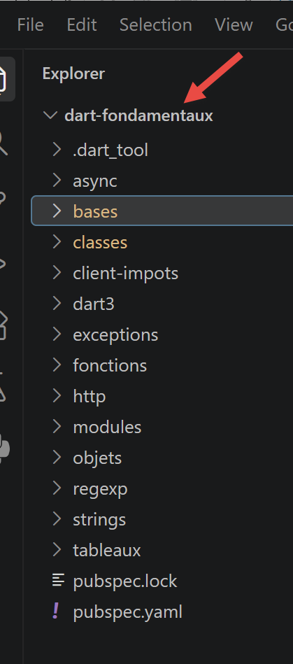
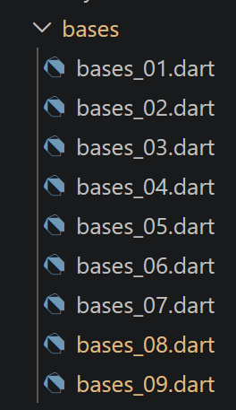
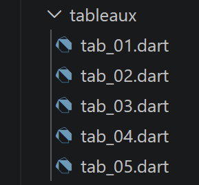
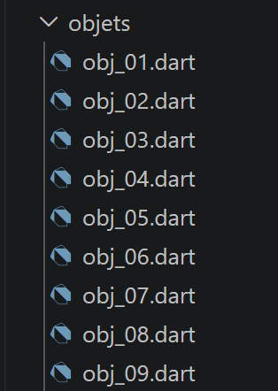
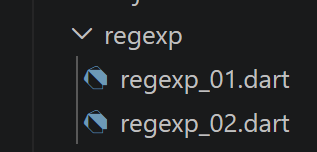
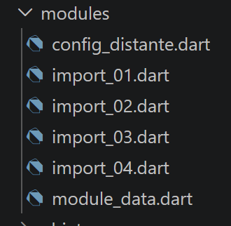
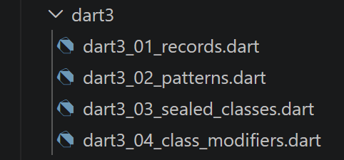

3. The Fundamentals

This chapter follows, script by script, the progression of chapter [Les fondamentaux] from the TypeScript course: same sections, same order, with a Dart script corresponding to each TypeScript script.
3.1. The Basics of Dart
This first section covers the fundamentals common to all Dart programs: variables, lists, loops, functions, variable scope, basic types, and conversions.

3.1.1. [bases_01] script
| // bases_01.dart
// Contains the script TypeScript bases-01.ts: variables, arrays, loops,
// destructuring, functions, dynamic typing, comparison operators.
void main() {
// Constants—in Dart, just like in TypeScript, [const] declares a constant
// whose value is known at the COMPILATION (an even more
// strict than the [const] of TypeScript, which itself requires only a value
// known at runtime and not reassigned)
const String nom = "dupont";
// a screen display—[print] is the Dart equivalent of [console.log]
print("nom : $nom");
// an array (called a “list” in Dart) with elements of different types
// [dynamic] because this list intentionally mixes several types
// (demonstration) — this is the equivalent of [any] from TypeScript: Dart
// no longer performs any type checking at compile time
// on the elements in this list
final List<dynamic> tableau = ["un", "deux", 3, 4];
// its number of elements
int n = tableau.length;
// a loop
for (var i = 0; i < n; i++) {
print("tableau[$i] = ${tableau[i]}");
}
// initialization of 2 variables with the contents of a list
// Dart does not support list destructuring in assignment, such as
// TypeScript (const [a, b] = array); since Dart 3, you can use
// a "list pattern" to achieve the same result (see dart3/*.dart
// for a complete overview of patterns)
final [chaine1, chaine2] = ["chaine1", "chaine2"];
// concatenation of the two strings
final String chaine3 = chaine1 + chaine2;
// displaying the result
print([chaine1, chaine2, chaine3]);
// using a function
affiche(chaine1);
// the type of a variable can be determined using runtimeType
// (the Dart equivalent of the [typeof] operator from TypeScript)
afficheType("n", n);
afficheType("chaine1", chaine1);
afficheType("tableau", tableau);
// [ATTENTION, différence de fond avec TypeScript] to TypeScript, the type
// [any] allows a variable to change its type at runtime
// (n = "has changed" after n = 4 is valid). In Dart, the type of a
// variable is set once and for all by its declaration: [n] was
// declared as [int] above, so n = "has changed" is a ERREUR DE
// COMPILATION, not a simple oversight tolerated at runtime. For
// to achieve behavior comparable to [any], one would need to declare
// [dynamic n = tableau.length;] from the start—but that is not what
// this script does, intentionally, to highlight the difference.
// The next line is therefore COMMENTÉE: uncommenting it causes a
// compilation error.
// n = "has changed";
print('type[variable n]=${n.runtimeType} (Dart interdit de lui affecter '
'anything other than an int: see the comment above)');
// A function can return a result
int res1 = f1(4);
print("res1=$res1");
// A function can return multiple values: Dart cannot return
// a heterogeneous array directly into separate variables using
// syntax such as [let x, y, z; [x, y, z] = f()]. We use
// either as a Record (see dart3/, the modern, typed solution), or here,
// to stay close to the original script, a list that we destructure
// using a list pattern (Dart 3):
final (res2, res3, res4) = f2();
print("(res2,res3,res4)=${[res2, res3, res4]}");
// we could have retrieved these values in a list
final List<dynamic> t = f2ListeAny();
for (var i = 0; i < t.length; i++) {
print("t[$i]=${t[i]}");
}
// from the tests
for (var i = 0; i < t.length; i++) {
// displays only the strings—[is String] is the Dart equivalent of
// [typeof(x) === "string"]
if (t[i] is String) {
print("t[$i]=${t[i]}");
}
}
// [ATTENTION, différence de fond avec TypeScript/JavaScript] the operator
// [==] in Dart corresponds to TOUJOURS the strict operator [===] in
// JavaScript: In Dart, there is no comparison operator with
// implicit type conversion, such as the non-strict [==] of JavaScript.
// The comparison "2" == 2 is therefore always false in Dart, regardless of
// the operator used—the code below therefore intentionally
// only one branch (no section “with ==” followed by “with ===” as
// in the original script TypeScript, since this distinction does not exist).
if ("2" == 2) {
print("la chaîne 2 est égale à l'entier 2");
} else {
print("en Dart, la chaîne '2' n'est jamais égale à l'entier 2 "
"(pas de conversion implicite comme le == non strict de JS)");
}
// Other tests
for (var i = 0; i < t.length; i++) {
// displays only integers greater than 10
if (t[i] is int && t[i] > 10) {
print("t[$i]=${t[i]}");
}
}
// a while loop
List<num> t2 = [8, 5, 0, -2, 3, 4];
var i = 0;
num somme = 0;
while (i < t2.length && t2[i] > 0) {
print("t2[$i]=${t2[i]}");
somme += t2[i];
i++;
}
print("somme=$somme");
}
// the `main` program stops here because there is no more executable code
// displays
// ----------------------------------
void affiche(String chaine) {
// displays a string
print("chaine=$chaine");
}
// afficheType
// ----------------------------------
void afficheType(String name, dynamic variable) {
// displays the variable type—[runtimeType] is the Dart equivalent of
// [typeof]: unlike [typeof], which returns a generic string
// ("number", "string"...), [runtimeType] returns the name of the Dart type VRAI
// of the value (int, String, List<dynamic>...)
print("type[variable $name]=${variable.runtimeType}");
}
// ----------------------------------
int f1(int param) {
// adds 10 to the parameter
return param + 10;
}
// ----------------------------------
// returns 3 values as a Record (Dart 3)—the modern Dart type—and
// typed for what TypeScript would do with a heterogeneous array [any[]]
(String, int, int) f2() {
return ("un", 0, 100);
}
// same result as f2(), but as a list [dynamic] to
// to stay as close as possible to the notation [any[]] used in the original script TypeScript
List<dynamic> f2ListeAny() {
return ["un", 0, 100];
}
|
Let’s comment on this code:
- line 9: [const String nom]: In Dart, [const] requires a value known at the time of COMPILATION — a stricter constraint than [const] for TypeScript, which only requires a value that has not been reassigned at runtime.
- Line 18: [List<dynamic> tableau]: Dart refers to “the array of JavaScript]* a [liste], and [dynamic] plays the role of [any] in TypeScript to disable type checking on the elements.
- Line 31: [final [chaine1, chaine2] = [...]]: Dart does not support destructuring assignments like TypeScript; the Dart 3 version PATTERN DE LISTE, used here, yields the same result (a complete overview of the patterns is provided in the chapter [Nouveautés Dart 3.x]).
- Line 56: [n.runtimeType] replaces the [typeof] operator from TypeScript, with one difference: it makes VRAI a Dart type name ([int], [List<dynamic>]...), not just a generic string (["number"], ["string"]).
- The line [n = "a changé";] is intentionally commented out: unlike a variable [any] of type TypeScript, a Dart variable retains the type specified at its declaration—this assignment would result in ERREUR, DE, and COMPILATION.
- line 69: [final (res2, res3, res4) = f2();]: a Dart function cannot “return multiple values” into separate variables as a heterogeneous array TypeScript would; [f2] returns a RECORD (Dart 3) here, which is immediately destructured by a list pattern.
- line 94: [if ("2" == 2)]: Dart’s [] operator corresponds to the strict [=] of JavaScript - There is no Dart equivalent for the non-strict [==] of JavaScript, so there is no second case to show here, unlike in the original TypeScript script.
As a reminder, to run a Dart script, you can type the following command in a terminal:
dart run chemin_du_script.dart
For example, as shown below:
if your terminal is set to the folder containing the script [bases_01.dart]. You can also click on the term [Run] in the text editor, which appears above the function [main]:

The result of running [bases_01] is as follows:
| nom : dupont
tableau[0] = un
tableau[1] = deux
tableau[2] = 3
tableau[3] = 4
[chaine1, chaine2, chaine1chaine2]
chaine=chaine1
type[variable n]=int
type[variable chaine1]=String
type[variable tableau]=List<dynamic>
type[variable n]=int (Dart interdit de lui affecter autre chose qu'un int : voir le commentaire ci-dessus)
res1=14
(res2,res3,res4)=[un, 0, 100]
t[0]=un
t[1]=0
t[2]=100
t[0]=un
en Dart, la chaîne '2' n'est jamais égale à l'entier 2 (pas de conversion implicite comme le == non strict de JS)
t[2]=100
t2[0]=8
t2[1]=5
somme=13
|
3.1.2. script [bases_02]
| // bases_02.dart
// Note: bases-02.ts: `var`/`let`/`const` in TypeScript, `var`/`final`/`const` in Dart.
void main() {
// To initialize a variable, use [var] (inferred type) or an
// explicit type (such as [int] here) for variables of type MODIFIABLES -
// the equivalent of [let] for TypeScript
int x = 4;
x++;
print(x);
// [final] for a variable assigned UNE SEULE FOIS at runtime -
// the equivalent of [const] for TypeScript (a value known only at
// at runtime, but cannot be reassigned afterward)
final int y = 10;
x += y;
// not allowed—x is modifiable but y is not: y++ causes a
// compilation error, exactly as in TypeScript
// y++;
// [NOUVEAU par rapport à TypeScript] Dart offers a second keyword,
// [const], which is stricter than [final]: a constant [const] must be
// known to COMPILATION (as at the very beginning of bases_01.dart). There
// there is no equivalent of this final/const distinction in
// TypeScript, where [const] simply means “unassigned.”
const int z = 100; // known at compile time: valid
print(z);
}
|
Let’s break down this code:
- A mutable variable is declared with an explicit type (or [var]): this is equivalent to [let] from TypeScript.
- [final] is the equivalent of [const] in TypeScript: a value assigned only once, but whose value is not known until runtime.
- Line 19: [NOUVEAU] Dart adds a second keyword, [const], which is stricter than [final]: a value [const] must be known at the time of COMPILATION. TypeScript does not have this two-level distinction.
The result of the execution is as follows:
3.1.3. script [bases_03]
| // bases_03.dart
// bases-03.ts: variable scope—a top-level variable
// file-level (top-level scope, the Dart equivalent of module scope)
//(from TypeScript) is visible from functions in the same file.
// is a top-level variable (outside of any function or class), like [let]
// is a top-level variable in the script TypeScript
int count = 1;
void doSomething() {
// "count" is known here: a function can access the top-level variables of the
// file that contains it, exactly as in TypeScript
print("count=$count");
}
void main() {
// call
doSomething();
}
|
Let’s comment on this code:
- A variable declared outside any function (scope [top-level]) is visible from all functions in the same file—exactly the role of a module-scope variable in TypeScript.
The result of execution is as follows:
3.1.4. script [bases_04]
| // bases_04.dart
// bases-04.ts: a local variable within a function masks a variable
// top-level variable with the same name—the same shadowing principle as in
// TypeScript.
// top-level variable
const int count = 1;
void doSomething() {
// the local variable shadows the top-level variable
const count = 2;
print("count inside function=$count");
}
void main() {
// top-level variable
print("count outside function=$count");
// local variable
doSomething();
}
|
Let’s comment on this code:
- A local variable within a function, with the same name as a top-level variable—MASQUE ([shadowing])—inside this function—the same principle as in TypeScript.
The result of the execution is as follows:
| count outside function=1
count inside function=2
|
3.1.5. script [bases_05]
| // bases_05.dart
// bases-05.ts: a variable declared inside a function
// is not known outside of it—same principle as in TypeScript.
void doSomething() {
// variable local to the function
const count = 2;
print("count inside function=$count");
}
void main() {
// Here, `count` is not recognized: the following line, if uncommented,
// would cause a compilation error (“Undefined name 'count'”),
// just as in TypeScript
// print("count outside function=$count");
doSomething();
}
|
Let’s comment on this code:
- A variable declared inside a function is not visible outside of it: referencing it outside the function results in a compilation error, just as in TypeScript.
The result of execution is as follows:
3.1.6. [bases_06] script
This script is shorter than its equivalent TypeScript: see the comment at the top of the file for the reason.
| // bases_06.dart
// Scope bases-06.ts: block scope.
//
// [ATTENTION, différence de fond avec TypeScript/JavaScript] TypeScript a
// TROIS keywords with different scopes: [let] and [const]
// is in scope for BLOC, but [var] (inherited from JavaScript) is in scope for
// FONCTION—a variable [var] declared in a {...} block “leaks” into
// outside that block, which is exactly what this script demonstrates with [count3].
// Dart does not have PAS an equivalent to [var]: [var], [final], and [const] are
// TOUJOURS within block scope in Dart, without exception. This script is therefore
// shorter than the original: there are only two cases to show, not three,
// and both behave like the [let]/[const] cases in TypeScript.
void main() {
// [var] (inferred type) defines a block-scoped variable
{
// The variable [count] is known only within this block
var count = 1;
print("count=$count");
}
// Here, the variable [count] is not recognized: the following line, if
// uncommented, would cause a compilation error
// count++;
// [final] defines a (non-reassignable) variable with block scope
{
// the variable [count2] is only known within this block
final count2 = 1;
print("count=$count2");
}
// Here, the variable [count2] is also not recognized
// count2++;
// There is no third case in Dart: no declaration keyword
// allows a variable to “escape” outside the block where it is declared,
// unlike the [var] from TypeScript/JavaScript used for [count3]
// in the original script.
}
|
Let’s comment on this code:
- [var] and [final] are TOUJOURS within the scope of BLOC in Dart, without any exceptions.
- This script shows only the DEUX case, whereas the TypeScript script showed three: Dart has no equivalent to [var] from JavaScript, whose scope is that of FONCTION (not the block) and which “leaks” out of a [{...}] block—a classic source of bugs in JavaScript, but structurally impossible in Dart.
The result of the execution is as follows:
3.1.7. script [bases_07]
| // bases_07.dart
// bases-07.ts: the major basic data types and their
// Introspection with runtimeType (the Dart equivalent of `typeof`).
void main() {
const int var1 = 10;
const String var2 = "abc";
const bool var3 = true;
const List<int> var4 = [1, 2, 3];
const Map<String, String> var5 = {'nom': 'axèle'};
// A variable of type function—Dart types functions using the
// [TypeDeRetour Function(paramètres)]
int Function() var6 = () => 3;
// Displaying types with runtimeType
print("var1.runtimeType=${var1.runtimeType}");
print("var2.runtimeType=${var2.runtimeType}");
print("var3.runtimeType=${var3.runtimeType}");
print("var4.runtimeType=${var4.runtimeType}");
print("var5.runtimeType=${var5.runtimeType}");
print("var6.runtimeType=${var6.runtimeType}");
}
|
Let’s comment on this code:
- line 12: [int Function() var6 = () => 3;]: In Dart, functions are defined using the notation [TypeDeRetour Function(paramètres)]—a function is a type like any other, assignable to a variable.
- line 8: [runtimeType] displays, for each variable, its Dart type (VRAI, [int], [String], [List<int>], [Map<String, String>] (line 9), [() => int]...).
The result of the execution is as follows:
| var1.runtimeType=int
var2.runtimeType=String
var3.runtimeType=bool
var4.runtimeType=List<int>
var5.runtimeType=_ConstMap<String, String>
var6.runtimeType=() => int
|
3.1.8. script [bases_08]
This script differs in nature from its equivalent, TypeScript: whereas bases-08.ts illustrated the conversions IMPLICITES from JavaScript, this script shows the conversions EXPLICITES that must be written instead, since Dart does not perform any such conversions (see the comment at the top of the file for details on the three relevant rules).
| // bases_08.dart
// Port bases-08.ts.
//
// [ATTENTION, différence de fond avec TypeScript/JavaScript] this script
// is completely different in nature from the original. JavaScript (and
// and therefore TypeScript, which simply adds verified types to the
// COMPILATION but retains the behavior of JavaScript at EXÉCUTION)
// performs numerous type conversions from IMPLICITES at runtime:
// - In a test with [if (data) ...], any value is converted to
// a Boolean ("" and 0 are "false," "abcd" and [1,2,3] are "true"...) ;
// - the operator [+] performs an addition SI LES DEUX; the operands are
// numbers; otherwise, it is a string concatenation (“12” * 1 equals 12, but
// "12" + 1 equals "121");
// - true/false are converted to 1/0 in a calculation...
// Dart has none of these implicit conversions:
// - the condition of an `if` statement must be a `true` or `false`, period: [if
// ("abcd")] is a ERREUR DE COMPILATION, not an automatic conversion;
// - [+] requires operands of type MÊME (String+String or num+num): "12"
// + 1 results in a compilation error;
// - a [bool] is never implicitly converted to a number.
// This script therefore shows, unlike the original TypeScript script, the
// conversions EXPLICITES that must be written in place of each of these
// implicit conversions.
void main() {
print("---------------[Pas de conversion implicite vers un booléen]------"
"------------------------------");
// to TypeScript, [showBool(valeur)] directly tests the "truthfulness" of
// any value. In Dart, you have to write the explicit test yourself
// that explicitly corresponds to what you actually want to check: an empty string
// empty string, an empty list, a null value... [showBool] below
// therefore intentionally accepts only a [Object?] (nullable) and documents,
// for each type family, the equivalent conversion EXPLICITE
showBoolEquivalent("abcd", (v) => (v as String).isNotEmpty);
showBoolEquivalent("", (v) => (v as String).isNotEmpty);
showBoolEquivalent([1, 2, 3], (v) => (v as List).isNotEmpty);
showBoolEquivalent(<int>[], (v) => (v as List).isNotEmpty);
showBoolEquivalent(null, (v) => v != null);
showBoolEquivalent(0.0, (v) => (v as double) != 0.0);
showBoolEquivalent(0, (v) => (v as int) != 0);
showBoolEquivalent(4.6, (v) => (v as double) != 0.0);
print("---------------[Conversion explicite d'une chaîne vers un nombre]"
"------------------------------");
showNumber("12");
showNumber("45.67");
showNumber("abcd");
print("---------------[Conversion explicite vers un booléen]------------"
"------------------------------");
// unlike Boolean(data) in JavaScript (which applies the rules of
// "truth"), there is no equivalent generic Dart function:
// each type must provide its own concept of “empty/non-empty” (shown
// above with showBoolEquivalent)
print("---------------[Conversion explicite vers un nombre]-------------"
"-----------------------------");
showNumber2("12.45");
showNumber2(true); // this case is handled separately below
showNumber2(null);
print("---------------[Conversion explicite vers une chaîne]-------------"
"-----------------------------");
showString(5);
showString(6.7);
showString(false);
showString(null);
print("---------------[Autres cas]------------------------------");
const String string1 = '1000.78';
// In Dart, [+] between a String and a num results in a compilation error:
// You must explicitly convert one of the two operands
// Convert `string1` to a number, then add
final double data1 = double.parse(string1) + 1.034;
print("data1=$data1 (conversion explicite obligatoire, contrairement à "
"'1000.78' + 1.034 en JS qui concatène en chaîne)");
// Reverse conversion: convert the number to a string, then concatenate
final String data2 = (1.034).toString() + string1;
print("data2=$data2 (ici on choisit sciemment la concaténation, en "
"convertissant le nombre)");
// true/false are not implicitly converted to numbers in Dart -
// you must write the desired conversion yourself. [valeurBool] is a
// variable (and not the literal [true] directly): with a literal,
// Dart Analyze would treat the branch [: 0.0] as dead code (which is always
// incorrect), since the condition would then be known at compile time.
// (deliberately [final], not [const]: a [const] would remain a constant
// at compile time, and dart analyze would still detect the dead code)
final bool valeurBool = true;
final double data3 = valeurBool ? 1.0 : 0.0;
print("data3=$data3 (équivalent explicite de 'true * 1.18' de JS, "
"combiné à la multiplication ci-dessous)");
print("true converti puis multiplié par 1.18 = ${data3 * 1.18}");
}
// displays, for a given value, the Boolean conversion EXPLICITE, which
// replaces the implicit conversion of JavaScript—[testeur] encodes the
// "correct" way to test this particular value
void showBoolEquivalent(Object? data, bool Function(Object?) testeur) {
print("[data=$data], [type(data)]=${data.runtimeType}, "
"[test explicite équivalent]=${testeur(data)}");
}
void showNumber(String data) {
// unlike [data * 1] in JS (which fails silently in NaN if
// the data is not numeric), [double.parse] raises a [FormatException]
// explicitly in case of failure—we catch it here to illustrate the case
// "abcd" from the original script
try {
final nombre = double.parse(data);
print("[data=$data], [nombre]=$nombre, [type(nombre)]="
"${nombre.runtimeType}");
} on FormatException {
print("[data=$data] : FormatException, ce n'est pas un nombre valide "
"(contrairement à Number('$data') en JS, qui rendrait NaN sans "
"lever d'erreur)");
}
}
void showNumber2(Object? data) {
// explicit conversion based on the actual data type—there is no
// single Dart function equivalent to `Number()` that would accept
// either a num, a bool, or null
double? nombre;
if (data is num) {
nombre = data.toDouble();
} else if (data is String) {
nombre = double.tryParse(data);
} else if (data is bool) {
nombre = data ? 1.0 : 0.0;
}
print("[data=$data], [type(data)]=${data.runtimeType}, [nombre]=$nombre, "
"[type(nombre)]=${nombre.runtimeType}");
}
void showString(Object? data) {
// toString() exists on (almost) every Dart object, including null
// (returns "null")—quite similar, in this case, to the behavior of `String(data)`
final String chaine = data.toString();
print("[data=$data], [type(data)]=${data.runtimeType}, [chaîne]=$chaine, "
"[type(chaîne)]=${chaine.runtimeType}");
}
|
Let's discuss this code:
- [showBoolEquivalent]: Dart does not have an implicit conversion to [bool]—a condition of type [if] requires a VRAI or [bool]; Each type family (string, list, number) must explicitly provide its own “empty/non-empty” test.
- Line 126: [double.parse]/[double.tryParse] replace the implicit conversion [Number(chaine)] from JavaScript: [parse] raises an explicit [FormatException] on failure; [tryParse] returns [null]—never a silent [NaN].
- Line 73: [double.parse(string1) + 1.034]: [+] between a [String] and a [num] is a COMPILATION error in Dart - unlike ['1000.78' + 1.034] to JavaScript, which concatenates silently.
- [true ? 1.0 : 0.0]: [bool] is not implicitly converted to a number in Dart—you must write the desired mapping yourself, whereas [true * 1.18] is valid in JavaScript.
The result of the execution is as follows:
| ---------------[Pas de conversion implicite vers un booléen]------------------------------------
[data=abcd], [type(data)]=String, [test explicite équivalent]=true
[data=], [type(data)]=String, [test explicite équivalent]=false
[data=[1, 2, 3]], [type(data)]=List<int>, [test explicite équivalent]=true
[data=[]], [type(data)]=List<int>, [test explicite équivalent]=false
[data=null], [type(data)]=Null, [test explicite équivalent]=false
[data=0.0], [type(data)]=double, [test explicite équivalent]=false
[data=0], [type(data)]=int, [test explicite équivalent]=false
[data=4.6], [type(data)]=double, [test explicite équivalent]=true
---------------[Conversion explicite d'une chaîne vers un nombre]------------------------------
[data=12], [nombre]=12.0, [type(nombre)]=double
[data=45.67], [nombre]=45.67, [type(nombre)]=double
[data=abcd] : FormatException, ce n'est pas un nombre valide (contrairement à Number('abcd') en JS, qui rendrait NaN sans lever d'erreur)
---------------[Conversion explicite vers un booléen]------------------------------------------
---------------[Conversion explicite vers un nombre]------------------------------------------
[data=12.45], [type(data)]=String, [nombre]=12.45, [type(nombre)]=double
[data=true], [type(data)]=bool, [nombre]=1.0, [type(nombre)]=double
[data=null], [type(data)]=Null, [nombre]=null, [type(nombre)]=Null
---------------[Conversion explicite vers une chaîne]------------------------------------------
[data=5], [type(data)]=int, [chaîne]=5, [type(chaîne)]=String
[data=6.7], [type(data)]=double, [chaîne]=6.7, [type(chaîne)]=String
[data=false], [type(data)]=bool, [chaîne]=false, [type(chaîne)]=String
[data=null], [type(data)]=Null, [chaîne]=null, [type(chaîne)]=String
---------------[Autres cas]------------------------------
data1=1001.814 (conversion explicite obligatoire, contrairement à '1000.78' + 1.034 en JS qui concatène en chaîne)
data2=1.0341000.78 (ici on choisit sciemment la concaténation, en convertissant le nombre)
data3=1.0 (équivalent explicite de 'true * 1.18' de JS, combiné à la multiplication ci-dessous)
true converti puis multiplié par 1.18 = 1.18
|
3.1.9. [bases_09] script
Unlike the new features in ECMAScript, which will be replaced by chapter [Nouveautés Dart 3.x], this script remains in place: most of these operators have existed natively in Dart for a long time, sometimes well before 2020.
| // bases_09.dart
// Includes bases-09.ts (the modern operators ECMAScript from 2020–2021).
// Unlike the "new features ECMAScript," which will be replaced later
// by the "What's New in Dart 3.x" section, this script remains ICI: most of
// these operators have existed natively in Dart for a long time (sometimes
// since Dart 2.0/2.12, well before 2020), so they are part of the
// Dart fundamentals, just like the rest of this chapter.
void main() {
// ------------------------------------------------------------------------
// 1) The null coalescing operator—[??]—has existed in Dart for
// a long time (Dart 2.0), and behaves EXACTEMENT just like in TypeScript:
// it only triggers the default value if the value is null (Dart
// does not have a separate value [undefined] from [null])
// ------------------------------------------------------------------------
// is typed as [int?] (nullable), not [int]: with a non-nullable type,
// Dart Analyze would correctly flag that [?? 10] can never
// be triggered (the type already guarantees that quantity1 is not null)—so
// the point here is precisely to compare the behavior of [??] when
// a non-null value (quantity1) and a null value (quantity2)
const int? quantite1 = 0;
// In Dart, there is no operator [||] for this purpose: the [||]
// Dart logic only accepts [bool] operands, so "quantity1 ||
// 10" would result in a compilation error—so there is only one
// operator to show here, [??], without the risk of a bug illustrated by the
// original TypeScript script (0 is in any case a [int], never
// interpreted as "false")
print("quantite1 ?? 10 = ${quantite1 ?? 10}"); // -> 0 (quantity1 is not null)
const int? quantite2 = null;
print("quantite2 ?? 10 = ${quantite2 ?? 10}"); // -> 10 (quantity2 is null)
// ------------------------------------------------------------------------
// 2) optional chaining [?.]—has also existed in Dart for a long time
// ------------------------------------------------------------------------
final personne1 = PersonneAvecAdresseOptionnelle(
nom: "Dupont",
adresse: Adresse(ville: "Nantes"),
);
final personne2 = PersonneAvecAdresseOptionnelle(nom: "Martin"); // no address!
// [?.] stops evaluation and returns [null] as soon as a step is null, at the
// instead of throwing an exception "NoSuchMethodError" on null
print("personne1 ville = ${personne1.adresse?.ville}");
print("personne2 ville = ${personne2.adresse?.ville}"); // -> null, no error
// [?.] and [??] can be combined to provide a replacement value
print("personne2 ville (avec défaut) = ${personne2.adresse?.ville ?? "ville inconnue"}");
// [?.] also works on method calls...
final objetAvecMethode = ObjetAvecMethode();
print("appel méthode existante : ${objetAvecMethode.direBonjour()}");
// ...and when accessing a list element (via the [?[ ]] operator)
final List<int>? listeOuNull = null;
print("élément d'une liste absente : ${listeOuNull?[0]}"); // -> null
// ------------------------------------------------------------------------
// 3) logical assignment operators [??=]
// ------------------------------------------------------------------------
// [a ??= b] is equivalent to [a = a ?? b]: assigns b only if a is null -
// This one exists in Dart, with exactly the same syntax as in
// TypeScript
final config = Configuration(delai: 0, page: null);
config.delai ??= 1000; // the delay is already 0 (valid value) -> remains unchanged
config.page ??= 1; // page is null -> becomes 1
print("config après ??= : délai=${config.delai}, page=${config.page}");
// [ATTENTION, différence de fond avec TypeScript] Dart HAS NO PAS
// of operators [||=] and [&&=]: Dart’s [||] and [&&] only accept
// only [bool] (as seen in point 1), and there is no
// assignment shortcut for this case—you must write the test explicitly
String messageAffiche = "";
// explicit equivalent of [messageAffiche ||= "message par défaut"]:
// In Dart, you must write the meaningful “false” test yourself (here:
// an empty string) rather than relying on a generic notion of “false”
if (messageAffiche.isEmpty) {
messageAffiche = "message par défaut";
}
print("messageAffiche après le if équivalent à ||= : $messageAffiche");
// explicit equivalent of [a &&= b] (assigns b only if a is already
// "true"): again, a simple if statement, since [a] must be a true Boolean
bool utilisateurConnecte = true;
if (utilisateurConnecte) {
utilisateurConnecte = true; // "b" from a &&= b
}
print("utilisateurConnecte après le if équivalent à &&= : $utilisateurConnecte");
// ------------------------------------------------------------------------
// 4) Numeric separators [_] in literals
// ------------------------------------------------------------------------
// [ATTENTION, différence avec TypeScript] Dart does not accept PAS the character
// [_] as a visual separator in a numeric literal: "1_000_000"
// is a syntax error in Dart. You must write the number "in plain text,"
// and, if necessary, format it for display using the [intl] package
// (NumberFormat) if the goal is to make it readable on screen.
const int unMillion = 1000000;
print("unMillion = $unMillion");
// ------------------------------------------------------------------------
// 5) BigInt
// ------------------------------------------------------------------------
// [ATTENTION, différence de fond avec TypeScript/JavaScript] the type
// [number] of JavaScript is a double-precision floating-point number, which loses its
// precision beyond approximately 2^53—hence the need for a separate type, [BigInt]
// for very large exact integers (credit card numbers,
// usernames, etc.). Dart’s [int] type, on the other hand, is a 64-bit signed integer
// on all native platforms (VM, AOT): it remains
// exact up to 2^63-1, well beyond the [Number.MAX_SAFE_INTEGER]
// of JavaScript (2^53-1)—most use cases that would require a
// BigInt to JavaScript simply do not require it in Dart.
print("l'équivalent Dart de Number.MAX_SAFE_INTEGER n'existe pas : "
"int est exact jusqu'à 9223372036854775807 (2^63-1)");
const int grandNombre = 9007199254740993; // > 2^53, imprecise in JS, exact here
print("grandNombre = $grandNombre (exact, alors qu'il perdrait sa "
"précision stocké dans un Number JavaScript)");
// for truly unlimited needs (beyond 64 bits, e.g.,
// cryptographic calculations), Dart does not provide PAS of type BigInt in its
// standard library (dart:core): you must therefore turn to a
// third-party package such as package:fixnum, or implement your own calculation—
// a need that is significantly less common than in JavaScript, based on the above.
}
// ------------------------------------------------------------------------
// utility classes for demonstrating optional chaining
// ------------------------------------------------------------------------
class Adresse {
final String ville;
Adresse({required this.ville});
}
class PersonneAvecAdresseOptionnelle {
final String nom;
final Adresse? adresse; // address is optional (nullable)
PersonneAvecAdresseOptionnelle({required this.nom, this.adresse});
}
class ObjetAvecMethode {
String direBonjour() => "bonjour !";
}
class Configuration {
int? delai;
int? page;
Configuration({this.delai, this.page});
}
|
Let’s comment on this code:
- [??] and [?.] (null coalescing, optional chaining) have been part of Dart for a long time and behave exactly as they do in TypeScript.
- Line 63: [config.delai ??= 1000;]: The logical assignment [??=] exists in Dart, with the same syntax as in TypeScript.
- Dart has no equivalent for the operators [||=] and [&&=]: its [||]/[&&] only accepts [bool], so there is no generic concept of “false” to bypass—a simple explicit [if] replaces them.
- [1_000_000] is a ERREUR DE SYNTAXE in Dart: unlike TypeScript, no visual separators are allowed in a numeric literal.
- [int] is a valid 64-bit integer SIGNÉ EXACT on any native Dart platform, up to 2^63-1 —well beyond [Number.MAX_SAFE_INTEGER] (2^53-1): most use cases that would require a [BigInt] or JavaScript simply do not need them in Dart, which, incidentally, does not offer [BigInt] in its standard library.
The result of the execution is as follows:
| quantite1 ?? 10 = 0
quantite2 ?? 10 = 10
personne1 ville = Nantes
personne2 ville = null
personne2 ville (avec défaut) = ville inconnue
appel méthode existante : bonjour !
élément d'une liste absente : null
config après ??= : délai=0, page=1
messageAffiche après le if équivalent à ||= : message par défaut
utilisateurConnecte après le if équivalent à &&= : true
unMillion = 1000000
l'équivalent Dart de Number.MAX_SAFE_INTEGER n'existe pas : int est exact jusqu'à 9223372036854775807 (2^63-1)
grandNombre = 9007199254740993 (exact, alors qu'il perdrait sa précision stocké dans un Number JavaScript)
|
3.1.10. Conclusion
This first section laid the groundwork: strict typing without implicit coercion, the distinction between [final] and [const], systematic block scope, and the absence of destructuring assignment (compensated for by Dart 3 patterns). These differences will come up throughout the course.
3.2. Arrays

In Dart, an “array” is called a [liste] ([List]). This section covers classic list operations: reference vs. value, iteration, methods on the ends, functional methods, and the recent “immutable” methods of JavaScript.
3.2.1. script [tab_01]
| // tab_01.dart
// tab-01.ts: a list is an object manipulated via its reference,
// just like an array JavaScript/TypeScript.
void main() {
final List<int> tab1 = [1, 2, 3];
// copy of RÉFÉRENCE, no content
final List<int> tab2 = tab1;
// tab1 and tab2 point to the same list—[identical] is the equivalent
// Dart from [===] applied to the IDENTITÉ object (instead of [==], which, for
// the Lists compare the contents; see the note below)
print("identical(tab1, tab2) : ${identical(tab1, tab2)}");
// You can modify the list using either tab1 or tab2
tab2[1] = 10;
print("tab1=$tab1");
print("tab2=$tab2");
// [remarque propre à Dart] unlike JavaScript where [tab1 === tab2]
// and [tab1 == tab2] are equivalent for arrays (comparison of
// reference in both cases), the Dart operator [==] on an object
// List also compares by default the RÉFÉRENCE (not the content): []
// == [] is therefore false in Dart, as shown by the following line
print("[1, 2] == [1, 2] (deux listes différentes) : ${[1, 2] == [1, 2]}");
}
|
Let’s comment on this code:
- line 7: [final List<int> tab2 = tab1;] copies RÉFÉRENCE, not its contents: [tab1] and [tab2] refer to the same list, exactly as in JavaScript.
- Line 11: [identical(tab1, tab2)] is the Dart equivalent of [===] applied to the IDENTITÉ object.
- Line 22: [[1, 2] == [1, 2]] is the Dart version of FAUX: unlike JavaScript, where [===] and [] are equivalent on arrays (reference comparison in both cases), the Dart operator [] applied to a [List] compares, by default, LUI to AUSSI—the reference, not the content.
The result of the execution is as follows:
| identical(tab1, tab2) : true
tab1=[1, 10, 3]
tab2=[1, 10, 3]
[1, 2] == [1, 2] (deux listes différentes) : false
|
3.2.2. script [tab_02]
An important difference to note before this script: see the comment at the top of the file regarding the absence of empty lists in Dart.
| // tab_02.dart
// Contains tab-02.ts.
//
// [ATTENTION, différence de fond avec TypeScript/JavaScript] is an array
// JavaScript is "sparse": we can write tab[3] = 100 to a
// empty array, which automatically extends its length to 4, leaving
// "gaps" (indices without values, other than undefined). A List
// Dart list is PAS empty: its valid indices always range from 0 to length-1
// with no gaps, and writing tab[3] to a list of length 0 raises a
// [RangeError] (index out of bounds) - the list never grows
// by indexed assignment alone. To extend it, you need [add] (at the end)
// or one of the methods in the following section (tab_03.dart, tab_04.dart).
void main() {
// [dynamic] because this list will contain values of different types
final List<dynamic> tab = [];
print("tab=$tab, longueur=[${tab.length}]");
print("-------------------------------");
// no direct equivalent for tab[3] = 100 on an empty list: we construct
// the same visual result (gaps) by explicitly filling with
// null up to the desired index, which makes the gaps VISIBLES (nulls),
// whereas JavaScript leaves them invisible (neither a value nor an explicit undefined
// explicit)
while (tab.length <= 3) {
tab.add(null);
}
tab[3] = 100;
tab[1] = "huit";
print("tab=$tab, longueur=[${tab.length}]");
print("-------------------------------");
// toString
print("tab.toString=[${tab.toString()}]");
print("-------------------------------");
// The keys of a Dart list are always 0..length-1: no separate method
// [keys()] separate method; we use the indices directly with a [for]
for (var cle = 0; cle < tab.length; cle++) {
print("clé=[$cle], valeur=[${tab[cle]}]");
}
print("-------------------------------");
// the list’s values—[tab] EST—are already an iterable of those values,
// unlike JavaScript, where tab.values() returns a separate iterator
for (var valeur in tab) {
print("valeur=[$valeur]");
}
}
|
Let’s comment on this code:
- A Dart array is not empty (JAMAIS): its valid indices always range from 0 to [length-1] without any gaps.
- Line 10: Writing [tab[3]] to an empty list raises a [RangeError]—unlike JavaScript, where writing [tab[3] = 100] to an empty array automatically extends it by creating invisible “gaps.”
- The script explicitly fills in values from [null] up to the desired index to recreate, in the manner of VISIBLE, the same visual effect as the holes in JavaScript.
- Line 45: [for (var valeur in tab)]: a Dart [List] that is already an iterable over its values—no need for a separate method like in JavaScript.
The result of the execution is as follows:
| tab=[], longueur=[0]
-------------------------------
tab=[null, huit, null, 100], longueur=[4]
-------------------------------
tab.toString=[[null, huit, null, 100]]
-------------------------------
clé=[0], valeur=[null]
clé=[1], valeur=[huit]
clé=[2], valeur=[null]
clé=[3], valeur=[100]
-------------------------------
valeur=[null]
valeur=[huit]
valeur=[null]
valeur=[100]
|
3.2.3. script [tab_03]
| // tab_03.dart
// tab-03.ts: traversing a list and its manipulation methods
// at both ends (pop/push/shift/unshift) as well as splice.
void main() {
// A list can contain different data types
final List<dynamic> tab = [
1,
2,
"un",
"deux",
true,
[10, 20],
{'prop1': 10, 'prop2': "abc"},
];
// `print` can display the contents of a list
show(1);
print("tab=$tab");
show(2);
// Iterating over the list with forEach
tab.forEach((element) {
print("élément=$element ${element.runtimeType}");
});
show("2b");
// Iterating with `for-in`, which is more idiomatic in Dart than forEach for a
// simple iteration (forEach does not support break/continue, while for-in does)
for (final element in tab) {
print("élément=$element ${element.runtimeType}");
}
show(3);
// Iterating through the list with a classic indexed `for` loop
for (var i = 0; i < tab.length; i++) {
print("i=$i tab[i]=${tab[i]}");
}
show(4);
// modify tab[i]
tab[5] = [];
print("tab=$tab");
show(5);
// Removing the last element from the list—removeLast() is
// the Dart equivalent of pop()
var element = tab.removeLast();
print("élément=$element tab=$tab");
show(6);
// add an element to the end of the list—add() is the equivalent of
// push() (for a single element)
tab.add('xyz');
print("tab=$tab");
show(7);
// adds an element to the beginning of the list—insert(0, ...) is
// the equivalent of unshift()
tab.insert(0, 1000);
print("tab=$tab");
show(8);
// removes the first element—removeAt(0) is equivalent to shift()
element = tab.removeAt(0);
print("élément=$element tab=$tab");
show(9);
// Removes the second element from the list—there is no method
// [splice] in Dart; first, retrieve the relevant subset with
// [sublist], then remove it with [removeRange]
var elements = tab.sublist(2, 3);
tab.removeRange(2, 3);
print("élément(s)=$elements tab=$tab");
show(10);
// we remove two elements from the list, starting with the first element
elements = tab.sublist(1, 3);
tab.removeRange(1, 3);
print("élément(s)=$elements tab=$tab");
}
// function
void show(Object param) {
print("[$param :::::::::::::::::::::::::::::::::::::::::::::::::::::::::"
":::::::::::::: ]");
}
|
Let’s comment on this code:
- Line 20: [tab.forEach(...)] exists, but [for (final element in tab)] (line 26) is preferred in Dart for a simple loop: unlike [forEach], a [for-in] accepts both [break] and [continue].
- Line 41: [tab.removeLast()] replaces [pop()]; [tab.add(...)] (line 46) replaces [push()] (for a single element); [tab.insert(0, ...)] (line 51) replaces [unshift()], and [tab.removeAt(0)] (line 55) replaces [shift()].
- Dart does not have a method named [splice]: first, retrieve the relevant subset using [sublist], then remove it using [removeRange]—two steps instead of a single call.
The result of the execution is as follows:
| [1 ::::::::::::::::::::::::::::::::::::::::::::::::::::::::::::::::::::::: ]
tab=[1, 2, un, deux, true, [10, 20], {prop1: 10, prop2: abc}]
[2 ::::::::::::::::::::::::::::::::::::::::::::::::::::::::::::::::::::::: ]
élément=1 int
élément=2 int
élément=un String
élément=deux String
élément=true bool
élément=[10, 20] List<int>
élément={prop1: 10, prop2: abc} _Map<String, Object>
[2b ::::::::::::::::::::::::::::::::::::::::::::::::::::::::::::::::::::::: ]
élément=1 int
élément=2 int
élément=un String
élément=deux String
élément=true bool
élément=[10, 20] List<int>
élément={prop1: 10, prop2: abc} _Map<String, Object>
[3 ::::::::::::::::::::::::::::::::::::::::::::::::::::::::::::::::::::::: ]
i=0 tab[i]=1
i=1 tab[i]=2
i=2 tab[i]=un
i=3 tab[i]=deux
i=4 tab[i]=true
i=5 tab[i]=[10, 20]
i=6 tab[i]={prop1: 10, prop2: abc}
[4 ::::::::::::::::::::::::::::::::::::::::::::::::::::::::::::::::::::::: ]
tab=[1, 2, un, deux, true, [], {prop1: 10, prop2: abc}]
[5 ::::::::::::::::::::::::::::::::::::::::::::::::::::::::::::::::::::::: ]
élément={prop1: 10, prop2: abc} tab=[1, 2, un, deux, true, []]
[6 ::::::::::::::::::::::::::::::::::::::::::::::::::::::::::::::::::::::: ]
tab=[1, 2, un, deux, true, [], xyz]
[7 ::::::::::::::::::::::::::::::::::::::::::::::::::::::::::::::::::::::: ]
tab=[1000, 1, 2, un, deux, true, [], xyz]
[8 ::::::::::::::::::::::::::::::::::::::::::::::::::::::::::::::::::::::: ]
élément=1000 tab=[1, 2, un, deux, true, [], xyz]
[9 ::::::::::::::::::::::::::::::::::::::::::::::::::::::::::::::::::::::: ]
élément(s)=[un] tab=[1, 2, deux, true, [], xyz]
[10 ::::::::::::::::::::::::::::::::::::::::::::::::::::::::::::::::::::::: ]
élément(s)=[2, deux] tab=[1, true, [], xyz]
|
3.2.4. script [tab_04]
| // tab_04.dart
// tab-04.ts: Functional Methods for List Manipulation -
// map, reduce, filter (where), find (firstWhere), findIndex (indexWhere),
// indexOf, lastIndexOf, sort.
void main() {
// a list
final List<int> tab = List.generate(10, (i) => i * 10);
print("tab=$tab");
// map—returns a (lazy) Iterable; .toList() materializes it into a list,
// as .map() always does in JavaScript
final tab2 = tab.map((element) => {'prop1': element, 'prop2': element * element}).toList();
print("tab=$tab");
print("tab2=$tab2");
// reduce SANS initial value—same signature as in JavaScript
final somme = tab.reduce((accumulator, currentValue) => accumulator + currentValue);
print("somme tab=$somme");
// [ATTENTION, différence avec TypeScript] Dart does not have a `reduce()` method AVEC
// initial value: this is the role of a separate method, [fold], whose
// first parameter is precisely the initial value
final somme2 = tab.fold(10, (accumulator, currentValue) => accumulator + currentValue);
print("somme2 tab=$somme2");
// filter -> where (returns an Iterable; use .toList() to obtain a list)
final tab4 = tab.where((element) => element > 50).toList();
print("tab4=$tab4");
// find -> firstWhere
final element1 = tab.firstWhere((element) => element > 20);
print("élément1=$element1");
// findIndex -> indexWhere
final index1 = tab.indexWhere((element) => element == 20);
print("index1 20=$index1");
// indexOf - identical to JavaScript
final index2 = tab.indexOf(30);
print("index2 30=$index2");
final index3 = tab.indexOf(31);
print("index3 31=$index3");
// lastIndexOf - identical to JavaScript
final index4 = [4, 5, 4, 2].lastIndexOf(4);
print("index4 4=$index4");
// sort - [ATTENTION, différence avec TypeScript], unlike sort()
// from JavaScript, which returns the sorted array (in addition to modifying it at
// in place), Dart’s sort() returns RIEN (void): it simply
// modify the list in place. You must therefore sort PUIS and re-read the list.
final tab5 = [4, 5, 4, 2];
tab5.sort();
print("tab5=$tab5");
// reverse sort, with a comparator—same principle as in JavaScript: the
// comparator returns a negative, zero, or positive number
final tab6 = [4, 5, 4, 2];
tab6.sort((e1, e2) {
if (e1 > e2) {
return -1;
} else if (e1 == e2) {
return 0;
} else {
return 1;
}
});
print("tab6=$tab6");
}
|
Let’s comment on this code:
- Line 12: [tab.map(...)] returns a [Iterable] PARESSEUX (evaluated on demand)—[.toList()] materializes it as a list.
- line 17: [tab.reduce(...)] (with no initial value) has the same signature as JavaScript.
- [ATTENTION] Dart does not have an initial value for PAS, [reduce], or AVEC: this is the role of a separate method, [fold], whose first parameter is precisely this initial value.
- [filter] -> [where], [find] -> [firstWhere], [findIndex] -> [indexWhere] - [where] returns, like [map], a lazy [Iterable].
- Line 53: [ATTENTION] and [tab5.sort()] do not yield RIEN ([void]): unlike [sort()] from JavaScript, which returns the sorted array EN PLUS by modifying it in place, Dart’s [sort()] simply modifies the list in place—you must sort PUIS and re-read the list.
The result of the execution is as follows:
| tab=[0, 10, 20, 30, 40, 50, 60, 70, 80, 90]
tab=[0, 10, 20, 30, 40, 50, 60, 70, 80, 90]
tab2=[{prop1: 0, prop2: 0}, {prop1: 10, prop2: 100}, {prop1: 20, prop2: 400}, {prop1: 30, prop2: 900}, {prop1: 40, prop2: 1600}, {prop1: 50, prop2: 2500}, {prop1: 60, prop2: 3600}, {prop1: 70, prop2: 4900}, {prop1: 80, prop2: 6400}, {prop1: 90, prop2: 8100}]
somme tab=450
somme2 tab=460
tab4=[60, 70, 80, 90]
élément1=30
index1 20=2
index2 30=3
index3 31=-1
index4 4=2
tab5=[2, 4, 4, 5]
tab6=[5, 4, 4, 2]
|
3.2.5. script [tab_05]
The original TypeScript script contained array methods added between 2022 and 2023 ([at], [findLast], [toSorted]...). Dart did not follow the same schedule: this script shows the current Dart equivalent for each one.
| // tab_05.dart
// Gate tab-05.ts.
// The original TypeScript script included array methods
// AJOUTÉES to JavaScript between 2022 and 2023 (e.g., findLast, toSorted...).
// Dart did not follow exactly the same release schedule: some
// of these needs have long been met (in other ways), while others haven’t
// at all. This script therefore shows the current Dart equivalent for each one.
void main() {
// ------------------------------------------------------------------------
// 1) Accessing the last element: no negative-index method
// in Dart, but dedicated shortcuts already exist
// ------------------------------------------------------------------------
final List<int> tab = [10, 20, 30, 40, 50];
print("tab[tab.length - 1] = ${tab[tab.length - 1]}"); // works the same as in JS
print("tab.last = ${tab.last}"); // -> last element, more readable (equivalent to at(-1))
print("tab[tab.length - 2] = ${tab[tab.length - 2]}"); // no shortcut for the second-to-last
print("tab.first = ${tab.first}"); // -> equivalent to tab[0] / tab.at(0)
// no equivalent for "bonjour".at(-1) on a string: we use
// standard indexing
const chaine = "bonjour";
print("chaine[chaine.length - 1] = ${chaine[chaine.length - 1]}");
// ------------------------------------------------------------------------
// 2) findLast() and findLastIndex()
// ------------------------------------------------------------------------
// findLast() → lastWhere(), which has always existed in Dart (not a
// recent addition like in JavaScript)
final List<int> nombres = [5, 12, 8, 21, 3, 17];
final dernierPair = nombres.lastWhere((n) => n % 2 == 0);
print("dernier nombre pair = $dernierPair"); // -> 8
// [ATTENTION, différence avec TypeScript] Dart does not have findLastIndex()
// at all; it is reconstructed using an explicit reverse traversal
var indexDernierPair = -1;
for (var i = nombres.length - 1; i >= 0; i--) {
if (nombres[i] % 2 == 0) {
indexDernierPair = i;
break;
}
}
print("index du dernier nombre pair = $indexDernierPair");
// ------------------------------------------------------------------------
// 3) the "immutable" methods (toSorted, toReversed, toSpliced, with)
// ------------------------------------------------------------------------
// sort() and removeRange()/insert() (see tab_03.dart, tab_04.dart) modify
// the list in place, exactly as in JavaScript.
// [ATTENTION, différence avec TypeScript] Dart does not provide PAS dedicated
// "to..." methods: you get the same result by copying the list
// from ABORD (using [List.of] or [[...original]]), then applying
// the transformation operation on COPIE—the principle remains simple; it’s just a
// slightly more explicit than in JavaScript.
final List<Object> original = [4, 5, 4, 2];
// toSorted -> copy, then sort the copy
final trie = List.of(original)..sort();
print("original = $original (inchangé)");
print("trie = $trie");
// toReversed -> .reversed is already NON MUTANT in Dart (it returns a
// new lazy Iterable, unlike reverse(), which doesn’t even
// on `List` in Dart): `.toList()` unwraps it
final inverse = original.reversed.toList();
print("inverse = $inverse, original toujours = $original");
// toSpliced -> copy, then apply removeRange + insertAll to the copy
final modifie = List.of(original);
modifie.removeRange(1, 3);
modifie.insertAll(1, ["a", "b", "c"]);
print("modifie = $modifie, original toujours = $original");
// with(index, value) -> copy, then assign the index to the copy
final remplace = List.of(original);
remplace[0] = 999;
print("remplace = $remplace, original toujours = $original");
// ------------------------------------------------------------------------
// Why this is useful: the same reasoning as in JavaScript applies in
// Dart, particularly with Flutter, where a [State] must never be modified
// in place but replaced with a new state to trigger a new
// display.
// ------------------------------------------------------------------------
}
|
Let’s comment on this code:
- line 10: There is no [at(index)] method with a negative index in Dart, but dedicated shortcuts already exist: [tab.last] (equivalent to [at(-1)]) and [tab.first] (equivalent to [at(0)]).
- [findLast] -> [lastWhere], which has always existed in Dart (not a recent addition like JavaScript). There is no ready-made equivalent for [findLastIndex]: an explicit reverse traversal reconstructs it.
- [ATTENTION] Dart does not provide dedicated “immutable” methods ([toSorted], [toSpliced], [with]): you get the same result by copying the list ([List.of(original)]), then applying the operation MUTANTE to the copy.
- Line 63: [original.reversed] is an exception: NON is already MUTANT in Dart (it returns a new lazy [Iterable]), whereas Dart doesn’t even offer a mutant [reverse()] for [List].
The result of the execution is as follows:
| tab[tab.length - 1] = 50
tab.last = 50
tab[tab.length - 2] = 40
tab.first = 10
chaine[chaine.length - 1] = r
dernier nombre pair = 8
index du dernier nombre pair = 2
original = [4, 5, 4, 2] (inchangé)
trie = [2, 4, 4, 5]
inverse = [2, 4, 5, 4], original toujours = [4, 5, 4, 2]
modifie = [4, a, b, c, 2], original toujours = [4, 5, 4, 2]
remplace = [999, 5, 4, 2], original toujours = [4, 5, 4, 2]
|
3.2.6. Conclusion
Dart lists are manipulated using method names that often differ from their JavaScript equivalents ([removeLast] for [pop], [where] for [filter]...), but the same principles apply: shared references, multiple traversals, and the distinction between mutating and non-mutating operations.
3.3. The objects

Dart has no direct equivalent to the literal object JavaScript, whose properties can be freely created at any time. Depending on whether the object’s FORME is known in advance or not, this section uses either a [Map<String, dynamic>] (free form) or a true Dart class (fixed form)—a conscious choice that does not exist in TypeScript.
3.3.1. [obj_01] script
See the comment at the top of the file: the fundamental difference between a [Map] and a class is the reason for this entire script.
| // obj_01.dart
// Port obj-01.ts.
//
// [ATTENTION, différence de fond avec TypeScript/JavaScript] an object
// The literal JavaScript can be assigned properties from NOUVELLES at any time
// (obj1.prop1 = "abcd"), which the interface TypeScript simply declares
// in advance. A Dart class, on the other hand, has a set of fields FIGÉ at
// compilation: it is impossible to add a field to an instance after the fact.
// For an object whose properties are constructed dynamically (such as
// here), the natural Dart equivalent is therefore a [Map<String, dynamic>], not
// a class.
void main() {
// an empty Map with dynamic properties (“keys”)
final Map<String, dynamic> obj1 = {};
// the object’s properties can be created dynamically
obj1['prop1'] = "abcd";
print('obj1=$obj1');
// another property
obj1['prop2'] = [1, 2, 3];
print("obj1=$obj1");
// In Dart, there is only one notation for accessing a property
// of a Map (the one with square brackets): no “cutting-edge” syntax
// (obj1.prop3) separated as in JavaScript, since it is, in fact, a Map
// is not a fixed-field object
obj1['prop3'] = true;
print("obj1=$obj1");
// obj1 is a reference to the Map (like a pointer), not the Map itself
// itself
final Map<String, dynamic> obj2 = obj1;
// obj2 and obj1 point to the same Map
obj2['prop1'] = "xyzt";
print("obj1=$obj1");
print("obj2=$obj2");
// keys can be variables
const String var1 = 'prop1';
print('prop1=${obj1[var1]}');
}
|
Let’s comment on this code:
- line 14: [Map<String, dynamic> obj1 = {};]: for an object whose properties are constructed dynamically, the natural Dart equivalent is a [Map], not a class—a Dart class has a set of fields FIGÉ at compile time.
- line 16: [obj1['prop1'] = "abcd";]: there is only one notation for accessing a property of a [Map] (brackets) — no separate dot notation ([obj1.prop1]) as in JavaScript.
- Line 30: [obj2 = obj1;] copies RÉFÉRENCE: [obj1] and [obj2] refer to the same [Map], following exactly the same principle as for lists (see tab_01.dart).
The result of the execution is as follows:
| obj1={prop1: abcd}
obj1={prop1: abcd, prop2: [1, 2, 3]}
obj1={prop1: abcd, prop2: [1, 2, 3], prop3: true}
obj1={prop1: xyzt, prop2: [1, 2, 3], prop3: true}
obj2={prop1: xyzt, prop2: [1, 2, 3], prop3: true}
prop1=xyzt
|
3.3.2. script [obj_02]
| // obj_02.dart
// obj-02.ts: a multi-level object.
//
// [différence avec obj_01.dart] Here, unlike obj-01, the FORME of
// the object is known and fixed in advance (first name, age, father, mother—always
// present): this is exactly the case where Dart prefers a real class to
// a Map—it’s safer (the compiler checks every field) and more readable
// (personne.pere.prenom rather than personneQZXW2HTMLBWydww6hyZSddZQXQZXW2HTMLBWydwcsOpbm9tJ10ZQX).
import 'dart:convert';
class SousPersonne {
final String prenom;
// not final: the script modifies the mother’s age further down
// (personne.mere.age = 40), which requires an editable field.
int age;
SousPersonne({required this.prenom, required this.age});
factory SousPersonne.fromJson(Map<String, dynamic> json) =>
SousPersonne(prenom: json['prenom'] as String, age: json['age'] as int);
Map<String, dynamic> toJson() => {'prenom': prenom, 'age': age};
}
class PersonneFamille {
final String prenom;
int age;
final SousPersonne pere;
SousPersonne mere;
PersonneFamille({
required this.prenom,
required this.age,
required this.pere,
required this.mere,
});
factory PersonneFamille.fromJson(Map<String, dynamic> json) => PersonneFamille(
prenom: json['prenom'] as String,
age: json['age'] as int,
pere: SousPersonne.fromJson(json['pere'] as Map<String, dynamic>),
mere: SousPersonne.fromJson(json['mere'] as Map<String, dynamic>),
);
Map<String, dynamic> toJson() =>
{'prenom': prenom, 'age': age, 'pere': pere.toJson(), 'mere': mere.toJson()};
@override
String toString() => toJson().toString();
}
void main() {
final personne = PersonneFamille(
prenom: "martin",
age: 12,
pere: SousPersonne(prenom: "paul", age: 45),
mere: SousPersonne(prenom: "micheline", age: 42),
);
// access to properties
print("prénom personne=${personne.prenom}");
print("prénom mère=${personne.mere.prenom}");
personne.mere.age = 40;
print("âge mère=${personne.mere.age}");
// print can display a SI object; we have defined toString() (see above)
// - unlike console.log from JavaScript, which inspects the structure
// of an object even without a custom toString()
print("personne=$personne");
print("mère=${personne.mere.toJson()}");
//, you can also display the object’s string jSON—jsonEncode/jsonDecode
// (from the standard dart:convert package) are the Dart equivalents of
// JSON.stringify/JSON.parse; they require the object to provide a
// toJson() (see above), unlike JSON.stringify, which can
// to serialize any JavaScript object without configuration
final String json = jsonEncode(personne);
print("jSON=$json");
// you can deserialize the jSON - jsonDecode returns a Map<String, dynamic>
// generic (not directly a PersonneFamille): you must explicitly convert
// explicitly to fromJson, unlike JSON.parse, which renders
// directly into a JavaScript object that can be used as-is
final PersonneFamille personne2 = PersonneFamille.fromJson(jsonDecode(json));
print("père=${personne2.pere.toJson()}");
}
|
Let’s comment on this code:
- Since the object’s FORME is known and fixed in advance, this script prefers a real class to a [Map]—it’s safer (each field is checked at compile time) and more readable ([personne.pere.prenom] rather than [personne['père']['prénom']]).
- Line 71: [jsonEncode(personne)]/[jsonDecode(json)] (line 77) (dart:convert) are equivalent to [JSON.stringify]/[JSON.parse], but require the class to provide a [toJson()] —unlike [JSON.stringify], which serializes any JavaScript object without configuration.
- [jsonDecode] returns a generic [Map<String, dynamic>], never directly a [PersonneFamille]: you must explicitly go through [fromJson], unlike [JSON.parse], which directly returns a JavaScript object that can be used as-is.
- Line 63: [print("personne=$personne")] does not display anything useful (QUE) because [toString()] has been redefined —unlike [console.log], which inspects an object’s structure even without a custom [toString()].
The result of the execution is as follows:
| prénom personne=martin
prénom mère=micheline
âge mère=40
personne={prenom: martin, age: 12, pere: {prenom: paul, age: 45}, mere: {prenom: micheline, age: 40}}
mère={prenom: micheline, age: 40}
jSON={"prenom":"martin","age":12,"pere":{"prenom":"paul","age":45},"mere":{"prenom":"micheline","age":40}}
père={prenom: paul, age: 45}
|
3.3.3. script [obj_03]
| // obj_03.dart
// Contains obj-03.ts: getters and setters.
// Here, a Dart getter/setter is defined exactly as it would be in a class
// TypeScript (keywords [get]/[set])—the only difference is that in Dart
// they must reside in a class (never in a Map).
class PersonneAvecNom {
String? _nom;
// getter
String get nom {
print("getter nom");
return _nom!;
}
// setter
set nom(String unNom) {
print("setter nom");
_nom = unNom;
}
}
void main() {
final personne = PersonneAvecNom();
// setter
personne.nom = "Hercule";
// getter
print(personne.nom);
// [différence avec TypeScript] the field [_nom] is private here
// (the prefix [_] is a valid Dart language rule, applied to
// the scope of the FICHIER library), whereas the [_nom] in obj-03.ts
// is merely a naming convention: there was nothing to prevent, in TypeScript,
// to write personne._nom = "xyz" from outside the object. In Dart,
// inside that same file, direct access is still possible (since
// is in the same library):
personne._nom = "xyz";
print("personne._nom=${personne._nom}");
// ... but from a AUTRE file that imports this class,
// personne._nom would be inaccessible: only the get/set pair for the name
// would remain usable. This point is revisited and explored in greater depth
// in classes/classe_05.dart (truly private fields).
}
|
Let’s comment on this code:
- A Dart getter/setter is written using the same keywords: [get]/[set] as in TypeScript—the only difference is that they must be defined within a class, never in a [Map].
- Line 7: [String? _nom;]: the [_nom] field is private here—the [_] prefix is a valid Dart rule (at the file/library level), whereas [_nom] from TypeScript is merely a naming convention with no actual effect.
- Line 35: [personne._nom = "xyz";] remains possible as ICI within the same file (same library)—but would be inaccessible from a AUTRE file that imports this class (explored in detail in classes/classe_05.dart).
The result of the execution is as follows:
| setter nom
getter nom
Hercule
personne._nom=xyz
|
3.3.4. script [obj_04]
| // obj_04.dart
// obj-04.ts: property name notation and shorthand notation.
class NomPrenom {
final String nom;
final String prenom;
const NomPrenom({required this.nom, required this.prenom});
}
void main() {
// [différence avec TypeScript] A Dart class has only UNE a single notation
// for its fields (never enclosed in apostrophes or quotation marks, such as
// the properties of a literal object JavaScript): this part of the script
// in the original script therefore applies only to [Map], shown below.
const obj1 = NomPrenom(nom: "martin", prenom: "jean");
print("prénom=${obj1.prenom}");
// On a Map, however, the key is always a string,
// enclosed in single or double quotes—there is no such thing in a Map
// Dart, there is no “literal” notation like {name: “martin”} without quotation marks
final Map<String, String> obj2 = {'nom': "martin", 'prénom': "jean"};
print("nom=${obj2['nom']}");
final Map<String, String> obj3 = {"nom": "martin", "prénom": "jean"};
// only one possible notation for accessing a Map key (
// square brackets)—no separate “pointed” notation (obj3.nom)
print("nom=${obj3["nom"]}");
// [différence avec TypeScript] Dart does not have a shorthand notation
// equivalent to {obj1, obj2} for constructing a Map from variables
// with the same names as the desired keys: you must always specify the key
// explicitly
final obj4 = {'obj1': obj1, 'obj2': obj2};
// obj1 will be displayed as "Instance of 'NomPrenom'": without toString()
// custom class (see obj_02.dart), Dart displays only the name of the
// class, whereas console.log from JavaScript would have inspected all the details
print("obj4=$obj4");
}
|
Let’s comment on this code:
- A Dart class has only one notation for its fields—never enclosed in quotes—so this point in the original script applies only to UNE.
- In a [Map], the key is always a string enclosed in quotes: there is no literal notation without quotes, such as [{nom: "martin"}] in JavaScript.
- Dart does not have a shorthand notation equivalent to [{obj1, obj2}] for constructing a [Map] from variables with the same names as the desired keys: you must always write the key explicitly.
The result of the execution is as follows:
| prénom=jean
nom=martin
nom=martin
obj4={obj1: Instance of 'NomPrenom', obj2: {nom: martin, prénom: jean}}
|
3.3.5. script [obj_05]
| // obj_05.dart
// obj-05.ts: An object can have a method (toString).
import 'dart:convert';
class PersonneAvecToString {
final String prenom;
final int age;
final Map<String, dynamic> pere;
final Map<String, dynamic> mere;
PersonneAvecToString({
required this.prenom,
required this.age,
required this.pere,
required this.mere,
});
// method—in Dart, toString() is redefined using the keyword
// [override], which explicitly documents that we are overriding a method
// inherited from the [Object] class (the common ancestor of all
// Dart)—there is no equivalent of this annotation in TypeScript
@override
String toString() => jsonEncode({
'prenom': prenom,
'age': age,
'pere': pere,
'mere': mere,
});
}
void main() {
final personne = PersonneAvecToString(
prenom: "martin",
age: 12,
pere: {'prenom': "paul", 'age': 45},
mere: {'prenom': "micheline", 'age': 42},
);
// Usage—`print()` automatically calls `toString()`, just as
// a string interpolation "$personne"
print("personne=$personne");
print("personne.toString=${personne.toString()}");
}
|
Let’s comment on this code:
- [@override String toString() => ...]: Redefining [toString()] is done using the keyword [@override], which explicitly documents that a method inherited from [Object] (the common ancestor of all Dart classes) is being redefined - There is no equivalent of this annotation in TypeScript.
- Line 41: [print("personne=$personne")] automatically calls [toString()], just as any string interpolation in ["$personne"] would.
The result of the execution is as follows:
| personne={"prenom":"martin","age":12,"pere":{"prenom":"paul","age":45},"mere":{"prenom":"micheline","age":42}}
personne.toString={"prenom":"martin","age":12,"pere":{"prenom":"paul","age":45},"mere":{"prenom":"micheline","age":42}}
|
3.3.6. script [obj_06]
This script only makes sense in Dart for a [Map]: a Dart class has fixed fields, known at compile time, and therefore never needs to be traversed dynamically.
| // obj_06.dart
// obj-06.ts: dynamic traversal of an object's properties.
//
// [différence avec TypeScript] This script only makes sense in Dart for a
// [Map]: A Dart class has fixed fields, known at compile time, and
// so it never needs to be "iterated over" dynamically like an object
// JavaScript. This brings us back to a `Map<String, dynamic>`, as in obj_01.
void main() {
final Map<String, dynamic> personne = {
'prenom': "martin",
'age': 12,
'pere': {'prenom': "paul", 'age': 45},
'mere': {'prenom': "micheline", 'age': 42},
};
print(personne);
print("-----------------------");
// [différence avec TypeScript] A Dart Map does not have a “chain of
// "prototypes" like a JavaScript object: TOUTES its keys
// belong to it, so there is no equivalent to the risk of
// iterating over a property HÉRITÉE (which hasOwnProperty avoids by
// JavaScript). A simple `for-in` loop over `.entries` is sufficient, without any
// additional checks:
for (final entree in personne.entries) {
print("${entree.key} = ${entree.value}");
}
// another equivalent notation, with forEach
print("-----------------------");
personne.forEach((cle, valeur) {
print("$cle = $valeur");
});
// or, if you only want the keys (equivalent to Object.keys)
print("-----------------------");
for (final cle in personne.keys) {
print("$cle = ${personne[cle]}");
}
}
|
Let’s comment on this code:
- line 25: [for (final entree in personne.entries)]: A Dart [Map] does not have a “prototype chain” like a JavaScript object—all its keys belong to it directly, so there is no equivalent to the risk of iterating over a HÉRITÉE property (which [hasOwnProperty] avoids in JavaScript).
- Line 31: [personne.forEach((cle, valeur) => ...)] and [personne.keys] (line 37) (equivalent to [Object.keys]) offer the same traversals, with no additional testing required.
The result of the execution is as follows:
| {prenom: martin, age: 12, pere: {prenom: paul, age: 45}, mere: {prenom: micheline, age: 42}}
-----------------------
prenom = martin
age = 12
pere = {prenom: paul, age: 45}
mere = {prenom: micheline, age: 42}
-----------------------
prenom = martin
age = 12
pere = {prenom: paul, age: 45}
mere = {prenom: micheline, age: 42}
-----------------------
prenom = martin
age = 12
pere = {prenom: paul, age: 45}
mere = {prenom: micheline, age: 42}
|
3.3.7. script [obj_07]
| // obj_07.dart
// Key obj-07.ts: deconstruction.
// [NOUVEAU, Dart 3] Object unpacking ("object patterns") is a
// a feature in Dart (3.0, 2023)—explored in depth in the chapter
// "What's New in Dart 3.x" (dart3/patterns.dart). We're using it here ahead of schedule
// in this regard, since it is the direct equivalent of what this
// script TypeScript.
class NomPrenom {
final String nom;
final String prenom;
const NomPrenom({required this.nom, required this.prenom});
}
void main() {
const obj1 = NomPrenom(nom: "martin", prenom: "jean");
// unpacking obj1 into the variables [n, p]: the syntax
// [:nom] means “extract the ‘name’ field and name it ‘name’”; you can
// then rename it using a [alias] as shown here
final NomPrenom(nom: n, prenom: p) = obj1;
print("n=$n p=$p");
// [différence avec TypeScript] The PARAMÈTRES of a Dart function do not
// do not directly support pattern writing (unlike
// TypeScript, where function f({lastName, firstName}: NomPrénom) unpacks
// directly within the parameter list). You must perform pattern destructuring in
// the function’s CORPS, using a pattern-matching variable declaration:
void f(NomPrenom obj) {
final NomPrenom(nom: n2, prenom: p2) = obj;
print("f-n2=$n2 f-p2=$p2");
}
f(obj1);
// shorthand notation [:nom] (equivalent to [nom: nom])—the name of the
// pattern becomes the name of the created variable directly, exactly
// as the shorthand notation {last name, first name} for TypeScript
void h(NomPrenom obj) {
final NomPrenom(:nom, :prenom) = obj;
print("h-nom=$nom h-prénom=$prenom");
}
h(obj1);
}
|
Let’s comment on this code:
- line 20: [final NomPrenom(nom: n, prenom: p) = obj1;]: object pattern extraction is a feature of Dart (3.0, 2023), used here ahead of the chapter on [Nouveautés Dart 3.x] because it directly corresponds to what this script TypeScript does.
- [ATTENTION] The PARAMÈTRES of a Dart function do not directly support PAS writing a pattern—unlike TypeScript ([function f({nom, prénom})]): you must use destructuring within the function’s CORPS.
- Line 39: [final NomPrenom(:nom, :prenom) = obj;]: The shorthand notation [:nom] (equivalent to [nom: nom]) makes the field name directly the name of the created variable—the exact equivalent of the shorthand notation [{nom, prénom}] for TypeScript.
The result of execution is as follows:
| n=martin p=jean
f-n2=martin f-p2=jean
h-nom=martin h-prénom=jean
|
3.3.8. script [obj_08]
| // obj_08.dart
// Note obj-08.ts: shallow cloning using the spread operator.
void main() {
// The spread operator [...] exists in Dart, but UNIQUEMENT in a
// collection literal (List, Set, or Map)—never to “spread” the
// fields of any class instance (in fact, there is no
// concept of “enumerable fields” in Dart, unlike JavaScript).
// On a Map, however, it behaves exactly as it does in JavaScript:
final Map<String, String> obj1 = {'nom': "martin", 'prénom': "jean"};
// shallow clone of obj1 using the spread operator
final Map<String, String> obj2 = {...obj1};
// checks—`identical()` is the Dart equivalent of `===` applied to
// object identity (see tab_01.dart); obj2 points to a COPIE of obj1
print("identical(obj1, obj2) : ${identical(obj1, obj2)}");
print("obj2=$obj2");
// -------------------------------------------------------------------
// [complément propre à Dart] for a CLASSE (rather than a Map), the idiom
// Dart for cloning-with-modifications is a method [copyWith] written
// by hand (widely used with Flutter, to never modify a state
// in place—see tab_05.dart):
// -------------------------------------------------------------------
final p1 = _NomPrenom(nom: "martin", prenom: "jean");
final p2 = p1.copyWith(prenom: "paul"); // copy of p1, first name changed
print("p1=$p1, p2=$p2");
}
class _NomPrenom {
final String nom;
final String prenom;
const _NomPrenom({required this.nom, required this.prenom});
_NomPrenom copyWith({String? nom, String? prenom}) =>
_NomPrenom(nom: nom ?? this.nom, prenom: prenom ?? this.prenom);
@override
String toString() => '{nom: $nom, prenom: $prenom}';
}
|
Let’s break down this code:
- The spread operator [...] exists in Dart, but UNIQUEMENT appears in a collection literal ([List], [Set], or [Map])—never to spread the fields of any class instance (Dart has no concept of “enumerable fields”).
- Line 12: [{...obj1}] superficially clones a [Map], exactly as in JavaScript; [identical(obj1, obj2)] (line 16) confirms that [obj2] points to a COPIE.
- For a CLASSE, the Dart idiom for “clone-with-modification” is a hand-written [copyWith] method (widely used with Flutter)—there is no generic equivalent of the spread operator for classes.
The result of the execution is as follows:
| identical(obj1, obj2) : false
obj2={nom: martin, prénom: jean}
p1={nom: martin, prenom: jean}, p2={nom: martin, prenom: paul}
|
3.3.9. script [obj_09]
| // obj_09.dart
// Door obj-09.ts.
import 'dart:convert';
void main() {
// ------------------------------------------------------------------------
// 1) Object.hasOwn (object, property)
// ------------------------------------------------------------------------
// [différence avec TypeScript] as explained in obj_06.dart, a Map
// Dart has no prototype chain: every key present in the Map
// necessarily belongs to it “exclusively.” [containsKey] is therefore, as
// the only test required—there was no need to add a
// late [Map.hasOwn] such as the [Object.hasOwn] from 2022 in JavaScript.
final Map<String, dynamic> personne = {'nom': "Dupont", 'prénom': "Jean"};
print("personne.containsKey('nom') = ${personne.containsKey('nom')}");
print("personne.containsKey('âge') = ${personne.containsKey('âge')}");
// typical use in a property tour
print("-----------------------");
for (final cle in personne.keys) {
print("$cle = ${personne[cle]}");
}
// ------------------------------------------------------------------------
// 2) deep cloning
// ------------------------------------------------------------------------
// obj_08.dart demonstrates shallow cloning using the
// spread operator [...obj]—but a spread only clones the first level: the
// sub-maps remain shared!
final Map<String, dynamic> original = {
'nom': "Dupont",
'adresse': {'ville': "Nantes", 'codePostal': "44000"},
};
// shallow cloning with spread
final Map<String, dynamic> copieSuperficielle = {...original};
(copieSuperficielle['adresse'] as Map)['ville'] = "Angers"; // also changes the address of [original]!
print("copie superficielle a modifié l'original : "
"${(original['adresse'] as Map)['ville'] == "Angers"}");
// reset for the next test
(original['adresse'] as Map)['ville'] = "Nantes";
// [différence avec TypeScript] Dart does not have a structuredClone() function
// native function. For a structure composed entirely of "JSON" types
// (Map, List, String, num, bool, null—exactly the case here), the simplest
// simplest Dart idiom is a round trip via jsonEncode/jsonDecode:
// this forces a complete copy at every level
final Map<String, dynamic> copieProfonde = jsonDecode(jsonEncode(original));
(copieProfonde['adresse'] as Map)['ville'] = "Angers";
print("copie profonde n'a pas modifié l'original : "
"${(original['adresse'] as Map)['ville'] == "Nantes"}");
print("original = $original");
print("copieProfonde = $copieProfonde");
// NB: This detour via jsonEncode/jsonDecode only works for
// "JSON-serializable" data; to deeply clone any
//of any kind, you must write your own cloning method (e.g., a copyWith
// recursive method; see obj_08.dart), since Dart does not provide a generic equivalent.
// ------------------------------------------------------------------------
// 3) Optional chaining + nullish checks on nested accesses
// ------------------------------------------------------------------------
// a very common combination in practice for reading a configuration
// partial—identical to TypeScript; both of these operators have existed in
// Dart for a long time (see bases_09.dart)
afficheTheme(null);
afficheTheme({'apparence': {'theme': "sombre"}});
afficheTheme({'apparence': <String, dynamic>{}});
afficheTheme(<String, dynamic>{});
}
void afficheTheme(Map<String, dynamic>? configuration) {
// if configuration, configuration['apparence'] or
// configurationQZXW2HTMLBWydhcHBhcmVuY2UnXQZQXQZXW2HTMLBWyd0aMOobWUnXQZQX is missing, it defaults to "clear"
// without ever crashing
final theme = (configuration?['apparence'] as Map?)?['theme'] ?? "clair";
print("thème = $theme");
}
|
Let’s comment on this code:
- line 16: [personne.containsKey('nom')]: just like [Map], Dart has no prototype chain (see obj_06.dart), [containsKey] has always been the only necessary test—there’s no need for a later equivalent of the 2022 [Object.hasOwn] in JavaScript.
- Line 50: [jsonDecode(jsonEncode(original))]: Dart does not have a native [structuredClone()] function. For a structure that is entirely “JSON” ([Map], [List], [String], [num], [bool], [null]), this round-trip forces a complete copy at all levels—unlike the superficial spread of obj_08.dart, which clones only the first level.
- line 77: [configuration?['apparence'] as Map?)?['theme'] ?? "clair"]: The optional chaining [?.]/[?[ ]] combined with [??] works exactly as in TypeScript; these two operators have long existed in Dart (see bases_09.dart).
The result of the execution is as follows:
| personne.containsKey('nom') = true
personne.containsKey('âge') = false
-----------------------
nom = Dupont
prénom = Jean
copie superficielle a modifié l'original : true
copie profonde n'a pas modifié l'original : true
original = {nom: Dupont, adresse: {ville: Nantes, codePostal: 44000}}
copieProfonde = {nom: Dupont, adresse: {ville: Angers, codePostal: 44000}}
thème = clair
thème = sombre
thème = clair
thème = clair
|
3.3.10. Conclusion
The choice between [Map] and a class is the central issue of this section: use [Map<String, dynamic>] for a free-form or unknown structure (such as an ordinary JavaScript object), and a class for a fixed structure verified by the compiler. Dart 3 patterns (obj_07.dart) already demonstrate that this choice does not prevent you from retaining most of the convenience of TypeScript destructuring.
3.4. Strings
3.4.1.
3.4.2. script [str_01]
| // str_01.dart
// Ports str-01.ts: the character strings are read-only.
void main() {
// a string
const String chaine1 = "abcd ";
// type - runtimeType is the Dart equivalent of `typeof`
print("chaine1.runtimeType=${chaine1.runtimeType}");
// character #2 - indexing [] works the same as in TypeScript
print("chaine1[2]=${chaine1[2]}");
// causes an error: a Dart String, such as a string TypeScript,
// only supports [] indexing in LECTURE. Unlike TypeScript, it
// there isn’t even a []= operator for strings: the following line is
// an error from COMPILATION ("The operator '[]=' is not defined for the
// 'String' class"), regardless of whether we initially attempt to type it
// dynamically.
// string1[2] = "0";
}
|
Let's discuss this code:
- [chaine1[2]]: Bracket indexing works the same way as in TypeScript, but only in LECTURE.
- [ATTENTION] Dart doesn't even have an operator for [[]=] for [String]: [chaine1[2] = "0";] is a ERREUR DE COMPILATION ([The operator '[]=' isn't defined for the class 'String']), whereas TypeScript simply results in a type error during write indexing.
The result of the execution is as follows:
| chaine1.runtimeType=String
chaine1[2]=c
|
3.4.3. script [str_02]
See the comment at the top of the file: this script is shorter than the original because there is no equivalent to the primitive/object distinction in JavaScript.
| // str_02.dart
// Port str-02.ts.
//
// [ATTENTION, différence de fond avec TypeScript/JavaScript] JavaScript a
// DEUX ways to represent a string: the primitive type [string]
// (the "xyzt" literal), and the object type [String] (constructed with [new
// String("xyzt")]), which is a true object, distinct from its value (`new
// String("a") === new String("a")` is actually false!). Dart does not
// only has the type UN SEUL: there is no separate “box object” variant
// to compare with the primitive type. This script is therefore shorter than
// the original; the only commonality shown is that toString (here, Dart does not
// "length") works the same way in all cases.
void main() {
// a string literal
const String chaine1 = "abcd ";
print("chaine1.runtimeType=${chaine1.runtimeType}");
// no equivalent of "new String(...)": a string constructed
// explicitly remains the same String type, with the same value
final String chaine2 = String.fromCharCodes("xyzt".codeUnits);
print("chaine2.runtimeType=${chaine2.runtimeType}");
// alternative syntax (without `new`)—still the same type
const String chaine3 = "12 34";
print("chaine3.runtimeType=${chaine3.runtimeType}");
// the lengths behave identically in all cases,
// since, in Dart, it is the same, single type
print("chaine1.length=${chaine1.length}");
print("chaine2.length=${chaine2.length}");
}
|
Let’s comment on this code:
- Dart only has the UN and SEUL types: no distinction between a primitive type [string] and an object type [String] constructed with [new String(...)], as in JavaScript.
- Line 20: [String.fromCharCodes(...)] explicitly constructs a string, but remains the same, unique type [String], with the same value—there is no equivalent to the trap [new String("a") === new String("a")] (false in JavaScript).
The result of the execution is as follows:
| chaine1.runtimeType=String
chaine2.runtimeType=String
chaine3.runtimeType=String
chaine1.length=5
chaine2.length=4
|
3.4.4. script [str_03]
| // str_03.dart
// Port str-03.ts: string interpolation and substring extraction.
void main() {
const String chaine = "Introduction à Dart par l'exemple";
// Dart, like TypeScript, has native string interpolation (no
// need for a third-party library) — using $variable or ${expression}
// (unlike TypeScript, which reserves `` for templates and reserves ""
// or '' for simple strings; $"..." Dart always accepts $/${})
//
// [différence avec TypeScript] substr(start, length) is a method
// ANCIENNE and deprecated in JavaScript (which was also deprecated long before
// TypeScript uses it here, to stay true to the original script).
// Dart never had this: its equivalent is substring(start, end) — the
// second parameter is a position in FIN, not a LONGUEUR.
final String str =
"[$chaine].substring(3, 5)=" + chaine.substring(3, 5); // 2 characters starting at position 3
print(str);
}
|
Let’s break down this code:
- String interpolation ([$variable], [${expression}]) is native to Dart, as is TypeScript, but works with ["..."] and ['...'] interchangeably—there is no reserved [
...] syntax as in JavaScript.
- Line 16: [chaine.substring(3, 5)]: Dart has never had a [substr(début, longueur)] (deprecated method of JavaScript)—its equivalent is [substring(début, fin)], whose second parameter is a position of FIN, not a LONGUEUR.
The result of the execution is as follows:
[Introduction à Dart par l'exemple].substring(3, 5)=ro
3.4.5. script [str_04]
| // str_04.dart
// Port str-04.ts: use of an external package to provide a
// sprintf function—the [sprintf] package (pub.dev/packages/sprintf) is
// the Dart equivalent of the npm package [sprintf-js] used on the TypeScript side.
// Declare this dependency: see pubspec.yaml (dependencies: sprintf).
import 'package:sprintf/sprintf.dart';
void main() {
const String chaine = "Introduction à Dart par l'exemple";
// The `substring(3, 5)` method is equivalent to `substr(3, 2)` (see str_03.dart)
print(sprintf("[%s].substring(3,5)=[%s]", [chaine, chaine.substring(3, 5)]));
}
|
Let’s break down this code:
- line 6: [import 'package:sprintf/sprintf.dart';]: the package [sprintf] (pub.dev) is the Dart equivalent of the npm package [sprintf-js] used by TypeScript—an external dependency that must be declared in [pubspec.yaml].
The result of the execution is as follows:
[Introduction à Dart par l'exemple].substring(3,5)=[ro]
3.4.6. [str_05] script
| // str_05.dart
// str-05.ts: the standard sprintf format specifiers.
import 'dart:convert';
import 'package:sprintf/sprintf.dart';
void main() {
const String chaine = "Dart";
// strings
print(sprintf("[%s, %%s]=>[%s]", [chaine, chaine]));
print(sprintf("[%s, %%20s]=>[%20s]", [chaine, chaine]));
print(sprintf("[%s, %%-20s]=>[%-20s]", [chaine, chaine]));
// integers
print(sprintf("[%d, %%d]=>[%d]", [10, 10]));
print(sprintf("[%d, %%4d]=>[%4d]", [10, 10]));
print(sprintf("[%d, %%-4d]=>[%-4d]", [10, 10]));
print(sprintf("[%d, %%04d]=>[%04d]", [10, 10]));
// floating-point numbers
print(sprintf("[%f, %%f]=>[%f]", [-10.5, -10.5]));
print(sprintf("[%f, %%10.2f]=>[%10.2f]", [-10.5, -10.5]));
print(sprintf("[%f, %%-10.2f]=>[%-10.2f]", [-10.5, -10.5]));
print(sprintf("[%f, %%010.3f]=>[%010.3f]", [-10.5, -10.5]));
// [différence avec TypeScript] The npm package [sprintf-js] adds
// QZXW2HTML-specific specifiers (CSmF2YVNjcmlwdAZQX) not found in "classic" sprintf:
// %j (JSON), %T (type), %t (boolean). The Dart package [sprintf] does not
// only includes the standard C/POSIX specifiers (%s, %d, %f...)—we
// the same result is obtained for %j and %T using the equivalent Dart
// (jsonEncode, runtimeType), combined with %s:
final personne = {'nom': "mathieu", 'âge': 34};
// json (equivalent to %j in sprintf-js)
print(sprintf("personne (%%j équivalent)=%s", [jsonEncode(personne)]));
// type (equivalent to %T in sprintf-js)
print(sprintf("type personne (%%T équivalent)=%s", [personne.runtimeType]));
// boolean (equivalent to %t in sprintf-js—%s is sufficient; a Dart bool
// is already displayed as "true"/"false", exactly the expected format)
print(sprintf("booléen (%%t équivalent)=%s", [4 == 4]));
}
|
Let’s comment on this code:
- The standard C/POSIX format specifiers ([%s], [%d], [%f], width, alignment, leading zeros) work exactly like their [sprintf-js] equivalents.
- [ATTENTION]: The Dart package [sprintf] does not include PAS, which contains extensions specific to [sprintf-js] ([%j], [%T], [%t]): the same result is obtained by combining [%s] with the equivalent Dart tools—[jsonEncode] for [%j], [.runtimeType] for [%T], and a simple Boolean (already shown as [true]/[false]) for [%t].
The result of the execution is as follows:
| [Dart, %s]=>[Dart]
[Dart, %20s]=>[ Dart]
[Dart, %-20s]=>[Dart ]
[10, %d]=>[10]
[10, %4d]=>[ 10]
[10, %-4d]=>[10 ]
[10, %04d]=>[0010]
[-10.500000, %f]=>[-10.500000]
[-10.500000, %10.2f]=>[ -10.50]
[-10.500000, %-10.2f]=>[-10.50 ]
[-10.500000, %010.3f]=>[-00010.500]
personne (%j équivalent)={"nom":"mathieu","âge":34}
type personne (%T équivalent)=_Map<String, Object>
booléen (%t équivalent)=true
|
3.4.7. script [str_06]
| // str_06.dart
// str-06.ts: the usual string manipulation methods.
import 'package:sprintf/sprintf.dart';
void main() {
const String chaine = " Introduction à Dart ";
// substring(10, 12): 2 characters starting at position 10 (substring(start,
// end), not substr(start, length) — see str_03.dart)
print(sprintf("[%s].substring(10,12)=[%s]", [chaine, chaine.substring(10, 12)]));
// trim: removes leading and trailing whitespace from the string—identical to
// TypeScript
print(sprintf("[%s].trim()=[%s]", [chaine, chaine.trim()]));
// toLowerCase: conversion to lowercase
print(sprintf("[%s].toLowerCase=[%s]", [chaine, chaine.toLowerCase()]));
// toUpperCase: convert to uppercase
print(sprintf("[%s].toUpperCase=[%s]", [chaine, chaine.toUpperCase()]));
// indexOf: position of a search string within the string; -1 if not found
print(sprintf("[%s].indexOf('Dart')=[%s]", [chaine, chaine.indexOf('Dart')]));
print(sprintf("[%s].trim().indexOf('abcd')=[%s]", [chaine, chaine.indexOf('abcd')]));
// includes -> contains: true if the searched string is in the string
print(sprintf("[%s].contains('Dart')=[%s]", [chaine, chaine.contains('Dart')]));
// length: length of the string—a property, as in TypeScript
print(sprintf("[%s].length=[%s]", [chaine, chaine.length]));
// slice(7,10) -> substring(7,10): the same parameters (start, end) have
// exactly the same meaning here as `slice`, unlike `substr` (see
// str_03.dart)
print(sprintf("[%s].substring(7,10)=[%s]", [chaine, chaine.substring(7, 10)]));
// match: RegExp.firstMatch(string) is the Dart equivalent of
// chaîne.match(/regexp/) - "intro" in uppercase or lowercase
// (caseSensitive: "false" is equivalent to the /i/ flag)
final RegExp motif = RegExp('intro', caseSensitive: false);
print(sprintf("[%s].match(intro,i)=[%s]", [chaine, motif.firstMatch(chaine)?.group(0)]));
// replace: replaces string1 with string2 in string
// replaceFirst: replaces only the first occurrence of "i" with "x"
print(sprintf("[%s].replaceFirst('i','x')=[%s]", [chaine, chaine.replaceFirst('i', 'x')]));
// [différence avec TypeScript] replaceAll REMPLACE DÉJÀ TOUTES the
// occurrences in Dart, and this has always been the case (no need for a
// regular expression with a /g/ flag like the replace(/i/g,'x') from str-06.ts, nor
// wait for ECMAScript 2021 as in pure JavaScript—see str_07.dart)
print(sprintf("[%s].replaceAll('i','x')=[%s]", [chaine, chaine.replaceAll('i', 'x')]));
// split: splits the string into words separated by the split parameter -
// returns a list of these words
// RegExp(r'\s*'): words separated by zero or more spaces
print(sprintf("[%s].split(RegExp(r'\\s*'))=[%s]", [chaine, chaine.split(RegExp(r'\s*'))]));
// RegExp(r'\s+'): words separated by one or more spaces
print(sprintf("[%s].split(RegExp(r'\\s+'))=[%s]", [chaine, chaine.split(RegExp(r'\s+'))]));
}
|
Let’s break down this code:
- line 9: [chaine.substring(10, 12)], [.trim()], [.toLowerCase()] (line 14), [.toUpperCase()] (line 16), [.indexOf(...)], [.length] (line 23) behave like their equivalents TypeScript.
- Line 21: [chaine.contains('Dart')] replaces [includes]; [chaine.substring(7, 10)] (line 27) replaces [slice(7, 10)]—the parameters (start, end) have exactly the same meaning here as in [slice], unlike in [substr].
- Lines 31–32: [RegExp('intro', caseSensitive: false).firstMatch(chaine)]: the Dart equivalent of [chaine.match(/regexp/i)], with the [caseSensitive: false] option serving the same purpose as the [/i/] flag.
- Line 40: [ATTENTION] [chaine.replaceAll('i', 'x')] replaces DÉJÀ TOUTES the occurrences in Dart, and this has always been the case—no need for a regular expression with a flag like [/g/] or JavaScript, nor to wait for a recent version of the language (see str_07.dart).
The result of the execution is as follows:
| [ Introduction à Dart ].substring(10,12)=[ti]
[ Introduction à Dart ].trim()=[Introduction à Dart]
[ Introduction à Dart ].toLowerCase=[ introduction à dart ]
[ Introduction à Dart ].toUpperCase=[ INTRODUCTION À DART ]
[ Introduction à Dart ].indexOf('Dart')=[17]
[ Introduction à Dart ].trim().indexOf('abcd')=[-1]
[ Introduction à Dart ].contains('Dart')=[true]
[ Introduction à Dart ].length=[22]
[ Introduction à Dart ].substring(7,10)=[duc]
[ Introduction à Dart ].match(intro,i)=[Intro]
[ Introduction à Dart ].replaceFirst('i','x')=[ Introductxon à Dart ]
[ Introduction à Dart ].replaceAll('i','x')=[ Introductxon à Dart ]
[ Introduction à Dart ].split(RegExp(r'\s*'))=[[, I, n, t, r, o, d, u, c, t, i, o, n, à, D, a, r, t, ]]
[ Introduction à Dart ].split(RegExp(r'\s+'))=[[, Introduction, à, Dart, ]]
|
3.4.8. script [str_07]
| // str_07.dart
// Door str-07.ts.
void main() {
// ------------------------------------------------------------------------
// 1) replaceAll (search, replace)
// ------------------------------------------------------------------------
// [différence avec TypeScript] as noted in str_06.dart, replaceAll()
// already replaces the instances of TOUTES in Dart, without this ever having
// requiring an addition to the language (unlike ECMAScript 2021, where
// this method had to be added to avoid having to resort to a
// regular expression with the /g/ flag/)
const String chaine = "un chat, deux chats, trois chats";
print("replaceFirst (1 seule occurrence) : ${chaine.replaceFirst("chat", "chien")}");
print("replaceAll (toutes les occurrences) : ${chaine.replaceAll("chat", "chien")}");
// replaceAll also accepts a regular expression (without requiring
// a specific flag, unlike the mandatory /g/ in JavaScript)
print("replaceAll avec regexp : ${chaine.replaceAll(RegExp('chat'), "chien")}");
// ------------------------------------------------------------------------
// 2) allMatches(string) — the Dart equivalent, which has always been available, of
// matchAll(), added in 2020 to JavaScript
// ------------------------------------------------------------------------
const String texte = "Jean a 30 ans, Marie a 25 ans, Paul a 40 ans";
final RegExp modele = RegExp(r'(\w+) a (\d+) ans');
// allMatches returns an Iterable<RegExpMatch>, each element providing access to the
// captured groups ET at their respective positions—exactly like matchAll()
print("-----------------------");
for (final resultat in modele.allMatches(texte)) {
print("nom = ${resultat.group(1)}, âge = ${resultat.group(2)}, "
"position = ${resultat.start}");
}
// you can convert the Iterable to a List using .toList()
final tousLesResultats = modele.allMatches(texte).toList();
print("nombre de correspondances = ${tousLesResultats.length}");
// ------------------------------------------------------------------------
// 3) isWellFormed() / toWellFormed()
// ------------------------------------------------------------------------
// [différence avec TypeScript] Dart has no direct equivalent for these
// two methods ECMAScript 2024. A Dart String is, like a string
// JavaScript, a sequence of code units UTF-16 (the same “half-
// isolated characters" are therefore theoretically possible), but the
// problem arises much less frequently in practice: Dart strings
// almost always come from a UTF-8 decoding that has already been validated (source
// .dart source files, dart:convert.utf8.decode...), which specifically rejects
// malformed sequences at the source, rather than letting a
// invalid character, as a naive split into
// JavaScript. The most common Dart issue in everyday use, however, is
// not “well-formed in the UTF-16 sense,” but rather “a single character
// displayed (grapheme) can occupy PLUSIEURS code units" (emojis,
// combined diacritics...)—a separate topic, covered by the package
// [characters] (pub.dev/packages/characters), which is outside the scope of this
// script.
const String chaineValide = "café ☕";
print("chaineValide.runes.length (nombre de points de code) = "
"${chaineValide.runes.length}");
}
|
Let’s comment on this code:
- [chaine.replaceAll(...)] also accepts a regular expression without requiring any specific flags—confirming the point raised in str_06.dart.
- [modele.allMatches(texte)] is the Dart equivalent of DEPUIS and TOUJOURS, which were added in 2020 to [matchAll()] and JavaScript: it returns a [Iterable<RegExpMatch>], each providing access to the captured groups ET at their respective positions.
- [ATTENTION] Dart has no direct equivalent to [isWellFormed()]/[toWellFormed()] (ECMAScript 2024): this issue arises much less frequently in practice, as Dart strings almost always originate from a previously validated UTF-8 decoding—see the comment at the top of the file for the distinction regarding the [characters] package.
The result of the execution is as follows:
| replaceFirst (1 seule occurrence) : un chien, deux chats, trois chats
replaceAll (toutes les occurrences) : un chien, deux chiens, trois chiens
replaceAll avec regexp : un chien, deux chiens, trois chiens
-----------------------
nom = Jean, âge = 30, position = 0
nom = Marie, âge = 25, position = 15
nom = Paul, âge = 40, position = 31
nombre de correspondances = 3
chaineValide.runes.length (nombre de points de code) = 6
|
3.4.9. Conclusion
Manipulating Dart strings is similar to their TypeScript equivalents, with method names that are sometimes different ([substring] instead of [substr]/[slice], [contains] instead of [includes]), and a consistent absence of the pitfalls associated with recent changes in JavaScript ([replaceAll], [matchAll]), as Dart made these choices from the outset.
3.5. Regular expressions

The syntax of regular expressions itself is identical to that of JavaScript (Dart uses, like JavaScript, the PCRE/ECMA-262 syntax): only the API for using them from within the code changes.
3.5.1. [regexp_01] script
| // regexp_01.dart
// regexp-01.ts: Regular Expressions in Dart—extracting the
// various fields from a string using captured groups.
void main() {
// The pattern: a sequence of digits surrounded by any characters
// we only want to extract the sequence of digits—the syntax of the
// regular expressions is identical to that of JavaScript
// (Dart uses, like JavaScript, the syntax PCRE/ECMA-262)
RegExp modele = RegExp(r'(\d+)');
print("type d'une expression régulière : ${modele.runtimeType}");
// the string is compared to the pattern
compareModeleAChaine(modele, "xyz1234abcd");
compareModeleAChaine(modele, "12 34");
compareModeleAChaine(modele, "abcd");
// the pattern: a sequence of digits surrounded by any characters
// we want the sequence of digits as well as the fields that precede and follow it
modele = RegExp(r'^(.*?)(\d+)(.*?)$');
compareModeleAChaine(modele, "xyz1234abcd");
compareModeleAChaine(modele, "12 34");
compareModeleAChaine(modele, "abcd");
// the pattern: a date in dd/mm/yy format
modele = RegExp(r'^\s*(\d\d)/(\d\d)/(\d\d)\s*$');
compareModeleAChaine(modele, "10/05/97");
compareModeleAChaine(modele, " 04/04/01 ");
compareModeleAChaine(modele, "5/1/01");
// the pattern—a decimal number
modele = RegExp(r'^\s*([+|-]?)\s*(\d+\.\d*|\.\d+|\d+)\s*$');
compareModeleAChaine(modele, "187.8");
compareModeleAChaine(modele, "-0.6");
compareModeleAChaine(modele, "4");
compareModeleAChaine(modele, ".6");
compareModeleAChaine(modele, "4.");
compareModeleAChaine(modele, " + 4");
}
// --------------------------------------------------------------------------
void compareModeleAChaine(RegExp modele, String chaine) {
// compares the string [chaine] to the pattern [modele]
print("----------- chaine=$chaine, modele=$modele");
// [différence avec TypeScript] Dart has only one method to obtain
// the first detailed result (captured groups): [firstMatch]—it
// is no distinction between a server-side method (exec) and a
// String-side method (match) as in JavaScript, since Dart is
// organized solely around RegExp
final RegExpMatch? resultat = modele.firstMatch(chaine);
if (resultat == null) {
print("comparaison avec firstMatch= aucune correspondance");
} else {
// reconstructs the list of groups, like the array returned by exec()
final groupes = List.generate(
resultat.groupCount + 1,
(i) => resultat.group(i),
);
print("comparaison avec firstMatch= $groupes (position=${resultat.start})");
}
}
|
Let’s comment on this code:
- Line 9: [RegExp(r'(\d+)')]: The template syntax is identical to JavaScript; the prefix [r] (string RAW) avoids having to double the backslashes, an added convenience unique to Dart.
- Line 48: [modele.firstMatch(chaine)]: Dart has only one method for obtaining the first detailed result—there is no distinction between a server-side method ([RegExp]) and a client-side method ([String]) ([match]) and JavaScript, as Dart is organized solely around [RegExp].
- Line 55: [resultat.group(i)]/[resultat.groupCount] (line 54) reconstruct the list of captured groups, like the array returned by [exec()].
The result of the execution is as follows:
| type d'une expression régulière : _RegExp
----------- chaine=xyz1234abcd, modele=RegExp: pattern=(\d+) flags=
comparaison avec firstMatch= [1234, 1234] (position=3)
----------- chaine=12 34, modele=RegExp: pattern=(\d+) flags=
comparaison avec firstMatch= [12, 12] (position=0)
----------- chaine=abcd, modele=RegExp: pattern=(\d+) flags=
comparaison avec firstMatch= aucune correspondance
----------- chaine=xyz1234abcd, modele=RegExp: pattern=^(.*?)(\d+)(.*?)$ flags=
comparaison avec firstMatch= [xyz1234abcd, xyz, 1234, abcd] (position=0)
----------- chaine=12 34, modele=RegExp: pattern=^(.*?)(\d+)(.*?)$ flags=
comparaison avec firstMatch= [12 34, , 12, 34] (position=0)
----------- chaine=abcd, modele=RegExp: pattern=^(.*?)(\d+)(.*?)$ flags=
comparaison avec firstMatch= aucune correspondance
----------- chaine=10/05/97, modele=RegExp: pattern=^\s*(\d\d)/(\d\d)/(\d\d)\s*$ flags=
comparaison avec firstMatch= [10/05/97, 10, 05, 97] (position=0)
----------- chaine= 04/04/01 , modele=RegExp: pattern=^\s*(\d\d)/(\d\d)/(\d\d)\s*$ flags=
comparaison avec firstMatch= [ 04/04/01 , 04, 04, 01] (position=0)
----------- chaine=5/1/01, modele=RegExp: pattern=^\s*(\d\d)/(\d\d)/(\d\d)\s*$ flags=
comparaison avec firstMatch= aucune correspondance
----------- chaine=187.8, modele=RegExp: pattern=^\s*([+|-]?)\s*(\d+\.\d*|\.\d+|\d+)\s*$ flags=
comparaison avec firstMatch= [187.8, , 187.8] (position=0)
----------- chaine=-0.6, modele=RegExp: pattern=^\s*([+|-]?)\s*(\d+\.\d*|\.\d+|\d+)\s*$ flags=
comparaison avec firstMatch= [-0.6, -, 0.6] (position=0)
----------- chaine=4, modele=RegExp: pattern=^\s*([+|-]?)\s*(\d+\.\d*|\.\d+|\d+)\s*$ flags=
comparaison avec firstMatch= [4, , 4] (position=0)
----------- chaine=.6, modele=RegExp: pattern=^\s*([+|-]?)\s*(\d+\.\d*|\.\d+|\d+)\s*$ flags=
comparaison avec firstMatch= [.6, , .6] (position=0)
----------- chaine=4., modele=RegExp: pattern=^\s*([+|-]?)\s*(\d+\.\d*|\.\d+|\d+)\s*$ flags=
comparaison avec firstMatch= [4., , 4.] (position=0)
----------- chaine= + 4, modele=RegExp: pattern=^\s*([+|-]?)\s*(\d+\.\d*|\.\d+|\d+)\s*$ flags=
comparaison avec firstMatch= [ + 4, +, 4] (position=0)
|
3.5.2. script [regexp_02]
| // regexp_02.dart
// regexp-02.ts: the Boolean test for a regular expression.
void main() {
RegExp modele = RegExp(r'\d+');
print("type d'une expression régulière : ${modele.runtimeType}");
compareModeleAChaine(modele, "xyz1234abcd");
compareModeleAChaine(modele, "12 34");
compareModeleAChaine(modele, "abcd");
modele = RegExp(r'^.*?\d+.*?$');
compareModeleAChaine(modele, "xyz1234abcd");
compareModeleAChaine(modele, "12 34");
compareModeleAChaine(modele, "abcd");
modele = RegExp(r'^\s*\d\d/\d\d/\d\d\s*$');
compareModeleAChaine(modele, "10/05/97");
compareModeleAChaine(modele, " 04/04/01 ");
compareModeleAChaine(modele, "5/1/01");
modele = RegExp(r'^\s*[+|-]?\s*\d+\.\d*|\.\d+|\d+\s*$');
compareModeleAChaine(modele, "187.8");
compareModeleAChaine(modele, "-0.6");
compareModeleAChaine(modele, "4");
compareModeleAChaine(modele, ".6");
compareModeleAChaine(modele, "4.");
compareModeleAChaine(modele, " + 4");
}
// --------------------------------------------------------------------------
void compareModeleAChaine(RegExp modele, String chaine) {
// test - [hasMatch] is the Dart equivalent of the [test] method from
// JavaScript: same principle, a simple Boolean without the details of the
// captured groups
final bool correspond = modele.hasMatch(chaine);
print("----------- chaine=$chaine, modele=$modele, correspond=$correspond");
}
|
Let’s comment on this code:
- Line 34: [modele.hasMatch(chaine)] is the Dart equivalent of the [test] method from JavaScript: a simple boolean, without the details of the captured groups.
The result of the execution is as follows:
| type d'une expression régulière : _RegExp
----------- chaine=xyz1234abcd, modele=RegExp: pattern=\d+ flags=, correspond=true
----------- chaine=12 34, modele=RegExp: pattern=\d+ flags=, correspond=true
----------- chaine=abcd, modele=RegExp: pattern=\d+ flags=, correspond=false
----------- chaine=xyz1234abcd, modele=RegExp: pattern=^.*?\d+.*?$ flags=, correspond=true
----------- chaine=12 34, modele=RegExp: pattern=^.*?\d+.*?$ flags=, correspond=true
----------- chaine=abcd, modele=RegExp: pattern=^.*?\d+.*?$ flags=, correspond=false
----------- chaine=10/05/97, modele=RegExp: pattern=^\s*\d\d/\d\d/\d\d\s*$ flags=, correspond=true
----------- chaine= 04/04/01 , modele=RegExp: pattern=^\s*\d\d/\d\d/\d\d\s*$ flags=, correspond=true
----------- chaine=5/1/01, modele=RegExp: pattern=^\s*\d\d/\d\d/\d\d\s*$ flags=, correspond=false
----------- chaine=187.8, modele=RegExp: pattern=^\s*[+|-]?\s*\d+\.\d*|\.\d+|\d+\s*$ flags=, correspond=true
----------- chaine=-0.6, modele=RegExp: pattern=^\s*[+|-]?\s*\d+\.\d*|\.\d+|\d+\s*$ flags=, correspond=true
----------- chaine=4, modele=RegExp: pattern=^\s*[+|-]?\s*\d+\.\d*|\.\d+|\d+\s*$ flags=, correspond=true
----------- chaine=.6, modele=RegExp: pattern=^\s*[+|-]?\s*\d+\.\d*|\.\d+|\d+\s*$ flags=, correspond=true
----------- chaine=4., modele=RegExp: pattern=^\s*[+|-]?\s*\d+\.\d*|\.\d+|\d+\s*$ flags=, correspond=true
----------- chaine= + 4, modele=RegExp: pattern=^\s*[+|-]?\s*\d+\.\d*|\.\d+|\d+\s*$ flags=, correspond=true
|
3.5.3. Conclusion
Regular expressions are written the same way in Dart and in TypeScript; only the API used to process them ([firstMatch], [allMatches], [hasMatch], all three supported by [RegExp]) differs, in a more consistent manner than in JavaScript.
3.6. The functions
3.6.1.
3.6.2. [func_01]
| // func_01.dart
// func-01.ts: how to pass parameters to a function.
// The general principle is the same as in TypeScript: a "primitive" type
// (int, String, bool—immutable) SEMBLE passed by value (modifying it in
// the function does not change the caller’s variable), whereas a
// mutable object (List, Map, class instance) is passed by RÉFÉRENCE (modifying the
// modify it within the function EST, which is visible to the caller). In reality, Dart
// (like JavaScript) passes the reference itself by value: what
// the only thing that changes is that reassigning the local PARAMÈTRE (param =
// something else) never affects the caller’s variable, whereas
// MODIFIER the object being pointed to (param.push(...), param[i] = ...) always affects it
// always, if that object is mutable.
void main() {
// ----------------------- number - appears to be passed by value (immutable)
// [ATTENTION, différence avec TypeScript/JavaScript] a nested function
// Dart cannot PAS reference a local variable declared later in
// the same block, even if the call occurs after that declaration: unlike
// to JavaScript, where the scope of a closure is resolved at runtime, Dart
// requires that the variable already be declared at the point where the compiler reads
// the reference. Therefore, we declare [count] AVANT the function that uses it.
int count = 10;
void doSomethingWithNumber(int param) {
param++;
print("[param dans la fonction]=$param [type]=${param.runtimeType} "
"[même variable que l'appelant]=${identical(param, count)}");
}
doSomethingWithNumber(count);
print("[count en dehors de la fonction]=$count");
// --------------------- string - appears to be passed by value (immutable)
void doSomethingWithString(String param) {
param += " xyz";
print("[param dans la fonction]=$param [type]=${param.runtimeType}");
}
String text = "abcd";
doSomethingWithString(text);
print("[text en dehors de la fonction]=$text");
// --------------------- boolean - appears to be passed by value (immutable)
void doSomethingWithBoolean(bool param) {
param = !param;
print("[param dans la fonction]=$param [type]=${param.runtimeType}");
}
bool booleen = true;
doSomethingWithBoolean(booleen);
print("booleen [en dehors de la fonction]=$booleen");
// --------------------- list - passed by reference (mutable)
// same note as above: [tab] is declared before the function that
// the reference in its body.
final List<int> tab = [10, 20, 30];
void doSomethingWithList(List<int> param) {
param.add(1000);
print("[param dans la fonction]=$param [type]=${param.runtimeType} "
"[même liste que l'appelant]=${identical(param, tab)}");
}
doSomethingWithList(tab);
print("[tab en dehors de la fonction]=$tab");
// --------------------- object (Map) - passed by reference (mutable)
// Same note as above: [obj] is declared before the function that
// the reference within its body.
final Map<String, dynamic> obj = {};
void doSomethingWithMap(Map<String, dynamic> param) {
param['unePropriéteNouvelle'] = "xyz";
print("[param dans la fonction]=$param [type]=${param.runtimeType} "
"[même Map que l'appelant]=${identical(param, obj)}");
}
doSomethingWithMap(obj);
print("[obj en dehors de la fonction]=$obj");
// --------------------- function
// [ATTENTION, différence de fond avec TypeScript/JavaScript] a function
// JavaScript EST an object: it can be dynamically assigned
// new properties (f.unePropriétéNouvelle = "xyz"), which is what the
// original script does. A Dart function is an extensible object: it
// is impossible to attach a property to a variable of type
// function. What is EST possible, and which yields a comparable result
// (storing a state associated with a function), is a FERMETURE
// (closure): a function that “captures” an outer variable.
int compteurAppels = 0;
int Function() f = () {
compteurAppels++; //captures [compteurAppels] by reference
return compteurAppels;
};
print("f() = ${f()}, compteurAppels = $compteurAppels");
print("f() = ${f()}, compteurAppels = $compteurAppels");
}
|
Let’s comment on this code:
- The general principle is the same as in TypeScript: an immutable type ([int], [String], [bool]) SEMBLE passed by value, a mutable object ([List], [Map], class instance) is passed via RÉFÉRENCE.
- Line 58: [identical(param, tab)] confirms that [param], within the function, refers to the same list as [tab] in the caller—modify [param] ([.add(...)] (line 56)) EST visible to the caller.
- [ATTENTION] is a function; JavaScript and EST are objects, extensible with new properties; an extensible Dart function N'EST PAS. The Dart equivalent for storing a state associated with a function is a FERMETURE ([closure]): the variable [compteurAppels] is captured PAR RÉFÉRENCE by the function [f].
The result of the execution is as follows:
| [param dans la fonction]=11 [type]=int [même variable que l'appelant]=false
[count en dehors de la fonction]=10
[param dans la fonction]=abcd xyz [type]=String
[text en dehors de la fonction]=abcd
[param dans la fonction]=false [type]=bool
booleen [en dehors de la fonction]=true
[param dans la fonction]=[10, 20, 30, 1000] [type]=List<int> [même liste que l'appelant]=true
[tab en dehors de la fonction]=[10, 20, 30, 1000]
[param dans la fonction]={unePropriéteNouvelle: xyz} [type]=_Map<String, dynamic> [même Map que l'appelant]=true
[obj en dehors de la fonction]={unePropriéteNouvelle: xyz}
f() = 1, compteurAppels = 1
f() = 2, compteurAppels = 2
|
3.6.3. script [func_02]
| // func_02.dart
// func-02.ts: a function can be assigned to a variable.
void main() {
// An anonymous function can be assigned to a variable—the syntax for the
// type [int Function(int, int)] reads “a function that takes two ints
// and returns an int," the Dart equivalent of the arrow signature
// [(a: number, b: number) => number] of TypeScript
int Function(int, int) variable1 = (a, b) {
return a + b;
};
print("variable1.runtimeType=${variable1.runtimeType}");
// The variable is then used as a function
print("variable1(10,12)=${variable1(10, 12)}");
// In Dart, a function with a body { ... } can also be written using an
// arrow [=>] SI; its body is a single expression—the syntax
// arrow syntax is therefore, as in TypeScript, simply a shorthand notation
int Function(int, int, int) variable2 = (a, b, c) {
return a - b + c;
};
print("variable2(10,12,14)=${variable2(10, 12, 14)}");
// shorthand notation using =>, when there is only one expression in the
// function code—this expression is then the return value
int Function(int, int, int) variable3 = (a, b, c) => a + b + c;
print("variable3(10,12,14)=${variable3(10, 12, 14)}");
}
|
Let's comment on this code:
- lines 8–10: [int Function(int, int) variable1 = (a, b) { ... };]: the notation [TypeDeRetour Function(paramètres)] describes the type of a function—the Dart equivalent of the arrow signature [(a: number, b: number) => number] for TypeScript.
- line 25: [(a, b, c) => a + b + c]: The arrow syntax exists in Dart whenever a function has only a single expression as its body—exactly the same principle as in TypeScript.
The result of the execution is as follows:
| variable1.runtimeType=(int, int) => int
variable1(10,12)=22
variable2(10,12,14)=12
variable3(10,12,14)=36
|
3.6.4. script [func_03]
| // func_03.dart
// func-03.ts: a function can take a function as a parameter.
void main() {
// Function g with function f as a parameter—the type [int Function(int,
// int)] denotes the type of a function, exactly like the signature
// [(a: number, b: number) => number] of TypeScript
int g(int param1, int param2, int Function(int, int) f) {
return f(param1, param2) + 100;
}
// uses of g
print(g(0, 10, f1));
print(g(0, 10, f2));
// The actual function-type parameter can be passed directly -
// arrow notation
print(g(0, 10, (param1, param2) {
return param1 + param2 + 30;
}));
// or, equivalently, with the body enclosed in curly braces
print(g(0, 10, (param1, param2) {
return param1 + param2 + 40;
}));
}
// function f1
int f1(int param1, int param2) {
return param1 + param2 + 10;
}
// function f2
int f2(int param1, int param2) {
return param1 + param2 + 20;
}
|
Let’s comment on this code:
- line 7: [int g(int param1, int param2, int Function(int, int) f)]: a function can accept another function as a parameter, typed using the same notation as [Function(...)].
- [g(0, 10, (param1, param2) { ... })]: An actual parameter of type function can be passed directly in literal notation, with or without curly braces—as in TypeScript.
The result of execution is as follows:
3.6.5. script [func_04]
See the comment at the top of the file: this script illustrates the absence of object functions in Dart—as previously mentioned in func_01.dart—and the idiom used in their place.
| // func_04.dart
// Port func-04.ts.
//
// [ATTENTION, différence de fond avec TypeScript/JavaScript] in JavaScript,
// a function EST an object: properties can be assigned to it after
// a call (f.prop1 = ...), and a function used with [new] acts as
// of a constructor, where [this] denotes the newly created object. A function
// Dart function is not JAMAIS an extensible object (see func_01.dart) and therefore cannot
// fulfill this role. The Dart idiom that comes closest is
// the exact opposite: a CLASSE whose INSTANCES behave like
// functions, thanks to a special method called [call]—this is referred to as a
// a “callable class.”
void main() {
// a “callable class” equivalent to the function f in the original script:
// [f] carries a state (prop1), rather than receiving it from outside after
// the call
final f = _AvecEtatEtAffichage("val1");
// f(...) actually calls f.call(...)—Dart automatically translates
// "instance(arguments)" to "instance.call(arguments)"
f.show();
// a class g that, like a constructor JavaScript, initializes its
// own state—this is exactly the normal role of a CONSTRUCTEUR
// Dart; no tricks are needed here: "new (g as any)()" from
// TypeScript is just a standard Dart constructor
final g = _CommeUneClasse();
g.show();
}
class _AvecEtatEtAffichage {
final String prop1;
const _AvecEtatEtAffichage(this.prop1);
// special method [call]: an instance of this class can be
// "called" like a function (here without any parameters, much like
// would do “f()” in JavaScript once “show” is attached to “f”)
void call() => show();
void show() => print(prop1);
}
class _CommeUneClasse {
final String prop2 = "val2";
void show() => print(prop2);
}
|
Let’s comment on this code:
- line 37: [void call() => show();]: the special method [call] makes a INSTANCE callable as a function ([f()] automatically becomes [f.call()])—this is the “callable class,” the Dart idiom closest to a JavaScript object function.
- [_CommeUneClasse]: Unlike a constructor JavaScript (a function called with [new]), a Dart constructor requires no special tricks—that is its normal role.
The result of the execution is as follows:
3.6.6. script [func_05]
| // func_05.dart
// Ports to func-05.ts (the "rest" operator ...otherArgs).
//
// [ATTENTION, différence de fond avec TypeScript/JavaScript] Dart does nota PAS
// "rest" operator that allows grouping an arbitrary number
// of excess arguments POSITIONNELS into a list (unlike
// (arg1, ...otherArgs) in TypeScript). The caller must therefore explicitly
// construct and pass a list, rather than “spreading out” its arguments
// one by one at the end of the call.
void main() {
// call—you group “the other arguments” into a list yourself
// [dynamic] (here they are of different types, as in the
// script)
f(1, ["deux", "trois", {'x': 2, 'y': 3}]);
}
void f(int arg1, List<dynamic> otherArgs) {
// 1st argument
print("arg1=$arg1");
// the other arguments
var i = 0;
for (final element in otherArgs) {
print("otherArguments[$i]=$element");
i++;
}
}
// [complément] for a variable number of positional parameters NOMMÉS (rather than
// positional parameters), Dart, on the other hand, offers a dedicated mechanism:
// optional named parameters, enclosed in curly braces—void f2({int? a, int?
// b})—but these must be ANNONCÉS listed one by one in the signature
// (so their number is not arbitrary either, unlike a rest
// operator).
|
Let’s comment on this code:
- line 14: [f(1, ["deux", "trois", {...}]);]: Dart does not have a “rest” operator (PAS) to group an arbitrary number of arguments ([...otherArgs])—the caller must construct and pass the list themselves.
- Additionally (not shown in this script), Dart provides a true mechanism for a variable number of parameters NOMMÉS—optional named parameters enclosed in curly braces—but these must be declared one by one in the signature.
The result of the execution is as follows:
| arg1=1
otherArguments[0]=deux
otherArguments[1]=trois
otherArguments[2]={x: 2, y: 3}
|
3.6.7. Conclusion
The typing of Dart functions ([TypeDeRetour Function(paramètres)]) is very similar to the arrow function signatures of TypeScript. The fundamental difference lies elsewhere: a Dart function is never an extensible object, which rules out an entire set of JavaScript patterns (function-with-properties, constructor function, rest operator) in favor of Dart-specific equivalents (closures, callable classes, named parameters).
3.7. Errors and Exceptions
3.7.1.
3.7.2. script [excep_01]
| // excep_01.dart
// excep-01.ts: the try/catch/finally principle.
import 'package:intl/intl.dart';
void main() {
final DateFormat formateur = DateFormat("HH:mm:ss.SSS");
for (var i = 0; i < 10; i++) {
// Current date and time
final DateTime maintenant = DateTime.now();
// formatting the time to include milliseconds
final String heure = formateur.format(maintenant);
// Milliseconds
final int milli = maintenant.millisecond;
// display
print("--------------------itération n° $i à $heure");
try {
// random number (here, derived from the current milliseconds)
final int nbre = milli % 2;
if (nbre == 0) {
// trigger an error message—in Dart, [throw] can trigger any
// object, exactly as in JavaScript (see excep_02.dart)
throw "erreur";
}
// If you've reached this point, it means there was no error
print("pas d'erreur");
} catch (erreur) {
// If you've reached this point, it means an error occurred
print("erreur1=$erreur");
} finally {
// executed in all cases, whether there was an error or not
print("finally");
}
}
}
|
Let’s comment on this code:
- lines 16–23: [try { ... } catch (erreur) { ... } finally { ... }]: the same mechanism, with the same syntax, as in TypeScript.
- Line 22: [throw "erreur";]: [throw] can instantiate an object in Dart using N'IMPORTE QUEL, exactly as in JavaScript (explained in more detail in excep_02.dart).
- Line 3: [import 'package:intl/intl.dart';]/[DateFormat] (line 6) provide the date formatting used to vary the example from one iteration to the next—the Dart equivalent of [moment.js] (already encountered in the course TypeScript).
The result of the execution is as follows:
| --------------------itération n° 0 à 18:05:15.553
pas d'erreur
finally
--------------------itération n° 1 à 18:05:15.557
pas d'erreur
finally
--------------------itération n° 2 à 18:05:15.557
pas d'erreur
finally
--------------------itération n° 3 à 18:05:15.557
pas d'erreur
finally
--------------------itération n° 4 à 18:05:15.557
pas d'erreur
finally
--------------------itération n° 5 à 18:05:15.557
pas d'erreur
finally
--------------------itération n° 6 à 18:05:15.557
pas d'erreur
finally
--------------------itération n° 7 à 18:05:15.557
pas d'erreur
finally
--------------------itération n° 8 à 18:05:15.557
pas d'erreur
finally
--------------------itération n° 9 à 18:05:15.557
pas d'erreur
finally
|
3.7.3. script [excep_02]
| // excep_02.dart
// excep-02.ts: you can "throw" just about anything
// to signal an error—true in both Dart and JavaScript.
void main() {
var i = 0;
print("--------------------essai n° $i");
// Throw a string
try {
throw "msg d'erreur";
} catch (erreur) {
// an error occurred
print("erreur=[$erreur], type=${erreur.runtimeType}");
}
// create a list
i++;
print("--------------------essai n° $i");
try {
throw [1, 2, 3];
} catch (erreur) {
print("erreur=[$erreur], type=${erreur.runtimeType}");
}
// throw a Map
i++;
print("--------------------essai n° $i");
try {
throw {'nom': "hercule", 'pays': "grèce antique"};
} catch (erreur) {
print("erreur=[$erreur], type=${erreur.runtimeType}");
}
// throw an Exception—dart:core provides [Exception], the
// idiomatic way to signal a “normal” (recoverable) error, the equivalent
// to the [Error] JavaScript used in the original script
i++;
print("--------------------essai n° $i");
try {
throw Exception("erreur de connexion au réseau");
} catch (erreur) {
print("erreur=[$erreur], type=${erreur.runtimeType}");
}
// same error, but reading the message directly
i++;
print("--------------------essai n° $i");
try {
throw Exception("erreur de connexion au réseau");
} catch (erreur) {
// the message is in [erreur.message]—unlike TypeScript where
// the type of a `catch` variable is [unknown] by default, [catch
// (error)] without an explicit type in Dart, the type is already [erreur] in
// [Object], without needing to write [catch (erreur as any)];
// but accessing .message still requires knowing that it is
// an Exception (in this case, we know it; see “throw” above)
if (erreur is Exception) {
print("erreur.toString=[$erreur], type(erreur)=${erreur.runtimeType}");
}
}
}
|
Let’s break down this code:
- line 9: [throw "msg d'erreur";], [throw [1, 2, 3];] (line 19), [throw {...};] (line 28): a string, a list, and a [Map] can all be thrown as-is - Dart does not restrict the type of the thrown object, such as JavaScript.
- [throw Exception("...")]: [Exception] (dart:core) is the idiomatic way to signal a “normal” (recoverable) error, analogous to [Error] and JavaScript.
- Line 53: [catch (erreur)] without an explicit type; the type is already [erreur] in [Object] - Unlike TypeScript, where the type of a variable [catch] is [unknown] (line 51) by default and requires explicit type casting to be used.
The result of the execution is as follows:
| --------------------essai n° 0
erreur=[msg d'erreur], type=String
--------------------essai n° 1
erreur=[[1, 2, 3]], type=List<int>
--------------------essai n° 2
erreur=[{nom: hercule, pays: grèce antique}], type=_Map<String, String>
--------------------essai n° 3
erreur=[Exception: erreur de connexion au réseau], type=_Exception
--------------------essai n° 4
erreur.toString=[Exception: erreur de connexion au réseau], type(erreur)=_Exception
|
3.7.4. script [excep_03]
| // excep_03.dart
// Port excep-03.ts: distinguish the type of error received in a [catch].
void main() {
// Distinguish the type of error received in a [catch]
for (var i = 0; i < 10; i++) {
final DateTime maintenant = DateTime.now();
final int milli = maintenant.millisecond;
print("--------------------itération n° $i");
try {
// Random number (derived from the current milliseconds)
final int nbre = milli % 3;
// Dart already has several ready-to-use error types in `dart:core`
// for use, comparable to ReferenceError/RangeError/EvalError from
// JavaScript: [StateError], [RangeError], [FormatException]
switch (nbre) {
case 0:
throw StateError("erreur 1");
case 1:
throw RangeError("erreur 2");
default:
throw const FormatException("erreur 3");
}
} catch (erreur) {
// An error occurred - [is] is the Dart equivalent of [instanceof]
if (erreur is StateError) {
print("StateError : ${erreur.message}");
} else if (erreur is RangeError) {
print("RangeError : ${erreur.message}");
} else if (erreur is FormatException) {
print("FormatException : ${erreur.message}");
}
}
}
}
|
Let’s comment on this code:
- [StateError], [RangeError], [FormatException] (dart:core) are predefined error types, similar to [ReferenceError]/[RangeError]/[EvalError] in JavaScript.
- Line 25: [if (erreur is StateError)]: [is] is the Dart equivalent of [instanceof], used here to distinguish the type of error received in a single [catch].
The result of the execution is as follows:
| --------------------itération n° 0
RangeError : erreur 2
--------------------itération n° 1
StateError : erreur 1
--------------------itération n° 2
StateError : erreur 1
--------------------itération n° 3
StateError : erreur 1
--------------------itération n° 4
RangeError : erreur 2
--------------------itération n° 5
RangeError : erreur 2
--------------------itération n° 6
RangeError : erreur 2
--------------------itération n° 7
RangeError : erreur 2
--------------------itération n° 8
RangeError : erreur 2
--------------------itération n° 9
RangeError : erreur 2
|
3.7.5. script [excep_04]
| // excep_04.dart
// excep-04.ts (the [cause] property of an error, ECMAScript 2022) and
// custom error classes.
//
// [ATTENTION, différence de fond avec TypeScript/JavaScript] Dart does not
// provides PAS standard fields on its error classes
// (dart:core Exception/Error do not have any). To map an error
// to a new error (the same requirement as in 2022 on the
// JavaScript), you must add it SOI-MÊME as a regular field of its
// own exception class—which is what this script does.
// It is common to catch a technical (low-level) error and
// re-trigger it as a more explicit (high-level) error
void lireConfiguration() {
// simulates a low-level technical error (e.g., file not found)
throw Exception("ENOENT: fichier 'config.json' introuvable");
}
// custom error class with a custom field—we implement
// [Exception] (the marker interface from dart:core), as
// "extends Error" on the TypeScript side
class ErreurDemarrage implements Exception {
final String message;
final Object? cause;
const ErreurDemarrage(this.message, {this.cause});
@override
String toString() => "ErreurDemarrage: $message";
}
void demarrerApplication() {
try {
lireConfiguration();
} catch (erreurTechnique) {
// the parameter named [cause] allows the original error to be linked to
// the new error, without losing the information
throw ErreurDemarrage("impossible de démarrer l'application", cause: erreurTechnique);
}
}
// ------------------------------------------------------------------------
// another custom error class, with a business field
// (champEnErreur)—which has always been possible in Dart, without
// the concept of a specific “language version” (unlike
// TypeScript, which traces this practice back to 2015 via the ES2015 classes)
// ------------------------------------------------------------------------
class ErreurValidation implements Exception {
final String message;
final String champEnErreur;
const ErreurValidation(this.message, this.champEnErreur);
@override
String toString() => "ErreurValidation: $message";
}
bool valider(Object? age) {
if (age is! int) {
throw const ErreurValidation("l'âge doit être un nombre", "âge");
}
if (age < 0 || age > 130) {
throw const ErreurValidation("l'âge doit être compris entre 0 et 130", "âge");
}
return true;
}
void main() {
try {
demarrerApplication();
} catch (erreur) {
if (erreur is ErreurDemarrage) {
print("erreur=${erreur.message}");
// erreur.cause provides access to the original error, which is very useful for
// debugging
print("cause=${erreur.cause}");
}
}
// testing with different values
for (final Object? valeur in [25, -5, "trente", 200]) {
try {
valider(valeur);
print("valeur [$valeur] : validation OK");
} catch (erreur) {
// we can distinguish our business errors from other errors using [is]
if (erreur is ErreurValidation) {
print("valeur [$valeur] : erreur de validation sur "
"[${erreur.champEnErreur}] - ${erreur.message}");
} else {
// an unexpected error not anticipated by our code
rethrow;
}
}
}
}
|
Let’s comment on this code:
- line 23: [class ErreurDemarrage implements Exception]: Implementing [Exception] (the marker interface from dart:core) acts as [extends Error] in TypeScript.
- Line 5: [ATTENTION] Dart does not provide the standard [cause] field on its error classes (unlike ECMAScript 2022): The [cause] field of [ErreurDemarrage] is written manually, like a regular field of the class.
- Line 48: [class ErreurValidation implements Exception] with a business field [champEnErreur]: this has always been possible in Dart, without needing to know any specific “language version.”
- Line 91: [rethrow;]: rethrows the captured error as-is when it is not of the expected type, to prevent an unexpected error from being silently swallowed.
The result of the execution is as follows:
| erreur=impossible de démarrer l'application
cause=Exception: ENOENT: fichier 'config.json' introuvable
valeur [25] : validation OK
valeur [-5] : erreur de validation sur [âge] - l'âge doit être compris entre 0 et 130
valeur [trente] : erreur de validation sur [âge] - l'âge doit être un nombre
valeur [200] : erreur de validation sur [âge] - l'âge doit être compris entre 0 et 130
|
3.7.6. Conclusion
Dart’s exception handling adopts the [try]/[catch]/[finally] triplet from TypeScript exactly as is. Two key points to note: the implicit [Object] type of an unannotated [catch] (more convenient than the [unknown] of TypeScript), and the absence of a standard [cause] field, which you’ll need to recreate yourself when the need arises.
3.8. The modules

The modules ES and TypeScript distinguish between a PAR export and a DÉFAUT (one per module, importable under any name) from NOMMÉS exports (multiple per module). Dart does not make this distinction: any top-level declaration in a [.dart] file is automatically exported under its own name. The three [export-01/02/03.ts] scripts from the TypeScript course therefore boil down, in Dart, to a single file, [module_data.dart], imported in three different ways by the following three scripts.
3.8.1. [module_data, import_01] scripts
| // module_data.dart
// Contains, on its own, the three scripts export-01.ts / export-02.ts /
// export-03.ts.
//
// [ATTENTION, différence de fond avec TypeScript/JavaScript] the modules ES
// distinguish between a "default export" (one per module, importable under
// any name) and “named exports” (multiple per module,
// imported by their exact name, which may be renamed using [as]). Dart does not
// PAS this distinction: TOUTE top-level declarations (class, function,
// variable) in a .dart file is automatically exported, and always
// under its own name—there is no concept of “default export”
// in Dart. The three variants of the original script TypeScript
// (anonymous default export, named default export, multiple exports
// named) are therefore all contained, in Dart, in this single file.
class Module {
final int data;
const Module(this.data);
void doSomething() {
print(data);
}
}
// a top-level instance, serving as the anonymous default export of the
// export-01.ts script
const Module data = Module(2);
// a top-level function, acting as the second named export of
// export-03.ts
void doSomething() {
print("doSomething");
}
|
Let’s break down this code:
- line 26: [const Module data = Module(2);] acts as the default export (ANONYME) for [export-01.ts]; [void doSomething() { ... }] serves as the second named export for [export-03.ts].
- In Dart, there is no concept of an anonymous “default export”: every top-level declaration is exported under its own name.
[import_01.dart], which imports this module without a prefix:
| // import_01.dart
// Port import-01.ts.
// import SANS prefix: declarations from module_data.dart (data,
// doSomething, Module) become directly usable under their own
// name—the most common scenario.
import 'module_data.dart';
void main() {
// use of the imported object
data.doSomething();
// [différence avec TypeScript] unlike "import data from
// './export-01.js'", which allows you to freely rename a default export to
// during import, Dart imports [data], SOUS, SON, and NOM from ORIGINE: to
// to give it a different name locally, you must go through a ALIAS DE
// VARIABLE (see below), not through the import itself
final maVariable = data;
print(maVariable.data);
}
|
Let’s comment on this code:
- line 6: [import 'module_data.dart';] SANS prefix: the declarations become directly usable under their own names—the most common case.
- line 16: [final maVariable = data;]: unlike [import data from './export-01.js'], which can freely rename a default export upon import, Dart imports [data], SOUS, SON, NOM, and ORIGINE—to rename them locally, you must use a variable alias.
The result of the execution is as follows:
3.8.2. script [import_02]
| // import_02.dart
// Port import-02.ts.
// import AVEC prefix (as module1): this is the Dart way of “renaming” an
// import as a whole—the entry point closest to the
// "import an export by default under any name" from TypeScript,
// even though here it is the entire MODULE that is being renamed, not a single value
import 'module_data.dart' as module1;
void main() {
// Use of the imported object via the prefix
module1.data.doSomething();
// all declarations in module_data.dart are accessible behind
// the prefix [module1]—useful for avoiding name collisions between
// two modules, for example, each containing a function [doSomething]
print(module1.data.data);
module1.doSomething();
}
|
Let’s break down this code:
- line 7: [import 'module_data.dart' as module1;]: the prefix [as] is Dart’s way of “renaming” an import—but here it is MODULE ENTIER that is being renamed, not a single specific value as in TypeScript.
- Line 11: [module1.data.doSomething();]: All declarations in the module are accessible behind the prefix, which is useful for avoiding name collisions between two modules that each import, for example, a function named [doSomething].
The result of execution is as follows:
3.8.3. script [import_03]
| // import_03.dart
// Port import-03.ts.
// Selective import with [show]: only the following are made accessible without a prefix:
// the listed names—the Dart equivalent of "import {data, doSomething} from
// './export-03.js'"
import 'module_data.dart' show data, doSomething;
// importing the entire module under a prefix—the Dart equivalent of
// "import * as module from './export-03.js'"
import 'module_data.dart' as module;
void main() {
// using selective imports (without a prefix)
data.doSomething();
doSomething();
// Using the prefix [module]—accesses the declarations in TOUTES
// from module_data.dart, including those not listed in
// the [show] above (in this case, the Module class itself)
print(module.data.data);
module.doSomething();
// [complément Dart] there is also the inverse combinator [hide], which
// imports all SAUF the listed names—with no direct equivalent on the
// ES/TypeScript modules
}
|
Let’s break down this code:
- line 6: [import 'module_data.dart' show data, doSomething;]: the Dart equivalent of [import {data, doSomething} from './export-03.js']—only the listed names become accessible without a prefix.
- line 10: [import 'module_data.dart' as module;] combined with the [show] above: the equivalent of [import * as module from './export-03.js'], accessible in parallel.
- Line 23: Dart also offers the inverse combinator [hide] (imports all SAUF listed names), with no direct equivalent on the ES/TypeScript module side.
The result of the execution is as follows:
| 2
doSomething
2
doSomething
|
3.8.4. script [config_distante]
| // config_distante.dart
// Door config-distante.ts.
//
// [ATTENTION, différence de fond avec TypeScript/JavaScript] Dart N'A PAS
// "top-level await": it is impossible to use [await] at the top
// level of a .dart file, outside of any function. This script cannot
// therefore cannot, like its equivalent TypeScript, execute an asynchronous call
// as soon as it is loaded and directly export the already
// resolved: instead, it exposes an asynchronous FONCTION, which the
// calling code (import_04.dart) must explicitly wait for using [await].
// This is, in fact, how async/async_06.dart already worked,
// AVANT, so that ECMAScript 2022 would not introduce top-level await on the
// JavaScript — Dart has never needed to deviate from this; a function
// an explicit `async` function is sufficient for all cases.
class Configuration {
final String nomApplication;
final String version;
const Configuration({required this.nomApplication, required this.version});
@override
String toString() => '{nomApplication: $nomApplication, version: $version}';
}
// a function that simulates an asynchronous call (e.g., reading a file from
// remote configuration file)
Future<Configuration> chargerDepuisLeReseau() async {
print("[config_distante] chargement de la configuration en cours...");
await Future.delayed(const Duration(milliseconds: 300));
print("[config_distante] configuration chargée");
return const Configuration(nomApplication: "cours Dart", version: "2026");
}
|
Let's break down this code:
- Line 4: [ATTENTION] Dart does not support "top-level await": it is not possible to use PAS at the top level of a file, outside of any function.
- Lines 26–31: [Future<Configuration> chargerDepuisLeReseau() async { ... }] therefore exposes an asynchronous FONCTION to be explicitly awaited, rather than executing the call as soon as the file is loaded and directly exporting the resolved result.
3.8.5. [import_04] script
| // import_04.dart
// Port import-04.ts.
// As explained in config_distante.dart, Dart does not have a top-level
// await: the main program of a Dart script is TOUJOURS the function
// [main], which simply needs to be declared as [async] in order to use [await] within it
// — exactly the role that an explicit "main" function already played in
// JavaScript prior to 2022 (see async/async_06.dart).
import 'config_distante.dart';
Future<void> main() async {
print("[import_04] avant l'appel à chargerDepuisLeReseau()");
// unlike the original script TypeScript, where the IMPORT itself
// triggered the loading (top-level await CACHÉ in
// config-distante.js), here the wait is explicit and VISIBLE is called:
final Configuration configuration = await chargerDepuisLeReseau();
print("[import_04] après l'appel : la configuration est déjà disponible");
print("configuration = $configuration");
// we can, of course, use [await] normally in [main], since
// this is declared as [async] above
print("[import_04] attente de 200ms...");
await Future.delayed(const Duration(milliseconds: 200));
print("[import_04] terminé");
}
|
Let’s comment on this code:
- lines 10–26: [Future<void> main() async { ... }]: The main program of a Dart script is the function TOUJOURS, which simply declares [async] to use [await] —exactly the role of an explicit function [main] in JavaScript and AVANT following the introduction of top-level
await in 2022.
- Line 16: [final configuration = await chargerDepuisLeReseau();]: the await is explicit and VISIBLE is called, unlike the top-level await CACHÉ in the import of the original script TypeScript.
The result of the execution is as follows:
| [import_04] avant l'appel à chargerDepuisLeReseau()
[config_distante] chargement de la configuration en cours...
[config_distante] configuration chargée
[import_04] après l'appel : la configuration est déjà disponible
configuration = {nomApplication: cours Dart, version: 2026}
[import_04] attente de 200ms...
[import_04] terminé
|
3.8.6. Conclusion
The Dart module system is simpler than that of TypeScript: there is no distinction between default exports and named exports, and there is a single import mechanism (which may be prefixed and filtered by [show]/[hide]). The trade-off for this simplicity is the absence of top-level await, which requires exposing explicit asynchronous functions rather than values that are already resolved at load time.
3.9. Event-Driven Programming and Asynchronous Functions

3.9.1. script [async_01]
| // async_01.dart
// Port async-01.ts: the principle of an asynchronous action with a timer.
import 'dart:async';
import 'package:intl/intl.dart';
final DateFormat _formateur = DateFormat("HH:mm:ss.SSS");
void main() {
// Start
final DateTime debutScript = DateTime.now();
print("[début du script], ${heure()}");
// Timer (dart:core, via dart:async) is the Dart equivalent of setTimeout:
// it sets a 1000 ms timer and immediately returns a [Timer] object
// (the equivalent of the timer ID returned by setTimeout); when the delay
// expires, the Dart runtime places the function in the queue for
// microtasks/events queue, exactly as Node.js
Timer(const Duration(milliseconds: 1000), () {
// this code will be executed when the timer reaches 0
print("[fin de l'action asynchrone Timer], ${heure(debutScript)}");
});
// will be displayed before the message from the timer’s internal function
print("[fin du code principal du script], ${heure(debutScript)}");
}
// utility for displaying time and duration
String heure([DateTime? debut]) {
final DateTime maintenant = DateTime.now();
String resultat = "heure=${_formateur.format(maintenant)}";
if (debut != null) {
final int duree = maintenant.difference(debut).inMilliseconds;
final int milliseconds = duree % 1000;
final int seconds = duree ~/ 1000;
resultat = "$resultat, durée= $seconds seconde(s) et $milliseconds millisecondes";
}
return resultat;
}
|
Let’s comment on this code:
- Lines 18–21: [Timer(const Duration(milliseconds: 1000), () { ... })] (dart:async) is the Dart equivalent of [setTimeout]: it starts a timer and immediately returns a [Timer] object (the equivalent of the timer number returned by [setTimeout]).
- Line 24: The message [[fin du code principal du script]] is displayed; AVANT is the timer’s message: Dart is, like JavaScript, single-threaded for user code execution—the callback function for [Timer] is queued only after the main code has finished.
The result of the execution is as follows:
| [début du script], heure=18:15:45.149
[fin du code principal du script], heure=18:15:45.163, durée= 0 seconde(s) et 14 millisecondes
[fin de l'action asynchrone Timer], heure=18:15:46.180, durée= 1 seconde(s) et 32 millisecondes
|
3.9.2. [async_02] script
See the comment at the top of the file: Dart has no direct equivalent for [EventEmitter], hence the choice of two separate [StreamController] functions, one for each “event category” in the original script.
| // async_02.dart
// Port async-02.ts.
//
// [ATTENTION, différence de fond avec TypeScript/JavaScript] Node.js has a
// generic class, to which handlers are subscribed
// are subscribed to via any event (string) such as NOM. Dart does not have
// direct equivalent in dart:async: the Dart idiom for an event stream
// event stream is a [Stream] (possibly a “broadcast,” to allow
// multiple subscribers), one per CATÉGORIE event rather than a
// that multiplexes channel names. Here, we create two
// StreamController, one for each “named event” in the original script.
import 'dart:async';
import 'package:intl/intl.dart';
final DateFormat _formateur = DateFormat("HH:mm:ss.SSS");
void main() {
final DateTime debutScript = DateTime.now();
print("[début du script], ${heure()}");
// two single-event “event emitters”—the equivalent, put
// end-to-end, of eventEmitter.on('timer1Success', ...) and
// eventEmitter.on('timer1Failure', ...)
final StreamController<Map<String, int>> timer1Success = StreamController.broadcast();
final StreamController<Map<String, int>> timer1Failure = StreamController.broadcast();
// subscribe to the event [timer1Success] - .listen() is equivalent to .on()
timer1Success.stream.listen((result) {
print("la fonction asynchrone du minuteur a rendu le résultat [$result], "
"${heure(debutScript)}, via le flux [timer1Success]");
});
// Subscribe to the event [timer1Failure]
timer1Failure.stream.listen((result) {
print("la fonction asynchrone du minuteur a rendu le résultat [$result], "
"${heure(debutScript)}, via le flux [timer1Failure]");
});
// Timer starts a 1000 ms timer and immediately returns control
Timer(const Duration(milliseconds: 1000), () {
print("[Timer, fin du minuteur d'1 s], ${heure(debutScript)}");
// An event is fired to indicate that a result is available
timer1Success.add({'success': 4});
// Another event is triggered to indicate that another result is available
timer1Failure.add({'failure': 6});
});
// will be displayed before the event messages sent by the associated function
// for the timer
print("[fin du code principal du script], ${heure(debutScript)}");
}
String heure([DateTime? debut]) {
final DateTime maintenant = DateTime.now();
String resultat = "heure=${_formateur.format(maintenant)}";
if (debut != null) {
final int duree = maintenant.difference(debut).inMilliseconds;
final int milliseconds = duree % 1000;
final int seconds = duree ~/ 1000;
resultat = "$resultat, durée= $seconds seconde(s) et $milliseconds millisecondes";
}
return resultat;
}
|
Let’s comment on this code:
- line 5: [StreamController<Map<String, int>>.broadcast()] is the Dart idiom for an event stream —one [Stream] per event (CATÉGORIE), rather than a generic emitter multiplexing string names such as [EventEmitter] into Node.js.
- Line 28: [timer1Success.stream.listen((result) => ...)]: [.listen()] is equivalent to [.on(...)]; [.add(...)] (based on [StreamController], not [Stream]) triggers an event equivalent to [eventEmitter.emit(...)].
The result of the execution is as follows:
| [début du script], heure=18:16:41.213
[fin du code principal du script], heure=18:16:41.231, durée= 0 seconde(s) et 18 millisecondes
[Timer, fin du minuteur d'1 s], heure=18:16:42.237, durée= 1 seconde(s) et 24 millisecondes
la fonction asynchrone du minuteur a rendu le résultat [{success: 4}], heure=18:16:42.246, durée= 1 seconde(s) et 33 millisecondes, via le flux [timer1Success]
la fonction asynchrone du minuteur a rendu le résultat [{failure: 6}], heure=18:16:42.254, durée= 1 seconde(s) et 41 millisecondes, via le flux [timer1Failure]
|
3.9.3. script [async_03]
| // async_03.dart
// Port async-03.ts: Replaces async_02.dart by adding a code SYNCHRONE
// is time-consuming between setting the timer and the end of the main code—
// exactly as in JavaScript, this code blocks the timer’s execution
// (Dart is, like JavaScript, single-threaded in terms of execution
// of "user" code: a long synchronous loop delays the
// processing of Timers and Streams, which only execute once the
// call stack has returned to idle).
import 'dart:async';
import 'package:intl/intl.dart';
final DateFormat _formateur = DateFormat("HH:mm:ss.SSS");
void main() {
final DateTime debutScript = DateTime.now();
print("[début du script], ${heure()}");
final StreamController<Map<String, int>> timer1Success = StreamController.broadcast();
final StreamController<Map<String, int>> timer1Failure = StreamController.broadcast();
timer1Success.stream.listen((result) {
print("la fonction asynchrone du minuteur a rendu le résultat [$result], "
"${heure(debutScript)}, via le flux [timer1Success]");
});
timer1Failure.stream.listen((result) {
print("la fonction asynchrone du minuteur a rendu le résultat [$result], "
"${heure(debutScript)}, via le flux [timer1Failure]");
});
Timer(const Duration(milliseconds: 1000), () {
print("[Timer, fin du minuteur d'1 s], ${heure(debutScript)}");
timer1Success.add({'success': 4});
timer1Failure.add({'failure': 6});
});
// somewhat intensive synchronous code, which prevents the main code from
// from completing before the timer expires
for (var i = 0; i < 1000000; i++) {
for (var j = 0; j < 10000; j++) {
i + i ^ 2 + i ^ 3;
}
}
// will be displayed before the event messages emitted by the associated function
// to the timer
print("[fin du code principal du script], ${heure(debutScript)}");
}
String heure([DateTime? debut]) {
final DateTime maintenant = DateTime.now();
String resultat = "heure=${_formateur.format(maintenant)}";
if (debut != null) {
final int duree = maintenant.difference(debut).inMilliseconds;
final int milliseconds = duree % 1000;
final int seconds = duree ~/ 1000;
resultat = "$resultat, durée= $seconds seconde(s) et $milliseconds millisecondes";
}
return resultat;
}
|
Let’s break down this code:
- A costly synchronous double loop, inserted between the timer being set and the end of the main code, delays the processing of [Timer] and [Stream]—a direct consequence of Dart’s single-threaded nature, as previously mentioned in async_01.dart.
The result of the execution is as follows:
| [début du script], heure=18:17:34.039
[fin du code principal du script], heure=18:17:37.224, durée= 3 seconde(s) et 186 millisecondes
[Timer, fin du minuteur d'1 s], heure=18:17:37.232, durée= 3 seconde(s) et 194 millisecondes
la fonction asynchrone du minuteur a rendu le résultat [{success: 4}], heure=18:17:37.243, durée= 3 seconde(s) et 205 millisecondes, via le flux [timer1Success]
la fonction asynchrone du minuteur a rendu le résultat [{failure: 6}], heure=18:17:37.248, durée= 3 seconde(s) et 210 millisecondes, via le flux [timer1Failure]
|
3.9.4. The Future Mechanism
[Future<T>] is the Dart class equivalent to [Promise<T>]: an object that represents the result—which may not yet be available—of an asynchronous operation. Whereas TypeScript constructs a [Promise] using a [executor] passed directly to the constructor ([resolve]/[reject]), Dart separates this construction into a separate class, [Completer<T>]: [completer.complete(valeur)] serves as [resolve], [completer.completeError(erreur)] acts as [reject], and [completer.future] provides access to [Future] itself, to be distributed to anyone who wishes to receive the result.
3.9.5. script [async_04]
| // async_04.dart
// async-04.ts port: obtain the result of an asynchronous action without
// explicitly going through events, using a [Future]—the
// Dart equivalent of [Promise], which also implicitly uses
// events behind the scenes.
import 'dart:async';
import 'package:intl/intl.dart';
final DateFormat _formateur = DateFormat("HH:mm:ss.SSS");
void main() {
final DateTime debutScript = DateTime.now();
print("[début du script], ${heure(debutScript)}");
// Definition of an asynchronous task using a Future—constructed
// with [Completer], the Dart class that acts as the “executor”
// (resolve, reject) passed to the Promise constructor in JavaScript
final DateTime debutFuture1 = DateTime.now();
final Completer<String> completer1 = Completer<String>();
print("[début fonction asynchrone de future1], ${heure(debutFuture1)}");
Timer(const Duration(milliseconds: 1000), () {
// this code is executed after a 1-second delay
print("[fin fonction asynchrone de future1], ${heure(debutFuture1)}");
// the asynchronous task returns a result with [complete]—the Future is
// and is therefore successful (the Dart equivalent of [resolve])
completer1.complete('[réussite]');
});
final Future<String> future1 = completer1.future;
// we can find out the result of the Future [future1] once it
// has completed (successfully or with an error)—.then() subscribes to the success,
// .catchError() on failure, .whenComplete() is executed in all cases
// (the equivalent of the Promise class’s then/catch/finally)
future1
.then((result) {
print("[future1.then], ${heure(debutFuture1)}, result=$result");
}).catchError((result) {
print("[future1.catchError], ${heure(debutFuture1)}, result=$result");
}).whenComplete(() {
print("[future1.whenComplete] ${heure(debutFuture1)}");
});
// Definition of a second asynchronous task
final DateTime debutFuture2 = DateTime.now();
final Completer<String> completer2 = Completer<String>();
print("[début fonction asynchrone de future2], ${heure(debutFuture2)}");
Timer(const Duration(milliseconds: 2000), () {
print("[fin fonction asynchrone de future2], ${heure(debutFuture2)}");
// the asynchronous task returns an error with [completeError] -
// the Dart equivalent of [reject]
completer2.completeError('[échec]');
});
final Future<String> future2 = completer2.future;
future2.then((result) {
print("[future2.then], ${heure(debutFuture2)}, result=$result");
}).catchError((result) {
print("[future2.catchError], ${heure(debutFuture2)}, result=$result");
}).whenComplete(() {
print("[future2.whenComplete], ${heure(debutFuture2)}");
});
// will be displayed before messages from asynchronous functions and futures
// associated with them
print("[fin du code principal du script], ${heure(debutScript)}");
}
String heure([DateTime? debut]) {
final DateTime maintenant = DateTime.now();
String resultat = "heure=${_formateur.format(maintenant)}";
if (debut != null) {
final int duree = maintenant.difference(debut).inMilliseconds;
final int milliseconds = duree % 1000;
final int seconds = duree ~/ 1000;
resultat = "$resultat, durée= $seconds seconde(s) et $milliseconds millisecondes";
}
return resultat;
}
|
Let’s comment on this code:
- line 19: [Completer<String> completer1 = Completer<String>();]: the Dart class that acts as the [executor] ([resolve]/[reject]) passed to the [Promise] constructor in JavaScript.
- Line 26: [completer1.complete('[réussite]');]/[completer2.completeError('[échec]');] (line 51): the Dart equivalent of [resolve]/[reject].
- [future1.then(...).catchError(...).whenComplete(...)]: the same sequence as [then]/[catch]/[finally] from a [Promise] TypeScript, with the same method names except for [whenComplete] (equivalent to [finally]).
The result of the execution is as follows:
| [début du script], heure=18:18:56.240, durée= 0 seconde(s) et 0 millisecondes
[début fonction asynchrone de future1], heure=18:18:56.247, durée= 0 seconde(s) et 1 millisecondes
[début fonction asynchrone de future2], heure=18:18:56.251, durée= 0 seconde(s) et 0 millisecondes
[fin du code principal du script], heure=18:18:56.251, durée= 0 seconde(s) et 12 millisecondes
[fin fonction asynchrone de future1], heure=18:18:57.268, durée= 1 seconde(s) et 22 millisecondes
[future1.then], heure=18:18:57.270, durée= 1 seconde(s) et 24 millisecondes, result=[réussite]
[future1.whenComplete] heure=18:18:57.271, durée= 1 seconde(s) et 25 millisecondes
[fin fonction asynchrone de future2], heure=18:18:58.264, durée= 2 seconde(s) et 13 millisecondes
[future2.catchError], heure=18:18:58.267, durée= 2 seconde(s) et 16 millisecondes, result=[échec]
[future2.whenComplete], heure=18:18:58.267, durée= 2 seconde(s) et 16 millisecondes
|
3.9.6. script [async_05]
| // async_05.dart
// Port async-05.ts: functions [async] that return a [Future], and
// [Future.wait]—the Dart equivalent of [Promise.all].
import 'dart:async';
import 'package:intl/intl.dart';
final DateFormat _formateur = DateFormat("HH:mm:ss.SSS");
// is the result returned by async01 and async02
class ResultatAsync {
final List<int> prop1;
final String prop2;
final int prop3;
const ResultatAsync(this.prop1, this.prop2, this.prop3);
@override
String toString() => '{prop1: $prop1, prop2: $prop2, prop3: $prop3}';
}
// An asynchronous function can return a Future and thus use the keyword
// [async]—exactly like in TypeScript, except that here the [Future] is
// is constructed using a [Completer] rather than an "executor" passed to the
// constructor (see async_04.dart)
Future<ResultatAsync> async01(int p1) async {
final Completer<ResultatAsync> completer = Completer();
print("[début de la tâche asynchrone async01]");
final DateTime debutAsync01 = DateTime.now();
Timer(const Duration(milliseconds: 1000), () {
print("[fin de la tâche asynchrone async01], ${heure(debutAsync01)}");
completer.complete(ResultatAsync([10, 20, 30], "abcd", p1));
});
return completer.future;
}
Future<ResultatAsync> async02(int p1, int p2) async {
final Completer<ResultatAsync> completer = Completer();
print("[début de la tâche asynchrone async02]");
final DateTime debutAsync02 = DateTime.now();
Timer(const Duration(milliseconds: 2000), () {
print("[fin de la tâche asynchrone async02], ${heure(debutAsync02)}");
completer.complete(ResultatAsync([11, 21, 31], "xyzt", p1 + p2));
});
return completer.future;
}
void main() {
final DateTime debutScript = DateTime.now();
print("[début du script], ${heure()}");
// we launch both asynchronous functions in parallel and wait
// for both to finish—Future.wait does not finish until
// if TOUTES succeeds (as does Promise.all), and fails as soon as either of the
// of the two fails
Future.wait([async01(10), async02(10, 20)]).then((result) {
// the result is a List [result1, result2]
print("[future-wait success], ${heure(debutScript)}, result=$result");
}).catchError((error) {
print("[future-wait error], ${heure(debutScript)}, erreur=$error");
}).whenComplete(() {
print("[future-wait whenComplete], ${heure(debutScript)}");
});
// will be displayed before the messages from asynchronous functions and futures
// associated
print("[fin du code principal du script], ${heure(debutScript)}");
}
String heure([DateTime? debut]) {
final DateTime maintenant = DateTime.now();
String resultat = "heure=${_formateur.format(maintenant)}";
if (debut != null) {
final int duree = maintenant.difference(debut).inMilliseconds;
final int milliseconds = duree % 1000;
final int seconds = duree ~/ 1000;
resultat = "$resultat, durée= $seconds seconde(s) et $milliseconds millisecondes";
}
return resultat;
}
|
Let’s comment on this code:
- lines 23–28: [Future<ResultatAsync> async01(int p1) async { ... }]: an asynchronous function can be declared as [async] and return a [Future<T>], just like in TypeScript — except that here, the [Future] is constructed with an internal [Completer] rather than a [executor] passed to the constructor.
- Line 53: [Future.wait([async01(10), async02(10, 20)])] is the Dart equivalent of [Promise.all]: it terminates only if the tasks in TOUTES succeed, and fails as soon as any one of them fails.
The result of the execution is as follows:
| [début du script], heure=18:19:55.850
[début de la tâche asynchrone async01]
[début de la tâche asynchrone async02]
[fin du code principal du script], heure=18:19:55.863, durée= 0 seconde(s) et 14 millisecondes
[fin de la tâche asynchrone async01], heure=18:19:56.868, durée= 1 seconde(s) et 10 millisecondes
[fin de la tâche asynchrone async02], heure=18:19:57.877, durée= 2 seconde(s) et 16 millisecondes
[future-wait success], heure=18:19:57.879, durée= 2 seconde(s) et 29 millisecondes, result=[{prop1: [10, 20, 30], prop2: abcd, prop3: 10}, {prop1: [11, 21, 31], prop2: xyzt, prop3: 30}]
[future-wait whenComplete], heure=18:19:57.893, durée= 2 seconde(s) et 43 millisecondes
|
3.9.7. script [async_06]
| // async_06.dart
// async-06.ts: Parallel or sequential execution of multiple
// asynchronous tasks with async/await—a syntax virtually
// identical to that of TypeScript.
import 'dart:async';
import 'package:intl/intl.dart';
final DateFormat _formateur = DateFormat("HH:mm:ss.SSS");
class ResultatAsync {
final List<int> prop1;
final String prop2;
const ResultatAsync(this.prop1, this.prop2);
@override
String toString() => '{prop1: $prop1, prop2: $prop2}';
}
// an asynchronous function returning a Future
Future<ResultatAsync> async01(DateTime debutAsync01) async {
final Completer<ResultatAsync> completer = Completer();
print("[début fonction asynchrone async01], ${heure()}");
Timer(const Duration(milliseconds: 1000), () {
print("[fin fonction asynchrone async01], ${heure(debutAsync01)}");
completer.complete(const ResultatAsync([11, 21, 31], "abcd"));
});
return completer.future;
}
Future<ResultatAsync> async02(DateTime debutAsync02) async {
print("[début fonction asynchrone async02], ${heure()}");
final Completer<ResultatAsync> completer = Completer();
Timer(const Duration(milliseconds: 2000), () {
print("[fin fonction asynchrone async02], ${heure(debutAsync02)}");
completer.complete(const ResultatAsync([12, 22, 32], "xyzt"));
});
return completer.future;
}
Future<ResultatAsync> async03(DateTime debutAsync03) async {
print("[début fonction asynchrone async03], ${heure()}");
final Completer<ResultatAsync> completer = Completer();
Timer(const Duration(milliseconds: 3000), () {
print("[fin fonction asynchrone async03], ${heure(debutAsync03)}");
// The asynchronous operation fails—completeError() is the Dart equivalent
// of `reject()`
completer.completeError(const ResultatAsync([13, 23, 33], "échec"));
});
return completer.future;
}
// asynchronous function—using `async`/`await`, syntax identical to
// TypeScript
Future<void> executerSequentiellementEtEnParallele() async {
final DateTime debutSequentiel = DateTime.now();
print("------------ exécution séquentielle des tâches asynchrones lancée "
"------------------------");
try {
// execution with waiting for [async01]
final DateTime debutAsync01 = DateTime.now();
final result1 = await async01(debutAsync01);
print("[async01 result]=$result1");
// execution while waiting for [async02]
final DateTime debutAsync02 = DateTime.now();
print("début async02-------------${heure()}");
final result2 = await async02(debutAsync02);
print("[async02 result]=$result2");
// execution pending [async03]
final DateTime debutAsync03 = DateTime.now();
print("début async03-------------${heure()}");
final result3 = await async03(debutAsync03);
print("[async03 result]=$result3");
} catch (erreur) {
// One of the asynchronous actions failed
print("[sequential error]= $erreur, ${heure(debutSequentiel)}");
} finally {
print("[fin exécution séquentielle des tâches asynchrones], ${heure(debutSequentiel)}");
}
final DateTime debutParallele = DateTime.now();
print("------------ exécution parallèle des tâches asynchrones lancée "
"------------------------");
try {
final result = await Future.wait([
async01(debutParallele),
async02(debutParallele),
async03(debutParallele),
]);
print("[parallel success], ${heure(debutParallele)}, result=$result");
} catch (erreur) {
print("[parallel error], ${heure(debutParallele)}, erreur=$erreur");
} finally {
print("[fin exécution parallèle des tâches asynchrones], ${heure(debutParallele)}");
}
print("[fin de la fonction executerSequentiellementEtEnParallele], "
"${heure(debutSequentiel)}");
}
void main() {
final DateTime debutScript = DateTime.now();
print("[début du code principal du script], ${heure()}");
// [différence avec TypeScript], unlike "main();" in TypeScript,
// which executes an async function SANS and waits for it (it continues in
// the background), the Dart call below does exactly the same thing:
// executerSequentiellementEtEnParallele() is indeed launched, but [main]
// does not wait for it (no [await] here)—so the behavior is
// identical
executerSequentiellementEtEnParallele();
// will be displayed before the various messages from the asynchronous functions and
// their future
print("[fin du code principal du script], ${heure(debutScript)}");
}
String heure([DateTime? debut]) {
final DateTime maintenant = DateTime.now();
String resultat = "heure=${_formateur.format(maintenant)}";
if (debut != null) {
final int duree = maintenant.difference(debut).inMilliseconds;
final int milliseconds = duree % 1000;
final int seconds = duree ~/ 1000;
resultat = "$resultat, durée= $seconds seconde(s) et $milliseconds millisecondes";
}
return resultat;
}
|
Let’s comment on this code:
- The syntax [async]/[await] is virtually identical to TypeScript: [final result1 = await async01(debutAsync01);] suspends execution until [Future] is resolved.
- Line 46: [completer.completeError(...)] within [async03] triggers an exception that is caught by the enclosing [try]/[catch], - the same behavior as a rejected [Promise] when encountering a [try]/[catch] around a [await].
- Line 109: [executerSequentiellementEtEnParallele();] calls SANS and [await] from [main]: just like [main();] in TypeScript, the function is indeed launched but [main] does not wait for it—the same behavior, with no difference to note here.
The result of the execution is as follows:
| [début du code principal du script], heure=18:20:55.541
------------ exécution séquentielle des tâches asynchrones lancée ------------------------
[début fonction asynchrone async01], heure=18:20:55.567
[fin du code principal du script], heure=18:20:55.588, durée= 0 seconde(s) et 47 millisecondes
[fin fonction asynchrone async01], heure=18:20:56.589, durée= 1 seconde(s) et 28 millisecondes
[async01 result]={prop1: [11, 21, 31], prop2: abcd}
début async02-------------heure=18:20:56.598
[début fonction asynchrone async02], heure=18:20:56.599
[fin fonction asynchrone async02], heure=18:20:58.600, durée= 2 seconde(s) et 2 millisecondes
[async02 result]={prop1: [12, 22, 32], prop2: xyzt}
début async03-------------heure=18:20:58.601
[début fonction asynchrone async03], heure=18:20:58.601
[fin fonction asynchrone async03], heure=18:21:01.607, durée= 3 seconde(s) et 6 millisecondes
[sequential error]= {prop1: [13, 23, 33], prop2: échec}, heure=18:21:01.612, durée= 6 seconde(s) et 53 millisecondes
[fin exécution séquentielle des tâches asynchrones], heure=18:21:01.613, durée= 6 seconde(s) et 54 millisecondes
------------ exécution parallèle des tâches asynchrones lancée ------------------------
[début fonction asynchrone async01], heure=18:21:01.613
[début fonction asynchrone async02], heure=18:21:01.613
[début fonction asynchrone async03], heure=18:21:01.613
[fin fonction asynchrone async01], heure=18:21:02.624, durée= 1 seconde(s) et 10 millisecondes
[fin fonction asynchrone async02], heure=18:21:03.627, durée= 2 seconde(s) et 13 millisecondes
[fin fonction asynchrone async03], heure=18:21:04.624, durée= 3 seconde(s) et 10 millisecondes
[parallel error], heure=18:21:04.627, durée= 3 seconde(s) et 13 millisecondes, erreur={prop1: [13, 23, 33], prop2: échec}
[fin exécution parallèle des tâches asynchrones], heure=18:21:04.627, durée= 3 seconde(s) et 13 millisecondes
[fin de la fonction executerSequentiellementEtEnParallele], heure=18:21:04.627, durée= 9 seconde(s) et 67 millisecondes
|
3.9.8. script [async_07]
| // async_07.dart
// async-07.ts (extensions to the Promise class). Dart has a direct equivalent
// for some of these extensions (Completer, Future.any—with
// different semantics; see below), but not for others
// (allSettled, the “real” `any` that expects a first argument SUCCÈS): this script
// reconstructs them by hand, which also provides an opportunity to better understand
// what these methods actually do.
import 'dart:async';
// small utility function: returns a Future that either succeeds or fails
// after [delai]
Future<String> tache(String nom, int delaiMs, bool reussit) {
final Completer<String> completer = Completer();
Timer(Duration(milliseconds: delaiMs), () {
if (reussit) {
completer.complete("résultat de $nom");
} else {
completer.completeError("échec de $nom");
}
});
return completer.future;
}
// ------------------------------------------------------------------------
// 1) the equivalent of Promise.allSettled()
// ------------------------------------------------------------------------
// [ATTENTION, différence avec TypeScript] Future.wait() in Dart, such as
// Promise.all(), ABANDONNE as soon as the first error occurs (by default): we lose
// the results of the other Futures that would have succeeded. There is
// no Future.allSettled() in dart:async; we reconstruct it using
// "catching" each error AVANT to collect them with Future.wait (which,
// in this way, never sees any errors: every Future passed to it
// is given always succeeds, with a result of “success” or “failure”)
class Resultat<T> {
final bool reussi;
final T? valeur;
final Object? erreur;
Resultat.reussite(this.valeur)
: reussi = true,
erreur = null;
Resultat.echec(this.erreur)
: reussi = false,
valeur = null;
}
Future<Resultat<T>> _capturer<T>(Future<T> future) {
return future.then((v) => Resultat<T>.reussite(v)).catchError((e) => Resultat<T>.echec(e));
}
Future<void> demoAllSettled() async {
print("--- équivalent de Promise.allSettled ---");
final resultats = await Future.wait([
_capturer(tache("tâche1", 300, true)),
_capturer(tache("tâche2", 200, false)),
_capturer(tache("tâche3", 100, true)),
]);
for (var i = 0; i < resultats.length; i++) {
final r = resultats[i];
if (r.reussi) {
print("tâche${i + 1} réussie : ${r.valeur}");
} else {
print("tâche${i + 1} échouée : ${r.erreur}");
}
}
}
// ------------------------------------------------------------------------
// 2) the equivalent of Promise.any()
// ------------------------------------------------------------------------
// [ATTENTION, différence de fond avec TypeScript] Future.any() EXISTE in
// Dart, but with the semantics DIFFÉRENTE of Promise.any(): Future.any()
// ends with the PREMIER result, whether it is a success OU
// or an error (a sort of "raw" run), whereas Promise.any()
// specifically expects a first SUCCÈS, ignoring failures as long as
// as long as at least one remains in the race. To reproduce the behavior
// JavaScript, you have to write it yourself, using a Completer and a counter
// for checkmates:
Future<String> promiseAny(List<Future<String>> futures) {
final Completer<String> resultat = Completer();
var nbEchecs = 0;
final erreurs = List<Object?>.filled(futures.length, null);
for (var i = 0; i < futures.length; i++) {
futures[i].then((valeur) {
if (!resultat.isCompleted) {
resultat.complete(valeur);
}
}).catchError((erreur) {
erreurs[i] = erreur;
nbEchecs++;
if (nbEchecs == futures.length && !resultat.isCompleted) {
// all tasks have failed
resultat.completeError(erreurs);
}
});
}
return resultat.future;
}
Future<void> demoAny() async {
print("--- équivalent de Promise.any ---");
try {
final resultat = await promiseAny([
tache("miroir-lent", 500, true),
tache("miroir-rapide", 100, true),
tache("miroir-en-panne", 50, false),
]);
print("premier miroir disponible : $resultat");
} catch (erreurGlobale) {
// erreurGlobale contains a list of all individual errors
print("tous les miroirs ont échoué : $erreurGlobale");
}
}
// ------------------------------------------------------------------------
// 3) the equivalent of Promise.withResolvers()
// ------------------------------------------------------------------------
// [différence avec TypeScript] Dart didn’t have to wait until 2024 to
// have this feature: the [Completer] class, seen in
// TOUT this async chapter (see async_04.dart and following), does exactly
// exactly what Promise.withResolvers() does—it “extracts” the
// resolve/reject functions (here .complete/.completeError) out of the constructor, right
// the start, without an artificial intermediate variable.
Future<String> demoCompleter() {
print("--- Completer (équivalent natif, de longue date, de "
"Promise.withResolvers) ---");
final Completer<String> completer = Completer();
// You can resolve the Future from anywhere, for example in a
// other callback
Timer(const Duration(milliseconds: 200), () {
print("[callback externe] on déclenche la résolution du Future");
completer.complete("valeur transmise depuis un callback externe");
});
return completer.future;
}
// ------------------------------------------------------------------------
// 4) Cancel an asynchronous operation
// ------------------------------------------------------------------------
// [différence avec TypeScript] Dart does not have a generic AbortController
// in dart:core/dart:async (the http package, however, provides its own
// approach—see the chapter “Dart Functions” (HTTP)). You can
// replicate the same principle with a simple Completer acting as the
// cancel signal, launched alongside the task itself using
// Future.any()—which, in this case, works perfectly: we specifically want the
// PREMIER result, whether it’s the normal end of the task or
// cancellation (see note in point 2 above).
Future<String> tacheAnnulable(int delaiMs, Future<void> signalAnnulation) {
final Completer<String> completer = Completer();
final Timer minuteur = Timer(Duration(milliseconds: delaiMs), () {
if (!completer.isCompleted) {
completer.complete("terminé normalement");
}
});
// If the cancellation signal is triggered first, we stop everything and
// the task is completed with an error
signalAnnulation.then((_) {
minuteur.cancel();
if (!completer.isCompleted) {
completer.completeError(Exception("opération annulée"));
}
});
return completer.future;
}
Future<void> demoAnnulation() async {
print("--- annulation avec un Completer utilisé comme signal ---");
final Completer<void> signalAnnulation = Completer();
// the cancellation is scheduled for 100 ms from now, before the normal end of the
// task (500 ms)
Timer(const Duration(milliseconds: 100), () => signalAnnulation.complete());
try {
final resultat = await tacheAnnulable(500, signalAnnulation.future);
print("résultat = $resultat");
} catch (erreur) {
print("erreur : $erreur");
}
}
// successive execution of the demonstrations
Future<void> main() async {
await demoAllSettled();
await demoAny();
print("--- Completer, résultat --- ${await demoCompleter()}");
await demoAnnulation();
}
|
Let’s comment on this code:
- [ATTENTION] Dart has PAS from [Future.allSettled]: [Future.wait], just like [Promise.all] and ABANDONNE, stops at the first error—the classes [Resultat<T>] and [_capturer] reconstruct theequivalent by capturing each AVANT error to combine the [Future] with [Future.wait].
- Line 70: [ATTENTION, différence de fond] [Future.any()] EXISTE in Dart but with a SÉMANTIQUE DIFFÉRENTE from [Promise.any()]: [Future.any()] returns PREMIER as the result (success), while OU returns an error, whereas [Promise.any()] specifically expects a first SUCCÈS while ignoring failures—[promiseAny()] recreates this behavior manually, using a [Completer] and a failure counter.
- [Completer] has always natively served the role of [Promise.withResolvers()] (added in 2024 to JavaScript): [demoCompleter()] “exits” [complete]/[completeError] from the constructor right from the start, without any additional tricks.
- To cancel an asynchronous operation (there is no generic [AbortController] in Dart), [tacheAnnulable] starts the task and uses a [Completer] as a cancellation signal, via [Future.any()] —which works perfectly with ICI, since we specifically want the first of the two events, whichever it may be.
The result of the execution is as follows:
| --- équivalent de Promise.allSettled ---
tâche1 réussie : résultat de tâche1
tâche2 échouée : échec de tâche2
tâche3 réussie : résultat de tâche3
--- équivalent de Promise.any ---
premier miroir disponible : résultat de miroir-rapide
--- Completer (équivalent natif, de longue date, de Promise.withResolvers) ---
[callback externe] on déclenche la résolution du Future
--- Completer, résultat --- valeur transmise depuis un callback externe
--- annulation avec un Completer utilisé comme signal ---
erreur : Exception: opération annulée
|
3.9.9. Conclusion
[Future] and [Completer] together cover everything that [Promise] and its [executor] cover in TypeScript, using a two-step construction rather than a single constructor. The most notable differences concern the recent additions to the [Promise] class: some have never been necessary in Dart ([Completer] has always covered [withResolvers]), while others have no equivalent and must be written by hand ([allSettled], the “real” [any]).
3.10. The classes

3.10.1. script [classe_00]
This script serves as a transition between the previous chapter and this one, showing the simplest possible Dart class—compare this with the detour via a function taken by JavaScript.
| // classe_00.dart
// Port class-00.ts.
// This script, TypeScript, is intentionally a COPIE of func-04.ts (already
// included in functions/func_04.dart): it serves as a transition between the
// "Functions" chapter and the "Classes" chapter, demonstrating that
// JavaScript SIMULE a class with a single function (keyword [new] +
// [this] in the body of the function).
//
// [différence de fond avec TypeScript/JavaScript] Dart has never needed
// this simulation: a Dart function cannot PAS act as a
// constructor (see func_04.dart), so there is simply nothing to
// "simulate"—we write a VRAIE class directly, which is what the rest of
// of this chapter (classe_01.dart and following) does. This script therefore simply
// to display, side by side, the simplest possible Dart class.
class UneClasseTresSimple {
String prop2 = "val2";
void show() {
print(prop2);
}
}
void main() {
// instantiation—an automatically generated Dart constructor (here, without
// parameter) is sufficient; no special keyword is needed to “make a
// function to act as a class" as in JavaScript
final instance = UneClasseTresSimple();
instance.show();
// for the “assigning properties/methods after the fact” variant (the
// First example of class-00.ts, using the [f] function; see directly
// functions/func_04.dart, which details it using "callable classes".
}
|
Let’s comment on this code:
- line 27: [final instance = UneClasseTresSimple();]: an automatically generated Dart constructor (here with no parameters) is sufficient—no special keyword is needed to “make a function act as a class” as in JavaScript.
- Dart has never needed to simulate a class with a function (see func_04.dart): a Dart function cannot PAS act as a constructor, so there is simply nothing to simulate.
The result of the execution is as follows:
3.10.2. script [classe_01]
| // classe_01.dart
// class-01.ts: a class with a constructor, getters/setters, and
// toString().
//
// [différence de fond avec TypeScript] The original script simulates
// encapsulation using a CONVENTION naming convention: a [_nom] field (with an
// underscore), accessed via a [nom] getter/setter—but nothing prevents,
// to TypeScript, to write personne._nom = "xyz" from outside the
// class (see the comment on obj_03.dart). In Dart, the prefix [_] N'EST
// PAS is a convention: it is a RÈGLE DU LANGAGE that makes the field
// truly private, inaccessible outside the FICHIER (library) where
// it is declared. Here, the class and its usage are in the same
// file, so _nom remains visible in this file—but it would no longer be
// from another file that imports this class (see
// personne.dart/enseignant.dart, separated into distinct files
// precisely to illustrate this point).
class Personne {
String? _nom;
String? _prenom;
int? _age;
// constructor—the "this.xxx" syntax as a named/positional parameter
// is simply a Dart shorthand for directly assigning a field; here, we
// use setters instead, to stay true to the original script
Personne(String nom, String prenom, int age) {
this.nom = nom;
this.prenom = prenom;
this.age = age;
}
// getters and setters
String get nom => _nom!;
set nom(String value) => _nom = value;
String get prenom => _prenom!;
set prenom(String value) => _prenom = value;
int get age => _age!;
set age(int value) => _age = value;
// toString—the Dart equivalent of "JSON.stringify(this)" requires an
// explicit export of fields (see obj_02.dart): there is no
// automatic introspection of fields in a Dart class, unlike
// an object JavaScript
@override
String toString() => '{"nom":"$nom","prenom":"$prenom","age":$age}';
}
// class call
void main() {
final personne = Personne("Poirot", "Hercule", 66);
// [différence avec TypeScript] "person instanceof Person" becomes
// "person is Person" in Dart (see tab_01.dart for `identical()`, already
// encountered, not to be confused with [is], which tests for TYPE—not
// identity)
// [attendu]—dart analyze reports here "unnecessary_type_check" (the
// static type of [personne] is already [Personne]): this is intentional, to
// demonstrate the syntax of [is]—a warning, not an error.
print("personne=${personne.toString()} ${personne.runtimeType} "
"${personne is Personne}");
}
|
Let’s comment on this code:
- line 18: [String? _nom;]: the prefix [_] N'EST PAS is a convention in Dart; it’s the RÈGLE, DU, and LANGAGE that actually make the field private, inaccessible outside the FICHIER (of the library) where it is declared—unlike the [_nom] from TypeScript, which is a mere convention with no actual effect (see obj_03.dart).
- [personne is Personne]: the Dart equivalent of [personne instanceof Personne]—not to be confused with [identical()], which tests IDENTITÉ, not TYPE.
- [toString()] must be written explicitly: unlike [JSON.stringify(this)], there is no automatic introspection of a Dart class’s fields.
The result of the execution is as follows:
personne={"nom":"Poirot","prenom":"Hercule","age":66} Personne true
3.10.3. [personne, enseignant] scripts
This file extracts the [Personne] class from classe_01.dart into its own file, to be reused via inheritance —exactly as [classes/Personne.ts] is reused by [classes/Enseignant.ts] in the course TypeScript.
| // personne.dart
// Class container/Personne.ts: the same class as classe_01.dart, but
// extracted into its own file to be reused via inheritance
// (enseignant.dart) — just as classes/Personne.ts is
// reused by classes/Enseignant.ts.
//
// [différence de fond avec TypeScript] from ICI, the field [_nom]
// (as well as _prenom and _age) becomes inaccessible from any
// other .dart file that imports this class—including from
// enseignant.dart, which nevertheless inherits from it (see the note on this subject
// in enseignant.dart). This is the practical difference—and no longer
// merely theoretical, with the convention _nom of TypeScript.
class Personne {
String? _nom;
String? _prenom;
int? _age;
Personne(String nom, String prenom, int age) {
this.nom = nom;
this.prenom = prenom;
this.age = age;
}
String get nom => _nom!;
set nom(String value) => _nom = value;
String get prenom => _prenom!;
set prenom(String value) => _prenom = value;
int get age => _age!;
set age(int value) => _age = value;
@override
String toString() => '{"nom":"$nom","prenom":"$prenom","age":$age}';
}
|
Let’s comment on this code:
- Starting with ICI, [_nom]/[_prenom]/[_age] become inaccessible from any other file [.dart] that imports this class —including from [enseignant.dart], which nevertheless inherits from it (see enseignant.dart below).
- This is the difference—CONCRÈTE—which is no longer merely theoretical—from the [_nom] convention of TypeScript: [personne.dart] and [classe_01.dart] define the MÊME class, but only the version isolated in its own file actually reveals this barrier.
[enseignant.dart], which inherits from [Personne]:
| // enseignant.dart
// Class container/Enseignant.ts: simple inheritance from [extends].
import 'personne.dart';
class Enseignant extends Personne {
String? _discipline;
// constructor—super(...) calls the parent class’s constructor,
// exactly as in TypeScript
Enseignant(String nom, String prenom, int age, String discipline)
: super(nom, prenom, age) {
this.discipline = discipline;
}
// getters and setters
String get discipline => _discipline!;
set discipline(String value) => _discipline = value;
// [remarque, conséquence directe de la vraie privation Dart] even as
// a subclass, Teacher cannot PAS directly access the fields
// _nom/_prénom/_âge of the Person class (they are private to the
// personne.dart, not just to the Person class): The Teacher must
// use the inherited getters PUBLICS (last_name, first_name, age), exactly
// as any other code outside of personne.dart. This is more
// stricter than TypeScript, where a child class can freely read/write
// this._nom inherited from its parent class (the _nom convention being, in itself,
// merely a naming convention, never a real barrier).
}
|
Let’s comment on this code:
- Line 5: [class Enseignant extends Personne] and [: super(nom, prenom, age)]: simple inheritance and a call to the parent constructor, using exactly the same syntax as in TypeScript.
- Even as a subclass, [ATTENTION, conséquence directe de la vraie privation Dart] cannot directly access the fields [_nom]/[_prenom]/[_age] in [Personne]: they are private to FICHIER and [personne.dart], not just to the [Personne] class. [Enseignant] must go through the inherited getters of PUBLICS, just like any other external code—which is stricter than TypeScript, where a child class can freely read from or write to the [this._nom] inherited from its parent class.
3.10.4. script [classe_02]
| // classe_02.dart
// class-02.ts: use of an inherited class.
import 'enseignant.dart';
void main() {
final enseignant = Enseignant("Poirot", "Hercule", 66, "détective");
// [attendu] Dart Analyze reports "unnecessary_type_check" here (the
// static type of [enseignant] is already [Enseignant]): this is intentional,
// to demonstrate the syntax of [is]—a warning, not an error.
print("enseignant=${enseignant.toString()} ${enseignant.runtimeType} "
"${enseignant is Enseignant}");
}
|
Let’s comment on this code:
- line 6: [Enseignant("Poirot", "Hercule", 66, "détective")]: instantiation of an inherited class, with no differences from TypeScript.
The result of execution is as follows:
enseignant={"nom":"Poirot","prenom":"Hercule","age":66} Enseignant true
3.10.5. script [classe_03]
| // classe_03.dart
// class-03.ts: override of an inherited method.
// Like the original script TypeScript, we start here with [Personne], but we
//defines a variant of "Teacher" (LOCALE) (not the one defined by enseignant.dart),
// to add a redefinition of toString().
import 'personne.dart';
class Enseignant extends Personne {
String? _discipline;
Enseignant(String nom, String prenom, int age, String discipline)
: super(nom, prenom, age) {
this.discipline = discipline;
}
String get discipline => _discipline!;
set discipline(String value) => _discipline = value;
// — the redefinition of toString to [override] is essential here (compilation error
// compilation error without it): this is what explicitly indicates that we
// is overriding a method of the parent class, rather than creating a
// new one by mistake (a typo in the name, for example)—a
// safety net that TypeScript does not provide
@override
String toString() => "[Enseignant]${super.toString()}";
}
void main() {
final enseignant = Enseignant("Poirot", "Hercule", 66, "détective");
// [attendu] dart analyze reports "unnecessary_type_check" here (the
// static type of [enseignant] is already [Enseignant]): this is intentional,
// to demonstrate the syntax of [is]—a warning, not an error.
print("enseignant=${enseignant.toString()} ${enseignant.runtimeType} "
"${enseignant is Enseignant}");
}
|
Let’s comment on this code:
- Lines 23–25: [@override String toString() => "[Enseignant]${super.toString()}";]: [@override] is here INDISPENSABLE (compilation error without it)—an explicit safety net that TypeScript does not provide, guarding against a typo that would create a new method instead of redefining an existing one.
- Line 25: [super.toString()] calls the parent class version, exactly as in TypeScript.
The result of the execution is as follows:
enseignant=[Enseignant]{"nom":"Poirot","prenom":"Hercule","age":66} Enseignant true
3.10.6. script [classe_04]
| // classe_04.dart
// class-04.ts: polymorphism—a function accepting the type of
// base class [Personne] can also accept any subclass, such as
// [Enseignant].
import 'enseignant.dart';
import 'personne.dart';
// function that accepts a Person as a parameter (or any subclass)
void show(Personne personne) {
// in all cases
print("paramètre=${personne.toString()} ${personne.runtimeType}");
// Person instance—[is] is the Dart equivalent of [instanceof];
// true for a Person ET for any subclass such as Teacher
// [attendu]—Dart Analyze reports "unnecessary_type_check" here (the
// static type of the parameter [personne] is already [Personne]): this is
// intentional, to illustrate the basic case before the more interesting case
// below ([personne is Enseignant])—a warning, not an error.
if (personne is Personne) {
print("personne=${personne.toString()}");
}
// instance of Teacher—true only if [personne] is
// specifically a Teacher (or a subclass of Teacher)
if (personne is Enseignant) {
print("enseignant=${personne.toString()}");
}
}
void main() {
// call to `show` with a Teacher
show(Enseignant("Poirot", "Hercule", 66, "détective"));
show(Personne("Marple", "Miss", 70));
}
|
Let’s comment on this code:
- Line 9: [void show(Personne personne)] accepts both [Personne] and a subclass such as [Enseignant]—polymorphism works exactly as it does in TypeScript.
- Line 18: [personne is Personne] is true for a [Personne]; ET is true for any subclass; [personne is Enseignant] is true only specifically for a [Enseignant] (or one of its subclasses).
The result of the execution is as follows:
| paramètre={"nom":"Poirot","prenom":"Hercule","age":66} Enseignant
personne={"nom":"Poirot","prenom":"Hercule","age":66}
enseignant={"nom":"Poirot","prenom":"Hercule","age":66}
paramètre={"nom":"Marple","prenom":"Miss","age":70} Personne
personne={"nom":"Marple","prenom":"Miss","age":70}
|
3.10.7. script [classe_05]
| // classe_05.dart
// class-05.ts (private fields and static blocks, ECMAScript 2022).
//
// [différence de fond avec TypeScript/JavaScript]—this script demonstrates, on the
// JavaScript, the arrival TARDIVE (2022) of VRAIS private fields (prefix [#]),
// after years during which only the [_nom] convention existed (see
// classe_01.dart). Dart has never had this problem: the prefix [_] is a
// has always been a genuine limitation of the language (see the note on
// personne.dart) — so this script has nothing new to add on this
// specific point; it merely serves to illustrate with a new example (a
// bank account).
class CompteBancaire {
// private field: visible only in this FICHIER (classe_05.dart), not
// only in this class—exactly the same mechanism as
// personne.dart, not a new feature
double _solde;
// private field with a default value
final List<String> _historique = [];
// normal public field (not [_]): accessible from outside
final String titulaire;
CompteBancaire(this.titulaire, [double soldeInitial = 0]) : _solde = soldeInitial;
// public method that provides controlled access to the private field
double get solde => _solde;
void deposer(double montant) {
_solde += montant;
// _ajouterHistorique is a private method, callable only
// from this file
_ajouterHistorique("dépôt de $montant");
}
void retirer(double montant) {
if (montant > _solde) {
throw Exception("solde insuffisant");
}
_solde -= montant;
_ajouterHistorique("retrait de $montant");
}
// private method: the prefix [_] also works on methods
void _ajouterHistorique(String operation) {
_historique.add(operation);
}
void afficherHistorique() {
print("historique de $titulaire : $_historique");
}
}
// ------------------------------------------------------------------------
// private fields and methods STATIQUES also exist
// ------------------------------------------------------------------------
class GenerateurIdentifiant {
// private static field: shared by all instances, invisible
// outside this file
static int _dernierId = 1000;
// [différence avec TypeScript] Dart does not have an "initialization block
// "static initialization block" ([static { ... }]): a static field is limited to a
// direct initialization expression (such as “= 1000” above). For
// more complex (calculated) initialization, the Dart idiom is a
// lazy static expression, or (more rarely) a dedicated static method
// that is explicitly called—there is no code that runs
// "on its own" when the class is loaded, as a static block would
// JavaScript.
// public static method providing controlled access to the static field
// private
static int prochainId() {
_dernierId++;
return _dernierId;
}
}
void main() {
// Normal usage
final compte = CompteBancaire("Dupont", 100);
compte.deposer(50);
compte.retirer(30);
print("solde = ${compte.solde}"); // via the public getter
compte.afficherHistorique();
// The private field cannot be accessed directly from outside—
// but here, this file EST—the one where CompteBancaire is declared—so
// _solde would in fact remain accessible: this is by importing this class
// from a AUTRE .dart file that _solde would actually become
// inaccessible (see the note from enseignant.dart)
print("prochainId() = ${GenerateurIdentifiant.prochainId()}");
print("prochainId() = ${GenerateurIdentifiant.prochainId()}");
print("prochainId() = ${GenerateurIdentifiant.prochainId()}");
}
|
Let’s comment on this code:
- line 16: [double _solde;]: same masking mechanism as in personne.dart - nothing new compared to the previous scripts, unlike JavaScript, where the private fields (prefix VRAIS) didn’t appear until 2022.
- Line 45: [void _ajouterHistorique(String operation)]: The prefix [_] also works on MÉTHODES, not just on fields.
- Line 60: [static int _dernierId = 1000;]: Private fields and static methods also exist, using the same mechanism.
- line 63: [ATTENTION] Dart does not have a “static initialization block” ([static { ... }]): a static field is limited to a direct initialization expression—for a computed initialization, the Dart idiom is a lazy static variable or a dedicated static method, never code that executes “on its own” when the class is loaded.
The result of the execution is as follows:
| solde = 120.0
historique de Dupont : [dépôt de 50.0, retrait de 30.0]
prochainId() = 1001
prochainId() = 1002
prochainId() = 1003
|
3.10.8. Conclusion
Dart classes incorporate most of the TypeScript syntax (inheritance, [@override], getters/setters, static members), with one fundamental difference that runs throughout this chapter: prefix-based access restriction is a language rule that applies to the entire file, whereas it is merely a convention with no effect - a difference made visible by separating [Personne] and [Enseignant] into two distinct files.
3.11. Dart New Features 3.x

The TypeScript course devotes three sections to recent updates in JavaScript: [Nouveautés ECMAScript 2020-2024], [Nouveautés ECMAScript 2026], and [Temporal : le remplaçant moderne de Date]. These new features are specific to JavaScript/TypeScript and have no direct equivalent in Dart (Temporal, in particular, does not need to be ported: [DateTime] already covers, in Dart, most of what Temporal brings to JavaScript, and has been discussed throughout this course—for example, in excep_01.dart). This section replaces them with the most significant additions from Dart 3.0 (2023): [records], [pattern matching], [sealed] classes, and class modifiers—all features already used ahead of schedule in several previous scripts in this course (bases_01.dart, obj_07.dart...), and grouped together here for a comprehensive overview.
3.11.1. script [dart3_01_records]
| // dart3_01_records.dart
// What's New in Dart 3.x (1/4): RECORDS (Dart 3.0, 2023).
// A Record is a composite, anonymous, and immutable type that groups
// multiple values SANS without needing to declare a class beforehand—
// is useful in all cases where bases_01.dart had to resort to a List
// [dynamic] (losing all type checking) to return "multiple
// values" from a function.
void main() {
// ------------------------------------------------------------------------
// 1) records POSITIONNELS
// ------------------------------------------------------------------------
// the type (String, int, int) denotes “a record with 3 positional fields”—
// each field retains its own type, which is checked at compile time
(String, int, int) f2() {
return ("un", 0, 100);
}
final (libelle, code, quantite) = f2(); // direct destructuring at call time
print("libelle=$libelle, code=$code, quantite=$quantite");
// A record can also be manipulated without being immediately destructured
final resultat = f2();
print("résultat=$resultat"); // automatic display: (one, 0, 100)
print("resultat.\$1=${resultat.$1}"); // positional access: $1, $2, $3...
// ------------------------------------------------------------------------
// 2) records NOMMÉS
// ------------------------------------------------------------------------
// more readable than a positional record when the field order
// is not sufficient to navigate it
({String nom, int age}) f3() {
return (nom: "Ada", age: 36);
}
final personne = f3();
print("personne.nom=${personne.nom}, personne.age=${personne.age}");
// named decomposition—the abbreviated notation [:nom] extracts the
// field [nom] and names it [nom] (like the shorthand notation {last name,
// first name} from TypeScript, already seen in obj_07.dart for classes)
final (:nom, :age) = personne;
print("nom=$nom, age=$age");
// ------------------------------------------------------------------------
// 3) structural equality—[ATTENTION, difference from other
// Dart objects] two records are equal ([==]) if their fields are
// equal pair by pair; MÊME if they are two Record instances
// —unlike a List or an ordinary class
// (reminder: tab_01.dart, obj_01.dart), which compare using RÉFÉRENCE
// ------------------------------------------------------------------------
print("(1, 2) == (1, 2) : ${(1, 2) == (1, 2)}"); // -> true!
// ------------------------------------------------------------------------
// 4) typical use: replace an ad-hoc Map<String, dynamic> with a
// strongly typed record, for a “custom” function result
// ------------------------------------------------------------------------
({int somme, double moyenne, int maxi}) statistiques(List<int> valeurs) {
final s = valeurs.reduce((a, b) => a + b);
return (somme: s, moyenne: s / valeurs.length, maxi: valeurs.reduce((a, b) => a > b ? a : b));
}
final stats = statistiques([4, 8, 15, 16, 23, 42]);
print("somme=${stats.somme}, moyenne=${stats.moyenne}, maxi=${stats.maxi}");
}
|
Let’s comment on this code:
- [(String, int, int) f2() => ("un", 0, 100);]: A positional RECORD groups together several typed values without declaring a class—useful wherever bases_01.dart had to resort to a [List<dynamic>], thereby losing all type checking.
- Line 31: [({String nom, int age}) f3()]: a NOMMÉ record, which is more readable than a positional variable when the field order alone is not sufficient to make sense of it.
- Line 50: [(1, 2) == (1, 2)] is equivalent to [true] (line 50): two records are equal if their fields match one-to-one, even if they come from two different evaluations—unlike a [List] or an ordinary class, which compare by RÉFÉRENCE (reminder: tab_01.dart, obj_01.dart).
- Line 56: [({int somme, double moyenne, int maxi}) statistiques(...)]: the most common practical use of a record—replacing an ad-hoc [Map<String, dynamic>] with a strongly typed, “custom” function result.
The result of the execution is as follows:
| libelle=un, code=0, quantite=100
résultat=(un, 0, 100)
resultat.$1=un
personne.nom=Ada, personne.age=36
nom=Ada, age=36
(1, 2) == (1, 2) : true
somme=108, moyenne=18.0, maxi=42
|
3.11.2. script [dart3_02_patterns]
| // dart3_02_patterns.dart
// What’s New in Dart 3.x (2/4): PATTERNS (pattern matching, Dart 3.0).
// Already covered in this course (bases_01.dart for lists, obj_07.dart, and
// dart3_01_records.dart for objects/records): this script combines them
// and goes even further, with the pattern-based [switch] and the guards ([when]).
void main() {
// ------------------------------------------------------------------------
// 1) EXPRESSION switch (no longer just an instruction) with patterns
// ------------------------------------------------------------------------
// a [switch] can now be a EXPRESSION (it “is worth” a value),
// with a case-by-case syntax of [=>]—much more concise than a sequence of
// if/else statements—and the pattern can be a simple value, as here
String decrire(int note) => switch (note) {
20 => "parfait",
>= 16 && < 20 => "très bien", // combined relational + logical pattern
>= 12 && < 16 => "bien",
>= 10 && < 12 => "passable",
_ => "insuffisant", // "wildcard" pattern, equivalent to [default]
};
for (final n in [20, 17, 13, 10, 5]) {
print("note $n -> ${decrire(n)}");
}
// ------------------------------------------------------------------------
// 2) filtering on the FORME of a value (list, record...)
// ------------------------------------------------------------------------
String decrireListe(List<int> valeurs) => switch (valeurs) {
[] => "liste vide",
[var unique] => "un seul élément : $unique",
[var premier, var second] => "deux éléments : $premier et $second",
[var premier, ..., var dernier] => "au moins 3 éléments, de $premier à $dernier",
};
print(decrireListe([]));
print(decrireListe([42]));
print(decrireListe([1, 2]));
print(decrireListe([1, 2, 3, 4, 5]));
// ------------------------------------------------------------------------
// 3) if-case: tests and unpacks in a single statement, without
// needing to go through a full switch statement—useful for a single condition
// ------------------------------------------------------------------------
final Object entree = (nom: "Curie", age: 66);
if (entree case (nom: String n, age: int a) when a >= 18) {
// "when a >= 18" is a GARDE: the pattern only matches if the
// additional condition is true
print("$n est majeur·e (age=$a)");
} else {
print("ne correspond pas au motif attendu, ou est mineur·e");
}
// ------------------------------------------------------------------------
// 4) nested destructuring—combines all the levels discussed above
// ------------------------------------------------------------------------
final List<({String nom, int age})> equipe = [
(nom: "Ada", age: 36),
(nom: "Grace", age: 85),
];
for (final (:nom, :age) in equipe) {
print("$nom, $age ans");
}
}
|
Let’s comment on this code:
- lines 13–15: [String decrire(int note) => switch (note) { 20 => ..., >= 16 && < 20 => ..., _ => ... };]: a [switch] can now be a EXPRESSION, with a combination of relational ([>= 16]) and logical ([&&]) patterns—the wildcard [_] acts as the [default].
- line 31: [[var premier, ..., var dernier] => ...]: filtering on the FORME from a list (empty, one element, two elements, or at least three via the elision [...]).
- Lines 43–47: [if (entree case (nom: String n, age: int a) when a >= 18) { ... }]: [if-case] tests ET and unpacks it into a single instruction, with a GARDE [when] for an additional condition.
- Line 58: [for (final (:nom, :age) in equipe)]: Record unpacking naturally combines with a [for-in] to iterate over a list of named records.
The result of the execution is as follows:
| note 20 -> parfait
note 17 -> très bien
note 13 -> bien
note 10 -> passable
note 5 -> insuffisant
liste vide
un seul élément : 42
deux éléments : 1 et 2
au moins 3 éléments, de 1 à 5
Curie est majeur·e (age=66)
Ada, 36 ans
Grace, 85 ans
|
3.11.3. script [dart3_03_sealed_classes]
| // dart3_03_sealed_classes.dart
// What's New in Dart 3.x (3/4): Classes SEALED (sealed, Dart 3.0) — to
// be combined with the [switch] pattern-based dart3_02_patterns.dart.
//
// A class [sealed] cannot be extended (or implemented) by QUE via
// classes in the MÊME .dart file—so the compiler knows, once
// for all of them, the list EXHAUSTIVE of its possible subtypes. Combined with
// a [switch], this allows for very fine-grained control over the “discriminated unions”
// "discriminated unions" of TypeScript (which do not exist in Dart as
// type, but whose essence—"one of these possible forms, and no
// other”—is preserved here), with an added benefit: the
// compiler would never throw an exception: it returns a QZXW2HTMLCUmVzdWx0YXRDYWxjdWx division that never throws an exception: it returns a [switch] that would omit a case.
sealed class ResultatCalcul {}
class Succes extends ResultatCalcul {
final double valeur;
Succes(this.valeur);
}
class Echec extends ResultatCalcul {
final String message;
Echec(this.message);
}
// division that never throws an exception: it returns a ResultatCalcul,
// Success or failure, as appropriate
ResultatCalcul diviser(double a, double b) {
if (b == 0) {
return Echec("division par zéro");
}
return Succes(a / b);
}
// [ATTENTION, point clé] this switch has no PAS cases [_] (default) — and
// yet it compiles: the Dart compiler knows, thanks to [sealed], that
// "Success" and "Failure" are the DEUX SEULES possible subclasses of
// ResultatCalcul. If we added a third subclass (e.g., "EnCours")
// without updating this switch, COMPILATION would fail (“not
// exhaustive")—a valuable security measure that neither TypeScript nor JavaScript
// offer natively at this level.
String afficherResultat(ResultatCalcul resultat) => switch (resultat) {
Succes(valeur: var v) => "résultat = $v",
Echec(message: var m) => "erreur : $m",
};
void main() {
print(afficherResultat(diviser(10, 2)));
print(afficherResultat(diviser(10, 0)));
// a typical and very common use case in modern Dart (especially with
// Flutter): modeling the state of a network load—a preview that
// will become fully clear in the chapter “Dart Functions”
for (final etat in [
ChargementEnCours(),
ChargementReussi("données reçues"),
ChargementEchoue("délai dépassé"),
]) {
print(decrireEtat(etat));
}
}
sealed class EtatChargement {}
class ChargementEnCours extends EtatChargement {}
class ChargementReussi extends EtatChargement {
final String donnees;
ChargementReussi(this.donnees);
}
class ChargementEchoue extends EtatChargement {
final String raison;
ChargementEchoue(this.raison);
}
String decrireEtat(EtatChargement etat) => switch (etat) {
ChargementEnCours() => "chargement en cours...",
ChargementReussi(donnees: var d) => "chargé : $d",
ChargementEchoue(raison: var r) => "échec : $r",
};
|
Let’s comment on this code:
- Line 13: [sealed class ResultatCalcul {}]: A class [sealed] cannot be extended by classes from the MÊME file—the compiler therefore knows, once and for all, the list EXHAUSTIVE of its subtypes.
- [switch (resultat) { Succes(...) => ..., Echec(...) => ... }] SANS, but [_] still compiles: the compiler knows that [Succes] and [Echec] are possible subclasses of DEUX and SEULES - Adding a third subclass without updating this [switch] would result in ÉCHOUER, LA, and COMPILATION (“non-exhaustive”).
- When combined with the pattern-based [switch], [sealed] provides control very similar to the discriminated unions of TypeScript, with an additional advantage: this exhaustiveness applies to VÉRIFIÉE through LA and COMPILATION, whereas TypeScript offers it only if the developer enables and adheres to the corresponding option [strict].
- [EtatChargement] ([ChargementEnCours]/[ChargementReussi]/[ChargementEchoue]) already foreshadows the use described in section [Les fonctions HTTP de Dart], which models the state of a network call.
The result of the execution is as follows:
| résultat = 5.0
erreur : division par zéro
chargement en cours...
chargé : données reçues
échec : délai dépassé
|
3.11.4. script [dart3_04_class_modifiers]
| // dart3_04_class_modifiers.dart
// What's New in Dart 3.x (4/4): MODIFICATEURS, DE, CLASSE (Dart 3.0) -
// [base], [interface], [final], [sealed] (already seen), [mixin class].
//
// Without a modifier, a regular Dart class can be: instantiated,
// extended (extends), ET used as an interface (implements) — since
// N'IMPORTE QUEL file that imports it. These new modifiers
// allow a class to restrict, DÈS SA DÉCLARATION, this
// that other files are permitted to do—a control that
// TypeScript does not provide in this way (in TypeScript, "implements" on
// any existing class still works).
//
// [NOTE IMPORTANTE] The following restrictions apply to files
// EXTÉRIEURS to the one where the class is declared (exactly as for [_],
// see classes/personne.dart): within the CE file, all
// usages remain possible, including those that another file could not
// not perform. The comments below specify, for each
// modifier, what would be rejected DEPUIS UN AUTRE FICHIER.
// [base]: can be extended but not implemented
// from the outside. Ensures that any subclass inherits RÉELLEMENT from the
// behavior defined here (its methods cannot be
// "reimplemented from scratch" by another file that would simply
// to respect the signature).
base class Vehicule {
void demarrer() => print("démarrage générique");
}
// A subclass of a class [base] must itself be [base], [final]
// or [sealed]: otherwise, it could be implemented elsewhere (implements
// Car), which would completely violate the "no external implementation
// "no external implementation" guarantee provided by [Vehicule]—the compiler therefore requires that
// the modifier throughout the entire hierarchy.
base class Voiture extends Vehicule {
// extends: allowed, including from another file
}
// [interface]: can be implemented (implements) but not extended
// (extends) from outside. This is the opposite of [base]: the user is required to
// requires the user to provide an implementation for each method,
// without being able to reuse it through inheritance—the closest
// Dart equivalent of a pure “interface” TypeScript.
interface class ServiceDeLog {
void log(String message) => print("[log] $message");
}
class ServiceDeLogEnMemoire implements ServiceDeLog {
final List<String> messages = [];
@override
void log(String message) => messages.add(message);
}
// [final] (on a class): neither extended, nor implemented, nor “mixed in” from
// externally—only direct INSTANCIATION is possible. Useful for
// a class whose behavior you want to ensure will not be JAMAIS
// by inheritance or a faulty implementation, wherever it may be
// used.
final class Configuration {
final String cle;
final String valeur;
const Configuration(this.cle, this.valeur);
}
// [sealed] (already seen in dart3_03_sealed_classes.dart): neither extended nor
// implemented externally, but in addition, the compiler knows the
// list of subtypes (useful with `switch`)—the combination of the
// stricter combination.
// [mixin class]: can be used both as a normal class
// (extends/instantiation) ET as a mixin (with)—before Dart 3, you
// you had to choose between declaring a [class] OU and a [mixin] separately,
// with different rules; [mixin class] combines both uses.
mixin class Horodatable {
DateTime? horodatage;
void marquerMaintenant() => horodatage = DateTime.now();
}
class Evenement with Horodatable {
final String titre;
Evenement(this.titre);
}
void main() {
Voiture().demarrer();
final service = ServiceDeLogEnMemoire();
service.log("premier message");
print(service.messages);
const config = Configuration("theme", "sombre");
print("${config.cle} = ${config.valeur}");
final evenement = Evenement("lancement")..marquerMaintenant();
print("${evenement.titre} à ${evenement.horodatage}");
}
|
Let’s comment on this code:
- line 25: [base class Vehicule]: can be extended but not implemented from another file—ensures that any subclass inherits the behavior defined here from RÉELLEMENT.
- line 43: [interface class ServiceDeLog]: the opposite of [base]—can be implemented but not extended from the outside; the closest Dart equivalent to a pure TypeScript interface.
- line 58: [final class Configuration]: neither extended, implemented, nor “mixed” from the outside—only direct instantiation is possible.
- line 73: [mixin class Horodatable]: can be used both as a normal class ([extends]/instantiation) and as a mixin ([with])—before Dart 3, you had to choose between [class] and [mixin] separately.
- These restrictions apply only to EXTÉRIEURS files where the class is declared—the same principle, this time at the class level, as the restriction by [_] at the field level (see classes/personne.dart). This is a check that TypeScript does not provide in this way: [implements] always works there, on any existing class.
The result of the execution is as follows:
| démarrage générique
[premier message]
theme = sombre
lancement à 2026-09-20 10:54:11.874911
|
3.11.5. Summary Table
Summary of the four Dart 3.x features presented in this section, and their typical uses:
- [Records]: Group multiple typed values without a class—a “custom” function return, a typed alternative to an ad hoc [Map<String, dynamic>].
- [Patterns] (pattern-based [switch], [if-case], [when] guards): Filter and deconstruct in a single expression—a concise alternative to a sequence of [if]/[else].
- [Classes sealed]: model a set FERMÉ of variants (one result, one state), with exhaustiveness verified at compile time in a [switch].
- [Modificateurs de classe] ([base], [interface], [final], [mixin class]): document and enforce, as soon as a class is declared, what other files are permitted to do with it.